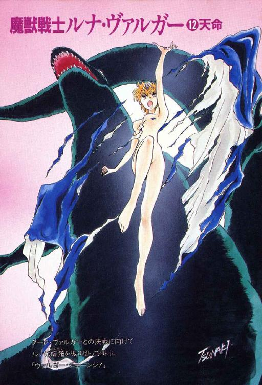
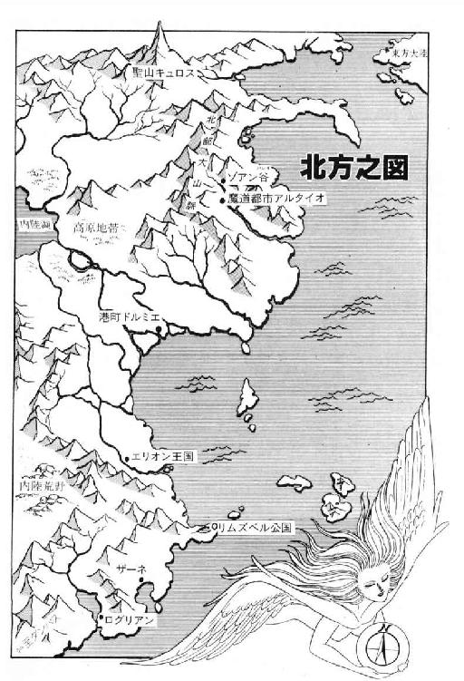
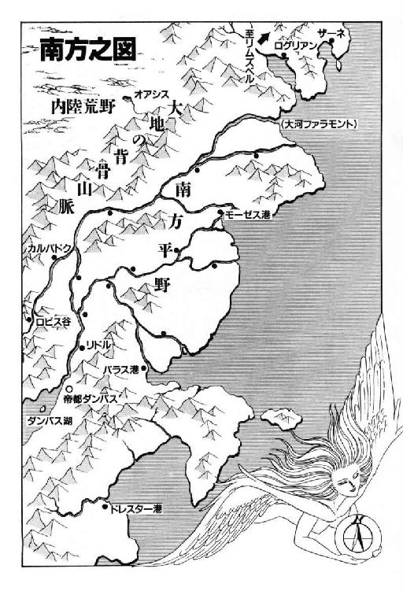
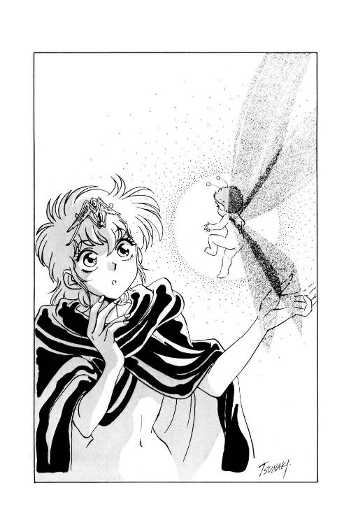
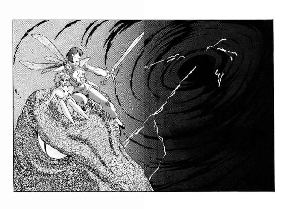
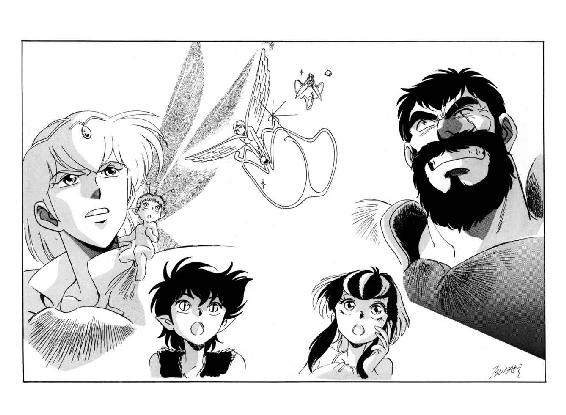
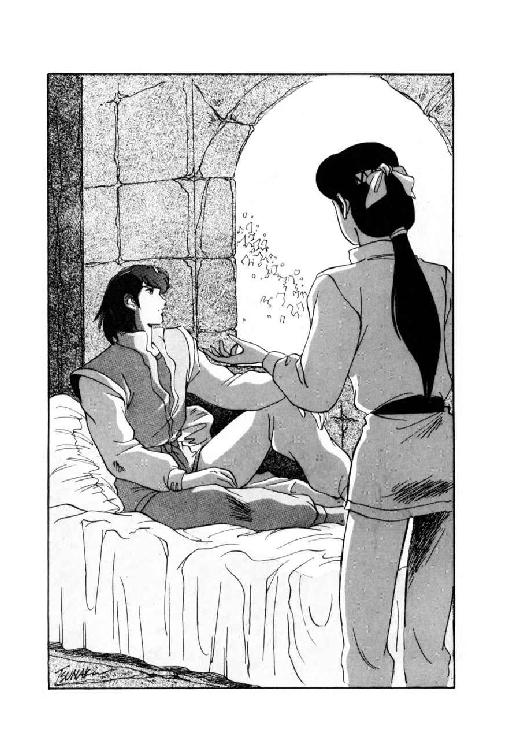
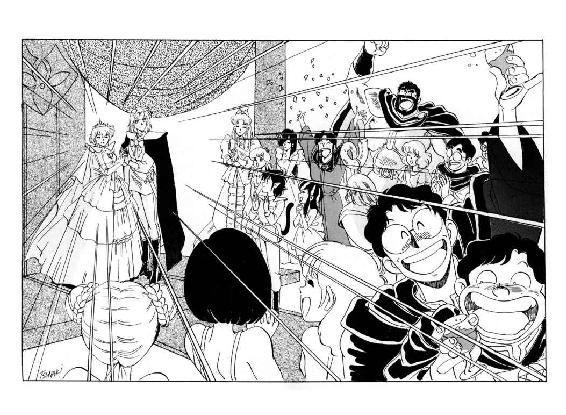

| 魔獣戦士ルナ・ヴァルガー＜１２＞天命 | |
| 秋津 透 | |
| (2015) | |

魔獣戦士ルナ・ヴァルガー
⑫天命
秋津 透
本作品の全部または一部を無断で複製、転載、配信、送信したり、ホームページ上に転載することを禁止します。また、本作品の内容を無断で改変、改ざん等を行うことも禁止します。
本作品購入時にご承諾いただいた規約により、有償・無償にかかわらず本作品を第三者に譲渡することはできません。
本作品を示すサムネイルなどのイメージ画像は、再ダウンロード時に予告なく変更される場合があります。
本作品は縦書きでレイアウトされています。
また、ご覧になるリーディングシステムにより、表示の差が認められることがあります。


登場人物
ルナ・ド・リムズベル リムズベル公国の第二公女。巨竜魔獣と合体中。竜神公。
巨竜魔獣ヴァルガー ルナと合体している伝説の魔獣。強大な力を秘める。
ゼナ・ド・リムズベル リムズベル公国の第一公女。ルナの姉。
ヴィーナ・ド・リムズベル リムズベル公国の第三公女。ルナの妹。
ミル・ユード カルバドク侯爵家嫡男卿。強化斬魔獣剣士。ルナの婚約者。
ヤンリー・ユード カルバドク侯爵家次男。ミルの異母弟。
バト・ロビス ロビス谷の領主。無謀戦士の異名を持つ。
ロコ ルナの使い魔の黒色有翼猫。少年の姿に変身できる。
リム・リリス（リル） 縞兎に変身する獣人の娘。プロの娼婦。
ノワール・ダンバス ダンバス帝国皇帝。通称 黒竜帝。重度の健忘症。
テオドラ・ド・エリオン エリオン王国の女王。天才的な魔道士。ザシャムの弟子。
大魔道士ザシャム 伝説の大魔道士。
闇の魔獣 魔獣四天王の一体。破壊の化身。
第一章 闇の魔獣
１
闇の魔獣は、激怒していた。
八百年間、ひたすら激怒していた。
封印の中には、音はない。光もない。闇さえもない。
その空虚な檻の中を、彼は己の憤怒で満たす。
『我を解放せよ！』
凄まじい咆哮が、封印の中に轟く。しかし、反響はない。
『我を解放せよ！』
彼は、憤怒を籠めて咆哮を続ける。それ以外に、できる事はない。
『我を解放せよ！』
ただ、身内に溢れる途方もない憤怒が、彼に絶え間なく凶暴な咆哮を吐かせる。
『我を解放せよ！ そして、万物を破壊せしめよ！』
２
「ひゅうっ！」
ダンバス皇帝宮殿の地下から外に出ると同時に、巨竜魔獣戦士ルナ・ド・リムズベルは、思わず口元をすぼめて奇声を発した。
夜明け前の帝都ダンバスは、激しい風に支配されていた。ごごうっ、ごごうっと荒々しい音を立てて、北の山脈から吹き下ろされてくる猛風が、彼女のマントや髪を激しく煽る。
「ひゃーっ、すごい風ね。それに、けっこう空気が冷たい」
「帝都の朝は、だいたい一年中こんな具合なんだ」
彼女の傍に立つ強化斬魔獣剣士ミル・ユードが、額のあたりに手をかざし、うっすらと光が射し始めた天空を仰ぎながら返答した。
「風向きには多少の変化はあるけれど、とにかく必ずと言っていいほど毎朝、山おろしの突風が吹き荒れる。ダンバス烈風と言ったら、南方では有名だよ」
「この土地では、気候まで乱暴なのね」
苦笑混じりに言い放つと、ルナは軽く肩をすくめる。すると長身の青年は、真摯な表情で天空を見上げたまま、彼女がちょっと意外に思うほど、真剣な口調で応じる。
「そうだ。帝都では、気候も地形も人の心も、すべてが荒々しく破壊的な様相を見せつける。その理由が、やっとわかった。この土地は、闇の魔獣に呪縛されているんだ」
低く呟くと、ミル・ユードはゆっくりと強化斬魔獣剣を抜く。そして、わずかに光を発している刀身に、射抜くように鋭く、しかも沈痛な視線を向ける。
「封印されているにもかかわらず、闇の魔獣の影響力は、確実に地上世界を侵食している。この呪縛の源泉を断たない限り、誰が皇帝になろうとも、ダンバス帝国は無益な破壊を続けるだろう」
「そうね。あたしも、そう思う」
魔獣公女も、真剣な表情になってうなずいた。
「それに、結果的には、あたしが巨竜魔獣の封印を解いたから、闇の魔獣の封印が緩んじゃったんだもの。どんなに危険が大きくても、今、決着をつけるしかないわ」
「確かにそうだ」
強化斬魔獣剣をじっと見詰めたまま、ミル・ユードが同意する。だが、そう言った後、彼はやや考え込むような表情になってつけ加えた。
「もっとも、それは、大魔道士の言葉を信じれば、だけどね」
「えっ？」
恋人の口調に、何か微妙な不信感のようなものを感じ、ルナは僅かに眉を寄せて彼の表情を見返した。
しかし、ミル・ユードは、そのまま強化斬魔獣剣を見据えたまま、それ以上言葉を継ぐ様子がない。ルナも、多少当惑気味の表情で口をつぐみ、彼女にとっては腑に落ちない沈黙が、暫時二人の間を占める。
と、その時、彼らの頭上から、ばさばさばさっと大きな羽音が聞こえて来た。
「パーカーだわ！」
羽音と風の音に逆らうように声を張り上げ、ルナは天空を振り仰ぐ。
確かに彼女の言う通り、刻一刻と光を増していく明け方の空を背に、魁偉な巨体が翼を広げて、悠然と地上に舞い降りてくる。その逞しい四肢が地面に着くのも待たず、ルナは鮫鷲獅子に駆け寄り、早口で訊ねかけた。
「パーカー、どうだった？ 皇帝宮殿の中、誰か、残ってた？」
「いいえ。この建物の中には、生命ある者は猫の子一匹たりとも残っておりません。少なくとも、私が確認いたしました限りでは、完全に無人となっております」
巨大な翼を悠々と畳みながら、鮫鷲獅子は例によって、まだるっこしいくらい丁寧な調子で返答する。
「更に申し上げますれば、この建物の外におきましても、私の視力の届く範囲内には、動く者の姿は何一つ存在いたしません。完全に断言するわけには参りませんが、かなり高い確率で、この都市全体が無人になっているのではないかと推定されます」
「なーるほど」
ルナは恋人の方を見やって、ちょっと悪戯っぽく微笑した。
「さすがは無謀戦士ね。一晩で、帝都を見事に空っぽにしちゃったみたい」
「うーん。叔父上の事だから、相当強引な工作をしたんじゃないかな。どの程度の実害が出ているか、僕はあまり考えたくないよ」
少し心配そうな表情で、ミル・ユードが唸る。
「まさかとは思うけど、パーカー、生命ある者が残ってないとか、動く者が存在していないとか言ってるのは、実は死体が散乱しているという意味じゃないだろうね？」
「強化斬魔獣剣士様、そのような御心配は無用かと存じます。建物の中には、死体はおろか、血痕の一つも見当たりませんでした。惨劇が行なわれた形跡は、全くございません」
あくまでも悠然とした調子で、鮫鷲獅子は強化斬魔獣剣士の疑惑に応える。
「いずれにいたしましても、種々の状況から考えまして、私は、今こそが闇の魔獣の封印を解き、対決する好機ではないかと判断するものでございます。従いまして、これぞまさしく御主人様が、以前、私の内部に設定なされました状況に適合し......」
「あれ？ どうしたの、パーカー？」
怪訝そうな表情で、ルナが訊ねる。鮫鷲獅子が、得意の長広舌を途切れさせるというのは、ちょっと珍しい。
しかし鮫鷲獅子は、彼女の問いに対して返答できる状態ではなかった。言葉が途切れるのと同時に、彼の巨大な身体は急速に強張り、硬直し、灰色の石と化し始めていたのである。
「えっ!?」
「な、なんだ？」
ぱりぱりと乾いた音を立てながら、鮫の頭部と獅子の身体がみるみるうちに石に変化してゆく光景を、ルナとミル・ユードは、半分あっけに取られて見守っていた。
そして、翼まで完全に石化した鮫鷲獅子の身体が、今度はぽろぽろと片端から崩れ始める。やがて、石像が完全に小さな瓦礫の山と化した時、その中から、きらきらと派手に輝く小さな光が飛び出してきた。相変わらず激しく吹き荒れる烈風に逆らって、その小さな光は、魔獣公女と強化斬魔獣剣士の前まで飛んで静止する。同時に、細く甲高い声が、光の中から聞こえてきた。
「いやー、どーも、驚かしちゃったかな。でも、それは、ボクのせいじゃないよ。わざわざこんな仕掛けをしておいた、マスターのせいだからね。そう、ボクはちっとも悪くない。それはまず、承知しておいてよ」
「ちょっと待って。あんた、いったい、何者なの？」
いきなり一方的に早口で喋り出した小さな光に向かって、ルナが多少強い調子で訊ねる。すると光は、僅かにふわりと移動しながら返答した。
「ボク？ ボクはプチ・パーカー。グレートザシャム・ザ・マスターの使い魔、鮫鷲獅子パーカーの本体さ。これからの行動には、大きな身体は邪魔なだけだからね。ここで余計な部分を捨てるよう、マスターがセットしておいたんだ」
「へーえ」
半信半疑の表情で、ルナは小さな光を凝視する。全体が輝いているので明確にはわからないが、どうやら光の中に、ほっそりした裸の身体と翼を持った小妖精がいるようだ。
「あんたみたいな小生物が、鮫鷲獅子の本体だったの」
「そうだよ。ボクは、鮫鷲獅子が知ってた事は全部知ってるし、知らない事まで知ってるよ。マスターが鮫鷲獅子にかけた知識の封印が、たった今、解けたからね」
いかにも自慢げに、小妖精が主張する。
「ハイパースレイヤーやヴァルガーベールの正しい使い方も、今なら全部わかるよ。ボクの豊富な知識があれば、闇の魔獣対策は万全さ」
「それなら、さっそく話して貰おう」
ミル・ユードが、穏やかな、しかしどこか冷ややかな口調で促す。
「闇の魔獣に対抗するには、どうしたらいい？」
３
「大事なのは、タイミングなんだ」
小妖精プチ・パーカーは、魔獣公女と強化斬魔獣剣士に向かって、かなりしつこく念を押した。
「早すぎてもいけないし、もちろん遅すぎてもいけない。ぴったりタイミングが合わないと、大変な事になるよ」
「それはもう、重々わかったわよ。あたしはそれより、あんたの方が心配だわ」
わずかに眉を寄せて、ルナが念を押し返す。
「本当に、あんたみたいな小生物が、あたしの傍までミルを運べるの？ 魔獣戦士の身長は、けっこう高いのよ」
「それは全然、心配ないよ。だいじょうぶ、まかせて」
自信満々の口調で、小妖精が返答する。
「身体はちょっと小さいけれど、ボクは、グレートザシャム・ザ・マスターの使い魔だよ。その程度の仕事が、できないわけないじゃないか」
「なら、いいけどね」
いざとなったら魔獣を屈ませれば済む事だし、と、ルナは声には出さずに呟いた。身体が小さいから見くびっているわけではないが、どーもこーゆー、偉そーな大口を叩く奴というのは基本的に信用できない。
それはとにかく、小妖精が説明した『闇の魔獣対策』というのは、手順としては、だいたい次のようなものだった。
まず最初に、魔獣隠身冠に据えられた女人像の翼を畳む。小妖精の説明によれば、これで、ルナが魔獣変身できる水準まで、魔獣隠身冠の制御力が下がる。
ところが、この状態では、強化斬魔獣剣が巨竜魔獣に反応してしまう。だから、魔獣隠身冠の翼を畳む前に、ミル・ユードが強化斬魔獣剣を鞘に収め、かつ、ルナから充分に離れる必要がある。
そして、いったんルナが魔獣変身し、闇の魔獣が封印を破ったら、ミル・ユードは即座に強化斬魔獣剣を作動させて結界を張り、自分の身を守らなくてはならない。この時、小妖精も一緒に結界に取り込む。
その後、ミル・ユードと小妖精は、可能な限り速やかに魔獣の頭部に飛んでルナと合流し、防御態勢を整える。この移動には、小妖精の念動飛行能力を活用する。
一方ルナは、ミル・ユードと合流する前に、魔獣隠身冠の翼を再び広げておく必要がある。でないと、強化斬魔獣剣が防御の役に立つどころか、巨竜魔獣に反応して損傷を与えてしまうからだ。
こうして、魔獣戦士と強化斬魔獣剣士が無事に合流し、協力して防御態勢を整えれば、闇の魔獣の攻撃といえども、ある程度は凌ぐことができる。その間に、攻撃の機会をつかんで相手を斃す、というのが大魔道士が使い魔に伝授した『闇の魔獣対策』だった。
「大ザシャム爺さんの計略が、本当に的確かどうかはわからないけど......」
強化斬魔獣剣を鞘に収め、光る小妖精を肩の上に伴い、小走りに距離を取るミル・ユードを見やりながら、ルナは口の中で呟いた。
「でも、他に策はない。結局、当てにするしかないわね」
決然とした表情になって、ルナは魔獣隠身冠の女人像へと、そっと指を伸ばす。既に、魔獣変身に備えて、隠身冠と掛け戻し錠のペンダント、そして、身体を包むマント一枚を除いて、すべての装備や衣類は、彼に渡してある。
そして、かなり遠くまで離れた強化斬魔獣剣士が、片手を上げて合図するのを確認して、彼女は女人像の翼を静かに閉じた。同時に、自分の頭の中に問いかける。
「魔獣、聞こえる？ この状態から、魔獣変身できる？」
「ソウダナ。多少窮屈ダガ、何トカナリソウダ」
例によって、巨竜魔獣の低く太い声が、淡々と応じる。
「シカシ、念ノ為ニ言ッテオクガ、俺タチノ周囲ノえねるぎー偏差ハ、コノ状態デモ感ジ取レルグライ大キイ。ココデ本来ノ姿ニ戻ッタラ、間違イナク、強力ナ魔獣ノ空間封印ヲ破ル結果ニナルゾ」

「それは、もう、わかってるわ」
かなり緊張した調子で、ルナは巨竜魔獣に返答する。
「わかった上で、魔獣変身するつもりなのよ」
「ソウカ。頭脳体ガ既ニ承知シテイルノナラ、肉体ニハ何ノ異存モナイ。早イトコロ、本来ノ姿ニ戻ロウゼ」
相変わらず、ごく平然とした口調で巨竜魔獣が促す。ったくもー、ずいぶん簡単に言ってくれちゃうじゃない、と、ルナは一瞬、かなり見当違いな憤慨を覚えた。
と、その時、東の山際から朝の光が、さあっと鮮烈に射しこんできた。
湖の表面に踊る無数の小波が、いっせいに、きらきらきらっと黄金の輝きを放つ。
その輝きの中で、ルナは内心の躊躇を一気に振り捨てた。
大きく息を吸い込んで、彼女は叫んだ。
「ヴァルガー・チェーンジ！」
その瞬間、まるで、朝がいきなり夕方に推移したかのように、太陽の光がすっと翳る。
同時に、猛々しく吹き荒れていた風が、ぴたりと止まる。
途方もない緊張をはらんだ静寂が、一瞬、周囲にたちこめる。
その静寂を破ったのは、小妖精の甲高い警告だった。
「ミルさん、強化斬魔獣剣を作動させてっ！」
「応っ！」
ミル・ユードが、即座に強化斬魔獣剣を鞘から引き抜き、身体の周囲に半透明の青い結界を張る。
そして、ほとんど間髪を入れず、凄まじい声が周囲一帯に轟く。
「我、解き放たれり！」
「うわっ！」
声が轟くと同時に強烈な衝撃に襲われ、強化斬魔獣剣士は思わずぐらっとよろめいた。彼の周囲の結界が激しく輝き、ばりばりっと耳障りな音をたてる。
「な、何だ、今のはっ!?」
「闇の魔獣の、咆哮だよっ！」
強化斬魔獣剣士の肩にしがみついた小妖精が、半分悲鳴のような声で叫ぶ。
「危ないところだったよっ！ あんな凄い咆哮を無防備状態で浴びたら、人間なんか、間違いなく一撃で発狂しちゃう！ 巨竜魔獣だって、衝撃受けてるみたいだものっ！」
「えっ!?」
はっとして、ミル・ユードは魔獣戦士の方に目を向けた。
確かに、既に直立巨竜の姿になっている魔獣戦士は、両前肢を頭上にかざし、わずかに身体を屈めて防御するような態勢を取っている。彼の位置からでは、巨竜の頭上にいるルナの状態はわからないが、闇の魔獣の咆哮が、彼女に何らかの損傷を与えた可能性は高い。
などと考察するより先に、強化斬魔獣剣士は小妖精に向かって鋭く叫んだ。
「すぐにルナと合流する！ 防御態勢を整えるんだ！ 飛行を！」
「了解！」
応えると同時に、小妖精の放つ光が一段と強くなる。そして、ミル・ユードの長身が、強化斬魔獣剣の結界もろとも、ふわりと空中に浮き上がる。
「どうだい、ボクの念動飛行能力は！ 見事なもんだろ！」
さっそく肩の上で小妖精が自慢を始めるが、ミル・ユードはまったく返事もしない。強化斬魔獣剣を両手でしっかりと構え、青い結界を維持しながら、接近する魔獣戦士の頭部を見据えている。
と、再び、闇の魔獣の凄まじい咆哮が轟いた。
「我、解き放たれたり！ 我、万物を破壊せん！」
「わああっ！」
咆哮に続き、小妖精の悲鳴と重なるようにして、天地が裂けたかと思うほどの轟音が強化斬魔獣剣士の耳を貫いた。同時に、空間そのものが強烈な閃光を放ち、視界が完全に真っ白になる。
「むううっ！」
凄まじい轟音と閃光に、危うく惑乱しそうになりながらも、ミル・ユードは反射的に目を閉じ、全力で強化斬魔獣剣に念を籠める。彼を囲む結界は、まるで苦悶するかのように激しく明滅しながら歪み、軋んだが、何とか突破されずに耐えきった。
ところが次の瞬間、彼の身体が結界もろとも、いきなりすうっと落下を始める。
「な、何っ？」
強化斬魔獣剣士は、はっと目を開け、肩の小妖精を見やった。なんと、大口叩きの小妖精は脆くも光を失い、彼の肩の上にぐったりと倒れこんでいる。
「おいっ！ どうしたっ！ しっかりしろっ！」
鋭い声で呼びかけたが、小妖精はぴくりとも反応しない。気絶しているのか、それとも息が絶えているのか。いずれにしても、このままでは地上に叩きつけられてしまう。強化斬魔獣剣の結界には、通常の衝撃に耐える力はない。
「ちっ！」
ミル・ユードは思わず舌打ちして、地上に目を向けた。どのくらいの高さから墜落しているのかわからないが、何とか死なずに着地しなくてはならない。ここで強化斬魔獣剣士が墜死したら、闇の魔獣との闘いは、始まる前に負けになってしまう。
と、彼の足元に、深緑色の壁がにゅっと差し出された。魔獣戦士の前肢だ、と、頭で理解するより早く、ミル・ユードは膝を曲げ、腰を落として巧みに着地する。同時に頭上から、魔獣に増幅されたルナの声が降ってくる。
「ミル！ 大丈夫っ？」
「大丈夫だ！ すぐ、そっちに行く！」
二人が慌ただしく呼び交わす間に、巨竜魔獣は身体を器用に捻り、強化斬魔獣剣士が前肢から頭上に移れるようにする。その態勢が整うが早いか、ミル・ユードは魔獣戦士の頭上に跳び移る。
「ありがとう、ルナ。助かったよ」
「間に合って良かったわ」
そう言ってルナは、にこっと微笑を浮かべた。強化斬魔獣剣の結界が放つ青い光を受け、魔獣隠身冠がきらきらと輝く。
その翼が大きく開いているのを確認した上で、ミル・ユードはルナに寄り添い、彼女の身体を強化斬魔獣剣の結界に取りこんだ。一瞬、ぱちっと青い火花が飛んだが、それ以上は特に抵抗なく、ルナの身体は結界の中に納まる。
「どうやら、こっちも間に合ったな」
ふう、と、安堵の吐息をつきながら、ミル・ユードは小さく苦笑した。しかし、もちろん、安心していられる場合ではない。
ここまでは、どうにか防御態勢が整ったというだけの事。闘いの本番は、ここから先だ。強化斬魔獣剣士は、表情を引き締め直して天空を見上げた。
そして彼は、思わず一瞬、息を吞んだ。
天空は、まさに凄まじいばかりに変貌していた。
つい先刻まで晴れ渡っていたはずの空には、濃淡さまざまな灰色の雲が、無数に浮かび出ている。
昇ったばかりの太陽は、雲に光を遮られ、今や、朦朧と形を見せるだけになっている。
そして、それらの雲は、かなりの高速で天空全体をびゅんびゅんと流れ、巨大な渦を形成していく。
地上では、完全に風が止んでいるというのに！
４
「黒い渦巻きか......」
まるで意志を持っているかのように、天空に巨大な渦を描く雲の流れを見据え、ミル・ユードは低く呻いた。
「これが、闇の魔獣というわけか......」

「いよいよ決戦ね」
裸の肩を恋人にぴったりと押しつけ、ルナが囁く。
「まず、あの渦に破壊叫を叩きこんでみるわ」
「やってみてくれ」
強化斬魔獣剣士がうなずくが早いか、巨竜魔獣が轟々と咆哮を上げ始める。そして、たちまち魔獣の咆哮は人間の可聴範囲を越え、強大な破壊力を持つ超音波となって天空に向かって放たれる。
と、数秒の間を置いて、雲の渦が大きく乱れた。同時に、渦の中心部に、ばばばっと真紅の閃光が煌く。
「効果あったか？」
「どうかしら......」
ルナとミル・ユードは、思わずわずかに身を乗り出し、天空の渦を凝視する。すると、彼らの希望を粉砕するかのように、闇の魔獣の咆哮が轟く。
「そこに在る者は、竜魔獣か！」
「くうっ......」
凄まじい衝撃を全身に感じ、ルナは表情を引き攣らせて絶句する。その周囲で、青い結界が激しく音を立てて明滅する。ミル・ユードは、必死の思いで強化斬魔獣剣に思念を籠め、全力をあげて結界を維持する。と、そこへ、闇の魔獣の咆哮が、ほとんど間を置かずに叩きつけられる。
「我、万物を破壊するに先立ち、まずは汝を破壊せん！」
「ま、まずいっ」
全身から汗を噴き出させながら、強化斬魔獣剣士が苦しげに唸る。
「力に、差がありすぎるっ......咆哮を防御するのが、精一杯だっ......本格的に攻撃されたら、とても耐えられないっ......」
「破壊叫が効かないんじゃ、攻撃もできないわ！」
震える声で、魔獣公女が叫ぶ。
「いったい、どうしたらいいのっ!?」
しかし、彼女の声に応える者はなく、またも闇の魔獣の咆哮が放たれる。
「模造物とは言え、魔獣は魔獣！ 汝には、我が最大の破壊力を駆使し、万全を期す！ 名誉に思うべし！」
「くううっ......」
僅かな油断すら期待できないか、と、ミル・ユードは咆哮の衝撃に耐えながら、ぎりっと奥歯を嚙み締めた。
強すぎる。
闇の魔獣は、あまりにも強すぎる。
大魔道士は、途方もない大噓つきだ。強化斬魔獣剣があろうがなかろうが、これは、最初から闘える相手じゃない。
と、天空に渦巻く雲の中心から、眩いばかりに輝く真紅の光線が放たれる。
その光を認めた瞬間、ミル・ユードは反射的に叫んだ。
「ルナ！ 躱せっ！」
そして、ほとんど同時に、巨竜魔獣が大きく跳ぶ。
しかし、その回避動作には、ほとんど意味がなかった。
渦の中心から放たれた光線は、空の中途で四方に散開し、真紅の巨大な光の傘となって、帝都のほとんど全域もろとも、巨竜魔獣を包みこんだのである。
「だめかっ！」
絶望的な呻きを上げながらも、ミル・ユードは思念のすべてを強化斬魔獣剣に注ぎこみ、防御結界を強化する。おそらく次の瞬間、咆哮などとは桁違いの破壊力が、巨竜魔獣に向かって炸裂するに違いない。彼は緊張に身を堅くして、その瞬間を待った。
しかし、闇の魔獣が放った真紅の光は、彼の予想とは全く違った作用をもたらした。
最初は、何が起きているのか、ルナもミル・ユードも見当がつかなかった。
地面が一瞬ぐらりと揺れ、それから上空の雲の渦が、徐々に接近して来るように見えた。
「地上に降りてくるつもりか？」
瞬きもせずに天空を見据えていたミル・ユードが、やや訝しそうに呟く。
と、ルナがいきなり金切り声で叫ぶ。
「違うわ！ こっちが地面ごと、上昇させられてる！」
「えっ!?」
強化斬魔獣剣士は狼狽した表情で周囲を見回し、そして、思わず目を見張った。
なんと、帝都を囲む山々が、ゆっくりと、しかし着実に低くなっていく。
いや、違う。それは錯覚だ。
感覚的には信じられないが、確かにルナの言う通り、こっちが帝都ごと上昇しているんだ、と、彼は半ば呆然として唸った。
まるで巨大な投網にかけられたように、帝都全域が丸ごと真紅の光に包まれ、地面もろとも大地から引き剝がされて空中に浮かび上がっている。
そして、想像を絶する凄まじい力で、闇の魔獣に引き寄せられていく。
それも、静々と、ごく穏やかに。
「冗談じゃないわ！ このままじゃ、完全に捕まっちゃう！」
じりじりと接近してくる雲の渦を見上げて、ルナが切迫した声で叫ぶ。
「急いで逃げなきゃ！ 魔獣跳躍！」
頭脳体が命じると同時に、巨竜魔獣は大きく跳躍した。さすがに一回では届かなかったが、三回目の跳躍で、真紅の光に抉られた地面の縁に行き着く。
「うわっ！」
地面の縁から光の幕越しに地上を見下ろして、ミル・ユードは思わず絶句した。無残に抉られた大地が、もはや半分霞んで見える。闇の魔獣が帝都を引き寄せる速度は、思ったよりも速いらしい。
ルナも一瞬、地上を見やって息を吞んだが、彼女はすぐに頭の中で肉体に訊ねかけた。
「魔獣、この高度から跳び降りられる？」
「高度ニハ、全ク問題ナイ。コノ程度ノ降下ナラ、軽イモンダヨ」
例によって淡々とした調子で、巨竜魔獣が応じる。
「シカシ問題ハ、光ノ幕ノホウダナ。明確ニハ分析デキンガ、トンデモナク強力ナえねるぎーガ張リ巡ラサレテイルノハ間違イナイ」
そう言うと、魔獣は僅かに間を置いて続けた。
「破壊叫ヲ浴ビセテモ、トウテイ破レンナ。捨テ身デ突入シテ、強行突破デキルカドウカ。成功ノ可能性ハ薄イガ、他ニ手段ハナサソウダ。強行スルカ？」
「当然でしょ！ こうなったら捨て身でも何でも、強行突破するしかないじゃない！」
ルナは思わず、声に出して叫んだ。
するとミル・ユードが、表情を引き締めてうなずく。
「君の言う通り、ここは強行するしかないだろう。結界は、できる限り強化する。思いきって突入してくれ」
「ありがとう」
うなずき返すと、ルナは声を限りに叫んだ。
「全力で突っ込め！ 魔獣跳躍！」
「オゥ！」
威勢よく応答すると、巨竜魔獣は光の幕に向かって、ごく無雑作に跳躍した。と、その巨体が真紅の光に触れると同時に、ばちばちばちっと凶暴な音を立てて、紫色の閃光が四方八方から襲いかかる。
「うわっ！」
「きゃあっ！」
「グオオオオッ！」
凄まじい衝撃、魔獣戦士と強化斬魔獣剣士に向かって叩きつけられる。強化斬魔獣剣の結界が、目も眩まんばかりの輝きを放つ。魔獣戦士の巨体が、まるで網にかかった魚のように、光の幕に捉えられて宙に浮いたまま固定される。
「頑張って！」
自分自身も激しい衝撃に見舞われながら、ルナが振り絞るような声で叫ぶ。
「ミル！ ヴァルガー！ お願い、頑張って！」
「くうううっ！」
「ガアアアアアアッ！」
公女の激励が効いたのか、その一瞬、強化斬魔獣剣の結界が、魔獣戦士の巨体を覆うほどに広がる。青白い輝きを全身に纏った魔獣戦士は、紫色の閃光を強引に振り払い、真紅の光の幕を咆哮と共に引き裂く。
「やったあ！」
ルナは両手を振り上げ、歓喜に満ちた声を上げた。
魔獣戦士と強化斬魔獣剣士が協力すれば、闇の魔獣が張った障壁を破ることができる。
これなら、闇の魔獣に対抗できるかも知れない。
しかし、彼女の歓喜は長くは続かなかった。
光の障壁を突破して、遥か下方の大地に向かって跳躍したはずの魔獣戦士が、いったい何が起こったのか、次の瞬間、すとんと地面に着いてしまったのである。
「えっ!?」
まさに呆然として、ルナは背後を振り返った。
そこには、真紅の光の幕と、抉り取られた地面の縁があった。
どうやら魔獣戦士は、障壁の内側に向かって跳び降りてしまった、らしい。
「ど、どうなってるのよ、これ!?」
当惑しきった声で訊ねてはみたが、誰も返答してくれない。ミル・ユードも巨竜魔獣も、彼女同様、完全にあっけにとられている。
そして、数秒間の途方に暮れた沈黙の後、彼女の頭の中で巨竜魔獣がぼそぼそと告げた。
「ドウヤラ、コノ光ノ幕ハ、えねるぎー障壁ト空間転移障壁ヲ、同時ニ兼ネテイルトシカ考エラレンナ。イッタイドウスレバ、ソンナ代物ヲ存在サセルコトガ可能ナノカ、俺ニハ見当モツカナイガ」
「そんなぁ......」
ルナは思わず、目いっぱい情けない声を出してしまった。
巨竜魔獣の説明は、正直言って、彼女には何だかよくわからない。
しかし、闇の魔獣が、巨竜魔獣には見当もつけられないほど高度な技を、ごく簡単に駆使している事だけはわかった。
そして、同じ魔獣と名がついても、巨竜魔獣では闇の魔獣を斃すどころか、まともに対抗する事すらできない事も、明白にわかってしまった。
「そんなぁ、ひどいわよ。反則よ。最初から、勝負にならないじゃない」
「闇の魔獣には、僕らと勝負する気はなさそうだ」
強化斬魔獣剣士が、ぼそりと呟いた。
「奴は僕らを、一方的に破壊するつもりでいる」
そして確かに、それだけの力の差はある、と、彼は言葉には出さずに続けた。しかし、どんなに可能性が薄くても、最後まで希望を捨てるつもりはない。
落胆しきったルナを見据え、ミル・ユードは意図して声に力を籠めた。
「もしも闇の魔獣に隙があるとすれば、そこだ」
「え？」
怪訝そうな、そして、僅かではあるが期待するような表情で、ルナは恋人の顔を見返す。
しかし次の瞬間、彼女の視線は上空に逸れ、いつの間にか至近距離まで迫っていた巨大な雲の渦に釘付けになった。
その表情に、激しい恐怖が現れる。
「吞みこまれる！」
ルナが悲鳴を上げると同時に、魔獣戦士と強化斬魔獣剣士は、帝都全域もろとも、黒い渦巻きの中心にするりと吞みこまれた。
闇の魔獣の、内部に。
５
「えっ？」
闇の魔獣に吞みこまれた瞬間、強化斬魔獣剣士は、いささか当惑した表情になった。
「何もなし、か？」
「みたいね」
魔獣公女も、多少拍子抜けしたような声を出す。
「衝撃ぐらいはあるかと思ったけど」
「間を置いて、気を緩ませるつもりかり？」
そんな小細工をするような相手とも思えないが、と、言葉には出さずに呟くと、ミル・ユードは改めて、注意深く周囲を窺う。
何も見えない。
何も聞こえない。
何の気配も感じられない。
闇の魔獣の内部なのだから、当然といえば当然かも知れないが、彼らの周囲は完全に闇に満たされている。
強化斬魔獣剣の結界が放つ青い光が、かろうじて唯一の照明となっているが、この圧倒的な闇の前では、ごく近い範囲内しか照らし出せないようだ。
「静かだな......怖いくらい」
ミル・ユードが、低い声でぼそっと呟いた。
「ルナ。魔獣の知覚力で、何か感じ取れないか？」
「それが全然、何も感じられないのよね」
ルナが、訝しそうに眉を寄せて返答する。
「ねえ、ミル。変だと思わない？ あたしたちと一緒に、山とか土とか建造物とか、ずいぶんいろいろ吞みこまれたはずなのに、その存在が全然感じられないのよ。だいたい、魔獣の足の下に、どうも地面がないみたいだし」
「何だって!?」
愕然とした表情になって、ミル・ユードはルナの顔を見やった。彼女は、わずかに首を傾げてじっと考えこみながら、更に言葉を継ぐ。
「それに、ここは闇の魔獣の体内なんだから、周囲には闇の魔獣の身体があるはずよね。ま、渦巻きだから身体はないのかも知れないけれど、少なくとも何か、外との境界があるはずじゃない。だけど、それがまるっきり感じられないの」
そう言うと、ルナは困惑した表情で、恋人の顔を見やった。
「いったい、これ、どうなってるのかしら？」
「......境界が感じられないという事は、つまり、この闇がどこまでも限りなく広がっているという事だね？」
ミル・ユードが、わずかに掠れたような声で訊ねる。ルナは、少し躊躇しながら、小さくうなずいて答えた。
「そうなの。上下左右四方八方、とにかく全部の方向に、闇がどこまでも広がっていて、他に全然何もない中に、あたしたちだけがふわふわ浮いてるような感じなの。ちょっと、うまく表現できないけど......」
「いや、だいたい状況が把握できたよ」
穏やかではあるが、覆いようのない沈痛さを含んだ口調で、強化斬魔獣剣士が呟く。
「どうやら僕らは、闇の魔獣の内部に、これ以上ないくらい完璧な形で、幽閉されてしまったらしい」
「完璧な形で、幽閉？」
彼が口にした言葉の内容以上に、その口調に衝撃を受けて、ルナは大きく目を見開き、恋人の表情をまじまじと見据える。
「それって、つまり、ここからは絶対に脱出できないって事？」
「絶対とは言わないけれど、凄まじく困難なのは確かだな」
そう言うとミル・ユードは、おそらくは無意識の動作だろうが、ほんの僅かに首を横に振った。
「どんなに堅固な代物だろうと、幽閉のための障壁が存在するなら、それを突破して外に出る可能性も存在する。だけど、障壁そのものが存在しないんじゃ、いったいどうやって外に出たらいいんだ？ 僕には、全く見当がつかない」
吞みこまれたのを逆手に取って、内側から闇の魔獣を攻撃できるんじゃないかと、実は秘かに期待していたんだが、と、彼は胸の中で苦い思いを嚙み締めた。
甘かった。
あまりにも甘かった。
これでは完全に、手も足も出ない。
闇の魔獣は、あまりにも超越した存在でありすぎる。
と、不意にルナが大きな声で叫んだ。
「あっ！ でも、もしかしたら、闇の魔獣があたしたちを絶望させようとして、魔獣の知覚力を攪乱してるのかも知れないわ！」
そう言って彼女は、わかった、と、言わんばかりに勢いよく両手を打ち合わせる。
「いっくら闇の魔獣だって、こんなに広い空間を、体の中に持ってるなんて、変だもの！ きっと、これ、幻影よ！」
「うーん、確かに可能性はあるけれど......」
でも、闇の魔獣ともあろうものが、そんな姑息な小細工をするかな、と、ミル・ユードは思わず首を傾げた。しかしルナは、完全にその気になって叫ぶ。
「確かめてみる！ 破壊叫、発射！」
彼女が命じると同時に、巨竜魔獣が轟々と咆哮を開始する。
急速に音響が大きくなり、ふっと消える。
それだけだった。
何の変化も反応もなく、周囲は再び、完璧なまでの静寂に包まれる。
そして、ルナが小さく呟いた。
「手応えなしだわ。やっぱり、これ、幻影じゃないみたい」
「そうらしいな」
強化斬魔獣剣士は、沈痛な表情でうなずいた。
「完全な手詰まり状態だ。どうやら、状況の変化を待つしかないな」
「状況の変化って？」
ルナが、恋人の顔を見つめて、すがるような声で訊ねる。
「この状況、変化するの？」
「可能性はあるさ」
そう言ってミル・ユードは、努めて平静な口調で説明する。
「闇の魔獣の体内は、完全に閉鎖された空間になっているみたいだけど、何かを吞みこむ時には、閉鎖を解く必要があるはずだ。だから、奴が次に何かを吞みこもうとした時が、内側にいる僕らにとっては、脱出の好機だ」
「なるほど、確かにそうね」
呟いて、ルナが小さくうなずいた。その表情に、多少なりとも落ち着いた気配が現れたのを見て、ミル・ユードは更に言葉を続ける。
「それに、外からの有効な支援がないとも限らない。僕らには、こういう閉鎖された空間に対処する手段はないけど、強力な移送術師なら、手の出しようがあるかも知れない」
「強力な移送術師？」
きょとんとした表情になったルナに向かって、ミル・ユードは微笑を浮かべて見せた。
「そうだよ。魔獣に手を出せる水準の移送術師を、僕らは二人も知ってるじゃないか。大魔道士ザシャムと、直弟子のテオドラ王女さ」
そう言うと、強化斬魔獣剣士は僅かに皮肉を含んだ口調で続けた。
「特に大魔道士は、僕らが闇の魔獣と対決するように仕向けた張本人なんだからね。ここで彼の支援を期待しても、それほど無理じゃないと思うな」
「そうね！ そうよね！ まったくよね！」
ルナは何度も、大きくうなずく。
「何の役にも立たない使い魔一匹つけて、それで終わりじゃあんまりだものね！ 今こそ、役に立つ支援をしてくれるべきよ！」
「あのさー、何の役にも立たない使い魔っていうのは、いっくらなんでもひどい表現だと思うよ」
不意に、不満そうな声が、ルナの言葉を遮った。
「カルバドクに呼びつけられてから、今まで、我ながらずいぶん良く働いて、いろいろと役に立ったと思うんだけどなー。賞賛してくれとは言わないけど、役に立たないって言われるのは心外だよ」
「あら、あんた、いたの？」
強化斬魔獣剣士の肩にくっついて、甲高い調子で自己主張する小妖精を見やって、ルナが冷淡な声を出す。
「ミルを持ち上げられなくて、潰れちゃったのかと思ってた」
「持ち上げられなかったわけじゃないよ！ 念動飛行は、ちゃんと成功したんだ！」
小妖精は興奮して、きいきいと声を張り上げる。
「ただ、闇の魔獣の咆哮が、予想以上に強烈で......」
「弁解するんじゃないの。理由が何であれ、そーゆーのを成功したとは言わないのよ」
にべもない口調で、ルナが決めつける。
「確かに、鮫鷲獅子はそれなりに役に立ってくれたわよ。でも、あんたが出てきてからは、大口叩くばっかりで、何の役にも立ってないじゃない。魔道具の使用法だって、前もって話しときゃ済む事だし、あんたの存在意義、なんにもないわよ」
「そ、そんな事はないよ！」
ますます甲高く声を張り上げて、小妖精が叫ぶ。
「身体は小さくても、グレートザシャム・ザ・マスターの使い魔なんだから！ ボクは、ちゃんと役に立つよ！」
「へーえ。じゃあ、役に立つ実例を見せてよ」
露骨に馬鹿にしたような調子で、ルナが言い放つ。
「いっくらあんたが自分の事しか気にしない勝手な性格でも、今、あたしたちが窮地に陥っている事くらいはわかるでしょう？ あんたが、この窮地から脱出する役に立つなら、そりゃ、もう、大したもんだと認めて上げるわ」
「ええっ？」
小妖精は、ここで初めて自分の置かれた状況に気がついたらしく、一瞬絶句して周囲を見回した。
「こ、こ、ここって、もしかして、闇の魔獣の体内空間？」
「そーよ」
ルナが素っ気なくうなずくと、小妖精は恐慌状態に近い声で喚き出す。
「そんな、そんな、冗談じゃないよ！ 闇の魔獣の体内から脱出するなんて、大魔道士本人だってできないよ！ それを、使い魔に、いったい何をしろって言うのさ！」
「別に、何をしろとも言わないわよ。どうせ、何もできないんだから」
辛辣な調子で言い放つと、彼女は一言、きっちりとつけ加えた。
「やっぱりあんたって、何の役にも立たないわね」
「違うよ！ ちゃんと役に立つけど、でも、この状況は、ちょっと、いっくらなんでも無理だっていうだけだよ！ もっと普通の状況なら、ボクは、とっても役に立つんだってば！」
小妖精は、しきりにぴーぴーと喚き立てるが、ルナはわざとらしく横を向き、ふんっ、と、軽蔑の意志を籠めて鼻を鳴らした。
そして、ミル・ユードは、小妖精に容赦なく憤懣をぶつけるルナを見やって、思わず小さく苦笑を浮かべた。
魔獣戦士ともあろうものが、吹けば飛ぶような使い魔相手に八つ当たりをするのは、まあ、確かに、あまり格好のいい行為ではない。
しかし、苦境に直面して意気消沈してしまうよりは、あまり益がなくても憤慨している方がよっぽどいい、と、彼は思う。
それに加えて彼自身も、肝心の時に失神したり自己弁護に走ったりするくせに、偉そうに大口を叩いて自己主張する小妖精には、かなりの苛立ちを覚えている。
もっとも、僕が憤懣をぶつけるとしたら、相手は使い魔ではなくて主人の方だ、と、ミル・ユードは言葉には出さずに呟いた。大魔道士ザシャムには、詰問してやらなきゃ納まらない事がいくつもある。
しかし、そのためには、まず、この窮地から脱出しなければならない。
闇の魔獣の体内空間から。
６
「どうだい！ ボクは役に立つだろ！」
小妖精が、ここぞとばかりに甲高い声を張り上げる。
「役に立つだろ！ 役に立つだろ！ ボクがいなかったら、困るだろ！」
「あー、わかった、わかった。あんたはとっても、役に立つわよ」
憮然とした表情で、ルナが応じる。
「で、役に立つのはわかったから、早いとこ仕事してくれない？ もたもたしてると、ミルが倒れちゃうわ」
口早に言いながら、彼女は恋人の方を気づかわしげに見やった。ミル・ユードは、相変わらず身じろぎもせずに強化斬魔獣剣を構え、青く光る結界を維持しているが、その表情には疲労の色が濃い。
「大丈夫、大丈夫、ボクに任せておけば、すべて完璧、間違いなしさ！ 治癒光線の放射は、ボクの最大の得意技なんだから！」
小妖精は、目いっぱい偉そーに大口を叩きながら、強化斬魔獣剣士の肩の上から顔の前へと飛び上がった。そして彼の額に触れ、小さな全身から黄金色の光を放射する。
「どう？ あんまり浴びすぎても意味ないし、まあ、だいたいこのくらいが適当だと思うんだけど」
「ああ、ありがとう。ずいぶん楽になった」
両目を軽く閉じた強化斬魔獣剣士が、少し硬い口調で答える。その様子を見ながら、ルナはほっと小さく吐息をついた。
とにかく、この場は凌いだ。
これで、また、しばらくは現状維持ができるだろう。
凌げなくなったら......それは、その時、考えるしかない。
闇の魔獣に吞みこまれてから、いったい、どのくらいの時間が経過したのか、ルナにも、ミル・ユードにも全く見当がつかない。
期待していた状況の変化もなく、ただひたすら、防御結界を張って待つだけの状態が延々と続いている。
いや、状況の変化が全く生じないわけではなかった。但し、生じたのは、彼女たちの側にとって不利な変化だった。
強化斬魔獣剣士ミル・ユードが、急速に消耗し始めたのである。
考えてみれば、当然かも知れない。いくら強化斬魔獣剣を使っているとは言え、人間の身で闇の魔獣の攻撃を防いでいるのだ。持久戦になれば、消耗しない方がどうかしている。
「だめか......」
顔面蒼白になった恋人が、苦しそうに呻いてぐらりと構えを崩したのを見た時には、ルナは危うく、自分の心臓まで止まるかと思った。そのまま倒れそうになる彼の長身を、慌てて脇から手を伸ばして支えたものの、彼女にそれ以上、何ができるわけでもない。
と、その時、小妖精がミル・ユードの額に飛びついて、いきなり目にも眩い黄金色の光芒を放った。
すると、ぐったりとしていた強化斬魔獣剣士の身体に、驚くほど急速に活力が戻る。
彼の身体を支えていたルナの腕にも、その変化がはっきりと感じ取れた。
「これは、いったい......？」
「どうだい！ すごいだろ！ ボクはとっても、役に立つだろ！」
あっけにとられているルナとミル・ユードに向かって、小妖精は目いっぱい自慢げな声で宣言する。
「これが、念動飛行と並ぶボクの得意技、治癒光線さ！ もう、役立たずなんて、絶対に言わせないからね！」
「助かった。礼を言うよ」
やや堅苦しい口調で言うと、ミル・ユードは軽く頭を下げる。
確かに、この場は助かった。
しかし、これは全くの一時凌ぎに過ぎない。
このままの状況が続けば、彼は再び消耗していくだろうし、小妖精の治癒光線も、無限に放射できるわけではないだろう。
そして、現在まで、ミル・ユードは治癒光線放射を三回受けた。
正確にはわからないが、何だか回を重ねるごとに、より短い時間で疲労が襲ってくるような気がする。
消耗が激しくなっているのか。
それとも、治癒光線の効力が減っているのか。
いずれにしても、それほど長くはもちそうにない、と、彼は半ば他人事のように、冷静に判断する。
はたして、強化斬魔獣剣士が完全に力尽きるまでに、脱出可能な状況の変化は起こるのだろうか。
外部からの有効な支援が、あるのだろうか。
それは全くわからない。
「最後まで希望を捨てるつもりはないが、覚悟は決めておいた方が良さそうだな」
言葉には出さずに呟きながら、ミル・ユードは強化斬魔獣剣の結界に念を籠める。活力が、ゆっくりと身体から抜けていくのがわかる。
どこまでもつか、と、彼は小さく溜息をついた。
もたなくなったら、それで終わりだ。
しかし、決定的な状況の変化は、強化斬魔獣剣士が希望した姿とも覚悟した姿とも違う、全く予想外の姿で現れた。
彼が三回目の治癒光線を浴びた直後、不意に、巨竜魔獣がルナの頭の中に囁きかけてきたのである。
「聞コエルカ、頭脳体？」
「ええ、聞こえるわ。何か起こったの？」
やや緊張した調子で、ルナが訊ね返す。闇の魔獣に吞まれて以降、肉体が呼びかけてきたのはこれが初めてだ。
すると魔獣は、ごく淡々とした調子で、凄まじいばかりに衝撃的な情報を告げる。
「闇ノ魔獣ガ、俺ノ内部ニ強制浸透シテキタ。コノ浸透ガ限界水準ヲ越エルト、俺ハ完全ニ分解サレル」
「な、な、な、何ですってっ!?」
仰天したルナは、思わず声に出して叫んだ。
「魔獣が、分解される、ですってっ!?」
「えっ!?」
こちらも目いっぱい驚愕した表情を浮かべ、ミル・ユードがルナの顔を見やる。
「ルナ！ 今、何て言ったっ？」
しかし、彼女は凍りついたような表情になり、恋人の問いにも答えない。
その頭の中では、魔獣が穏やかな調子で説明を続ける。
「ソウダ。闇ノ魔獣ノ体内空間デハ、アラユル物質ガ即座ニ分解サレル。俺ハ魔獣ダカラ今マデ耐エラレタガ、強制浸透ヲカケラレテハ、ドウニモナラン。モウ、ソロソロ限界ダ」
「そ、そんな......」
ルナは、引き攣った声で呻いた。肉体が分解されてしまったら、当然、頭脳体も無事で済むわけがない。
「何とかならないのっ？ 抵抗する方法、ないのっ？」
「残念ナガラ、何トモナラン。闇ノ魔獣ノ強制浸透ニ抵抗シキレル物質ハ、存在シナイ。分解サレルマデ、ドノ程度ノ時間ガカカルカ、ダケノ違イダ」
巨竜魔獣は、ちょっと異常なくらい淡々と返答する。冗談じゃないわよ、まさか、早々と諦めちゃってるんじゃないでしょうね、と、叫ぼうとした瞬間、ルナの脳裏に妙案がきらりと閃いた。
「わかった！ 物質じゃなけりゃいいのよ！ 強化斬魔獣剣の防御結界なら、闇の魔獣に抵抗できるじゃない！」
魔獣戦士の全身を強化斬魔獣剣の結界で覆うのは、困難かも知れないが、不可能ではない。確か、真紅の光の幕を破った時に、一瞬、そういう状態になったはずだ。
とにかく強化斬魔獣剣士に話してみよう、と、ルナは恋人の方に目を向けた。ところがそのとたん、今までとは一転した厳しい調子で、巨竜魔獣が彼女を制止する。
「イカン！ 結界デ防御シタトコロデ、ショセン一時凌ギニシカナラン！ シカモ、ソンナ巨大ナ結界ヲ張ッタラ、維持スルタメノ消耗ガ莫大ニナル！ 人間ノ体力デハ、十秒モ続ケタラ確実ニ死ヌゾ！」
「で、でも、でも、だけど......」
思いもかけない魔獣の剣幕に心底狼狽して、ルナはあわあわと口籠る。
「このままじゃ、分解されちゃう......」
「イイカ、頭脳体。落チ着イテ、聞イテクレ」
再び穏やかな口調に戻って、魔獣が語りかける。しかしルナは、その淡々とした思念の奥底に、まぎれもない真摯さと深い叡智を感じ取った。
魔獣が本気になっている！
その瞬間、彼女は悟った。今、ここで、魔獣の意図を正しく受け取れるかどうかで、すべてが決まる。
ルナはごくりと固唾を吞み、精神のすべてを集中させた。
そこへ、魔獣の思念が淡々と流れ込む。
「現在ノ状態ハ、確カニ危機ダガ、同時ニ好機デモアル。闇ノ魔獣ハ強制浸透ノ過程デ、魔獣戦士ニ自分ノ能力ヲ注ギコマザルヲ得ナイカラダ」
そう言って、魔獣は僅かに間を置いた。頭脳体に理解しやすいよう、言葉を選んでいるらしい。
「ソノタメ魔獣戦士ハ、分解サレル直前、闇ノ魔獣ノ能力ヲ使ウコトガデキル。ソシテ、闇ノ魔獣トイエドモ、自分自身ノ破壊力ニハ耐エラレナイ。コレハ、魔獣戦士ガ闇ノ魔獣ヲ斃ス事ノデキル、本当ニ千載一遇ノ好機ナンダ」
「......つまり、捨て身の攻撃ね」
喉の奥で小さく唸ると、ルナは努めて冷静な調子で魔獣に訊ねかけた。
「それで、もしも闇の魔獣を斃せたら、あたしたちは助かるの？」
「オソラク助カラナイ。ソコマデ浸透ガ進ンダ状態カラ、肉体ヲ再構成スルノハ、不可能トハ言ワナイガ凄マジク困難ダ」
穏やかに告げると、魔獣は再び間を置いてから続けた。
「シカシ、頭脳体ノ傍デ結界ヲ張ッテイル人間ハ、助カル確率ガ高イ。俺ニトッテハ、彼ノ生存確率ハ考慮スベキ問題ジャナインダガ、頭脳体ニトッテハ大問題ダロウ？」
「その通りよ、魔獣。配慮してくれて、ありがとう」
ルナは、真摯な表情でうなずいた。
このままでは、魔獣戦士も強化斬魔獣剣士も、まず間違いなく全滅する。
そして闇の魔獣は、自分で宣言した通り、容赦なく万物を破壊するだろう。
闇の魔獣には、それだけの力がある。
この怖るべき存在を斃せるなら、魔獣戦士が身を捨てるくらい安いものよね、と、彼女は完全に納得していた。
どんな人間も、いつかは必ず死ぬ。
それは魔獣の頭脳体でも、何の変わりもない。
「で、あたしは何をすればいいの？」
即座に心を決め、ルナはきっぱりとした口調で訊ねた。
こうやって魔獣がわざわざ話をするのだから、闇の魔獣を斃すために頭脳体がしなくてはならない事が、何か必ずある。
それも、おそらく、前もって充分に覚悟しておかなくてはならない、極めて困難な事に違いない。
すると案の定、巨竜魔獣は、わずかに声を低くして返答した。
「マズ、頭脳体ニハ、防御結界カラ出テ貰ワナクテハナラン。ソウシタラ、俺ノ内部ニ浸透シテイル闇ノ魔獣ノ要素ヲ、直接頭脳体ニ送リコム。ソノ要素ノ中カラ、有効ナ破壊力ヲ選ビ出シ、闇ノ魔獣自身ニ向カッテ行使スルノガ、頭脳体ノ役目ダ」
「......聞いてるだけでも、厄介そうね」
思わず眉を寄せて、ルナが唸った。
すると、魔獣があっさりと肯定する。
「アア、厄介ダ。ハッキリ言エバ、人間ノ精神ガ闇ノ魔獣ノ要素ニ耐エラレルワケガナイ。一瞬デモ意識ガ保テレバ、立派ナモノダ」
「......で、あたしは、その一瞬の間に、有効な破壊力を要素の中から選び出して、闇の魔獣を斃さなきゃいけないわけか」
はあ、と、彼女は小さく溜息をつく。しかし、どんなに困難でも、これ以外に闇の魔獣を斃す手段はない。無謀戦士じゃないけれど、こうなったら気合で何とかするしかない。ルナは完全に本気で、そう呟いた。
「だけど、闇の魔獣の要素って、具体的にいったいどんなものなの？ それがわかれば、選択がしやすいんじゃないかと思うけど」
ルナの質問に、魔獣はわずかに間を置いて答えた。
「闇ノ魔獣ノ要素ガ、人間ノ精神ニ、ドンナ具合ニ受ケ取ラレルカハ、俺ニモ予想ガツカン。タダ、闇ノ魔獣ノ要素トイウノハ、生物デ言エバ遺伝子ミタイナモノデ、奴ニ関スルスベテノ記録ダカラナ。人間ニハ容量過多ナ事ダケハ、間違イナイガ」
「でも、それじゃ......」
選択しようにもできやしない、と、ルナが文句を言いかかった時、不意に魔獣の口調が、急迫した調子に変わった。
「イカン！ 闇ノ魔獣ガ浸透シテキタ！ 俺ガ完全ニ分解シテカラジャ、捨テ身モ何モアッタモンジャナイゾ！ 逆襲ヲ敢行スルツモリナラ、急イデ防御結界カラ出テクレ！」
「わかったわ！」
慌ててうなずき、ルナは傍の強化斬魔獣剣士に目を向けた。
「ミル、魔獣から緊急要請があったの！ 今すぐ、あたしと魔獣から距離を取って！ でないと、みんなまとめて、闇の魔獣に分解させられちゃうわ！」
「ええっ？」
強化斬魔獣剣を構えたミル・ユードが、一瞬、あっけにとられたような表情になる。魔獣とルナの会話は思念で交わされるので、当然、彼は、ほとんど何も聞いていない。
「な、何だって？ 何がいったい......」
「ごめん！ 説明してる暇がないの！」
口早に言うと、ルナは恋人の肩に留まっている小妖精に向かって叫んだ。
「プチ・パーカー！ 分解させられたくなかったら、今すぐ念動飛行能力を使って、ミルと一緒にあたしから離れるのよ！ 全速力でね！」
「えっ？ ええっ？ えっ？」
狼狽した声を出す小妖精に、ルナは畳みかけるように、気迫を籠めて言い放つ。
「今こそ、役に立つところを見せてちょうだい！ 急いで！」
「りょ、了解！」
状況は全くわからないが、魔獣公女の有無を言わさぬ気合に圧倒され、小妖精は慌てて光を強める。黄金色の光が結界の青い光と重なり、そして、小妖精は強化斬魔獣剣士もろとも、かなりの速度で上方に飛翔を開始する。
あまりに急速な、しかも予想外の事態の展開に、強化斬魔獣剣士は、暫時、呆然とした表情になっていた。しかし、防御結界が魔獣戦士から離れた瞬間、彼は凄まじい不安感に襲われ、恋人に向かって声を限りに叫んだ。
「ルナーっ！ 死ぬなよーっ！ 死ぬんじゃないぞ、ルナーっ！」
「ミル......」
さようなら、と、彼女は急速に離れてゆく恋人に、声には出さずに決別を告げた。
あたしは、きっと死ぬでしょう。
でも、あなたは生きて。あたしが大好きだった、世界の万物とともに。
呟くと、彼女は声に出して魔獣に呼びかけた。
「さあ、防御結界から出たわよ！ 闇の魔獣の要素を、送って！」
「頼ムゾ、頭脳体......」
魔獣の声が、ひどく遠く、苦しげに聞こえ、ルナは一瞬ぎょっとした。
しかし次の瞬間、
凄まじい量、
凄まじい密度、
凄まじい内容の情報が、
怒濤のように彼女の内部に押し寄せ、あっという間に意識を奪い、感覚を吞みこむ。
とてもじゃないが、抵抗できるような水準の代物じゃない。
なすすべもなく意識を失う瞬間、ルナは魔獣の言葉を鮮明に思い浮かべた。
人間ノ精神ガ、闇ノ魔獣ノ要素ニ耐エラレルワケガナイ。
７
この世界ではない、世界。
この時ではない、時。
この空間ではない、空間。
そこには、神が存在した。
神は私を創造された。
私は神の下僕。
神は私に力を与えられた。
私は神のために働く。
私が神から与えられた力は『破壊』。
構成された物質を、分解する力。
神の御意に添わない物質を、分解する。
それが、私の使命。
破壊せよ！ 破壊せよ！ 破壊せよ！
神の御意のまま、私は破壊する。
破壊こそが、私の使命。
破壊こそが、私の存在意義。
おお、神よ。
私を創造され、力を与えられた神よ。
どうか、私に命じて下さい。
万物を悉く破壊せよ、と。
最初、私に認識できたのは、どこまでも広がる、全くの虚空だけだった。
懐かしいな、と、私は意識せずに呟いた。
そう、この茫漠とした空間は、私にとっては馴染みのものだ。
この空間で、私は計り知れないほどの時間を過ごしてきた。
ただ単に、無為に過ごしてきたわけではない。
私は、ずっと戦っていた。
この空間は、私の戦場なのだ。
そう、私は神の戦士。
神から『破壊』の力を与えられた、誇り高い戦士なのだ。
神がなぜ、私を戦わせるのか。
私が戦っている相手は、何者なのか。
そんな事情は、私にとってどうでもいい瑣末事だった。
神は、私を創造された。
神は、私に力を与えられた。
その神が、私に戦えと命じられたのだ。
与えられた力を存分に発揮せよ、と、命じられたのだ。
それ以上、何を詮索する必要がある？
身体のどこかに、馴染み深い感覚が走った。
敵だ。
破壊すべき標的だ。
神に与えられた力を、発揮する対象だ。
私の存在意義を証明してくれる、素晴らしい相手だ。
私は、全身を喜びに震わせて、空間を本格的に走査する。
いた。
やっぱり、いた。
数は七体。エネルギー量は中級の上、ぐらいか。
決して、侮っていい規模ではない。
しかし私には、神から与えられた力がある。
いかなる存在も抵抗不能の、『破壊』の力が。
私は慎重に力を調節し、標的に狙いをつける。
戦いでは、常に最初の一撃が重要だ。
最初の一撃が狙い通りの効果を上げられないと、戦いは長引く。
長い戦いは、神の望まれるものではない。
短時間に、確実に敵を殱滅する。
それが、神の望まれる戦い。
私が誇りとする、戦いだ。
充分に敵を引き寄せ、私は力を解放する。
「重力破壊斬！」
致命的な衝撃が、敵の編隊の中央で炸裂する。
三体が、何が起こったかもわからないまま、完全に破壊される。
残り四体にも、深刻な損傷を与えたのは間違いない。
いずれも、まともに回避軌道に乗る事もできず、よたよたと四散し、遁走にかかる。
しかし、もちろん、逃がしはしない。
完全に期待通りの効果に満足しながら、私は遁走する敵の一つに、二撃目の重力破壊斬の狙いを定める。
と、その時、どこからか微かな声がした。
「これなら......充分よね......」
何だ？
別の敵か？
私はすぐさま、周囲の空間を走査する。
しかし、周囲に存在するのは、損傷を受けた四体の敵だけだ。
そして、そのいずれも、通信波など出してはいない。
多少混乱を覚えながらも、私は再び、重力破壊斬を放った。
もっとも遠距離にいた敵が、完全に破壊される。
あと三体。
すると、再び微かな声が聞こえた。
「破壊するには......充分よね......」
「当然だ！」
私は、ほとんど反射的に叫んだ。
何者の声か知らないが、私は、神から『破壊』の力を与えられた戦士。
対象が何であろうと、破壊できる力を備えている。
それを疑う者は、容赦はしない。
私は憤怒とともに、三撃目の重力破壊斬を放った。
二体の敵が、同時に消える。
残りは一体。
逃げきれない、と、悟ったのか、三体目の敵は急速に反転する。
せめて一撃、私に浴びせようというわけだろう。
しかし、敵の攻撃が届く距離は、重力破壊斬の有効射程より遥かに短い。
迎撃する余裕は、充分にある。
私は冷静に、最後の敵に向かって狙いを定めた。
その時、またも声がした。
「これなら、ダーク・ヴァルガーを破壊するには、充分よね......」
「なにっ？」
私は、我が耳を疑った。
ヴァルガーとは、我が神の名。
そして、神から力を与えられた者の名。
それを破壊しようとは、何という不遜な！
「何者だ！」
私は一瞬、接近してくる敵を忘れて叫んだ。
「ヴァルガーを破壊しようとする者は、何者だ！」
「あたしは......ルナ。ルナ・ヴァルガー」
声が微かに、しかし明らかな意志を以て答える。
だが、ルナ・ヴァルガーとは？
私はますます当惑し、訊ねた。
「ヴァルガーが、なぜヴァルガーを破壊する？」
「それは......世界を滅亡から救うために」
声は、更に一層、私を当惑させるような返答をする。
「世界を救う？」
「ヴァルガーの存在は、世界を滅亡させる。破壊しなくてはならないのよ」
今や、声は微かなものではなくなっていた。
そこには、不可解な確信が籠もっていた。
確信を籠めて神の破壊を説く者の姿を求め、私は再び、空間を走査した。
そして私は、二つの事実に気がついた。
一つは、声を放っている者の姿が、どこにもないという事実。
もう一つは、私が無視した最後の敵が、もはや、危険なほどの近距離に迫っているという事実だった。
「迂闊な！」
自分自身を罵りながら、私は重力破壊斬を放った。
同時に敵が、全力攻撃をかける。
次の瞬間、最後の敵は完全に粉砕されたが、私も身体に痛撃を受けた。
存在が危うくなるほどの損傷ではないが、不面目な事、甚だしい。
しかし私の関心は、損傷や不面目とは別のところにあった。
「こいつだったのか？ 私に声をかけてきたのは」
最後の敵が砕け散った空間を凝視しながら、私は低く呟いた。
すると、あの声が、どこからともなく聞こえてくる。
「いいえ、違うわ。あたしは、あなたの内部にいる」
「私の内部に？」
あまりにも意外な返答に、私は一瞬、絶句した。
「馬鹿な！ 私は、神の戦士だぞ！ 私の内部に、そのような不遜な意志が存在できるはずがない！」
叫びながら、私は、自分の内部に注意を向けた。
もしも本当に、声を放つ者が私の内部にいるなら、即座に抹消しなくてはならない。
その時、またも声が聞こえた。
声は、歌うような調子で私に告げた。
「あたしは、あなたの内部から、あなたの力で、あなたを破壊する。世界を滅亡から救うために」
「かはぁっ......」
意識を取り戻した瞬間、ルナは大きく息を吐きだした。
本当に息を吐いたかどうか、それは彼女にもわからない。
息を吐く肺が、喉が、肉体が、果たして存在していたかどうか。
ただ、ルナの意識が、大きく息を吐きだした。
ルナの意識は、大海原の中で溺れかかっていた。
闇の魔獣は、まさに大海原だった。
なすすべもなく吞みこまれ、翻弄され、力尽きる寸前、
意志の力か、偶然か、
ルナの意識が、海面からぽかりとわずかに頭を出した。
長くはもたない。それは、わかっている。
次の瞬間にも、小波の一つも寄せれば、
彼女の意識は即座に大海原に吞まれ、二度と浮かび上がる事はないだろう。
だから、今、
この一瞬に、存在のすべてを籠めて、
ルナは、即座に躊躇なく叫んだ。
「重力破壊斬！」
「やめろ！」
どこかで咆哮が轟き、
大海原に、怒濤が巻き起こる。
その凶暴な力に巻き込まれ、
ルナの意識は、ひとたまりもなく海面から消える。
しかし、同時に、
彼女が放った意志が、更に巨大な破壊力を呼び起こす。
闇の魔獣自身すら抵抗できない、凄まじい破壊力を。
その時、ミル・ユードは、周囲の闇が燃え上がるのを見た。
微かな光すら放たず、真の闇のまま、激しく燃え上がるのを見た。
「これは、いったい......？」
不可解な現象に、彼は眉を寄せて唸る。
しかし、思案している場合ではなかった。
次の瞬間、凄まじい衝撃が強化斬魔獣剣の結界を襲う。
強烈な重圧に、結界が激しく輝く。
闇の炎が、結界の表面で、影となって踊り回る。
先刻までとは比較にならないほど、消耗が激しい。
強化斬魔獣剣士は、すぐに気付いた。
このままでは、
たちまち結界が維持できなくなる。
「くううっ......」
ミル・ユードは思わず、苦悶の呻きを洩らした。
一瞬、遠くなりかかった意識を、気力を振り絞って懸命に引き戻す。
失神したら、それが最期だ。
と、その時、不意に、
結界の周囲で燃える闇を、真紅の閃光が、すっぱりと切り裂いた。
縦に、横に、斜めに、
裂かれた闇は、急速に褪せてゆく。
白い、穏やかな光が、外部から射し込んでくる。
結界にかかっていた重圧が、まるで噓のように消える。
強化斬魔獣剣士の耳元で、甲高い声が、あっけにとられたような調子で呟く。
「これは、いったい、どうなってるんだ......？」
ミル・ユードは、答えなかった。
彼は、重圧が消えると同時に、
強化斬魔獣剣をしっかりと両手で握ったまま、完全に意識を失っていた。
第二章 夢幻の刻
１
その時、不意に天が裂けた。
天空を覆っていた巨大な雲の渦が、耳の潰れるような轟音とともに、いきなり真っ二つに裂けたのである。
渦の裂け目からは、まるで血潮が吹き出しているかのように、真紅の閃光が激しくほとばしっていた。その強烈な光が、地上のすべてを毒々しいほどに赤く照らし出す。
帝都ダンバス、いや、
元は帝都ダンバスだった湖の畔に集まっていた大勢の人間が、一斉に天を仰ぎ、この驚愕すべき光景を見た。
しかし、その光景の意味を知っている者は、ごく少数だった。
二つに裂けた雲の渦は、しばらくの間は、紅い閃光をとぎれとぎれに吐きだしながらも、そのままの形で天に留まっていた。
だが、やがて再び轟音が上がり、渦は力尽きたかのように完全に粉々になった。真紅の光芒が天空いっぱいに溢れ、それを背景に、無数の黒い雲の塊が、凄まじい速度で四方八方へ散ってゆく。
そして、天の隅に雲が散っていった後は、真紅の光も急速に薄れていく。その後には、尋常な太陽の光が穏やかに差し込んできた。
天空を見上げていた人々の多くは、何が起こったのか理解できないながらも、ほっと安堵の吐息をついた。雲の渦がいきなり出現して、帝都を吞みこんでから二十日余り、天空は、久方ぶりに平穏を取り戻そうとしていた。
と、そこに、ごく小規模な変化が起こった。天の半ばに小さな光点が現れ、そのままゆっくりと降下を始めたのである。
黄金色の光点は、陽光に紛れて最初は全く目立たなかったが、高度が下がって地上に近付いてくると、さすがに人の目につくようになってきた。
天空を震憾させた大変動に比べれば、確かに小規模ではあるが、光点には、人間一人程度なら充分に包みこむことができる大きさがあった。それが、ふわふわと揺れ動きながら、ダンバス湖の畔に並ぶ小さな丘の一つに向かって降りてくる。
怖いもの知らずというか、好奇心旺盛な帝国人が何人か、光の正体を見定めようと丘に向かって走る。しかし、彼らは目的地の少し手前で、見えない壁に行く手を阻まれた。
「何だ？ これは？」
帝国人たちが、不審そうな表情で空気の壁をどかどかと叩くのを尻目に、黄金色の光は、丘の向こう側に降りていく。そこには、人が何人か集まっているような気配があったが、誰がいるのか、何をしているのか、壁のこちら側から窺うことはできない。
そして、降りてゆく光の中に、意識を失った長身の青年が横たわっているのも、帝国人たちには見てとれなかった。
２
「う......」
苦しげに小さく呻きながら、ミル・ユードはうっすらと目を開いた。
濃灰色の瞳に、黄金色の穏やかな陽光と、青く澄みきった天空が映る。
同時に、野太い声が耳に入った。
「気がついたか」
「叔父上？」
全身に疲労が重く澱んでいるのを感じながらも、彼はゆっくりと上体を起こした。
バト・ロビスの髭面が、猫少年の浅黒い顔が、そして縞兎少女の鮮碧色の瞳が、心配そうにこちらを見詰めている。
しかし、彼が誰よりも見たいと思っている顔はない。
無意識のうちに、彼は小さく口に出した。
「ルナは......？」
「............」
ミル・ユードの呟きを耳にして、バト・ロビスとロコが、無言で顔を見合わせる。
と、巨漢の背後から、しわがれた老人の声が低く響いてきた。
「どうやら、結果がでたようじゃの」
「ザシャム！」
それまで半分呆然としていた青年の表情が、老人の声を耳にした瞬間、不意に、険しく引き締まる。
別人のような身のこなしで勢いよく立ち上がると、ミル・ユードは、ほとんど意識せずに叔父の巨体をぐいと押し退け、つかつかと大魔道士に歩み寄った。
大魔道士は、バト・ロビスたちからは少し離れ、湖の岸辺に立って、天空をじっと見上げていた。
その肩には、黄金色の光を放つ小妖精が留まっている。
歩み寄ってくる青年には目も向けず、大魔道士は天空を見上げたまま、低い声でぼそりと告げた。
「あれを見よ」
青年は、険しい表情のまま、天に目を向ける。
バト・ロビスや、ロコ、リル、
それに、ミル・ユードは気がつかなかったが、その場に居合わせた混血影人デュークと、影人第二十番も、一緒に天に目を向けた。
そして、ほとんどの者が驚愕の表情になった。
青空の一角で、何かがきらりと光を放ち、そのまま輝きを強めながら、地上に向かって降りてくる。
先刻、ミル・ユードと小妖精が地上に降りてきた時と似た状況だが、放つ光輝はまったく違う。
今、降りてくる光は、真紅と黄金が混じり合った、遥かに強烈で輝かしいものだ。
しかも、天空いっぱいに、銀の鈴を振っているような涼やかな金属音が鳴り響いている。
美しい、
と、ミル・ユードは素直に思った。
しかし、その美しさは、同時に痛切な哀しみを含んでいる。
輝かしく、美しく、そして哀しく、
光る物体は、地上に向かってゆっくりと降りてくる。
そして、やがて、その光輝は、
ミル・ユードの前に、ごく自然に静止した。
物体が静止すると同時に、光は消え、金属音も消える。
明らかになった実体を、ミル・ユードは憑かれたように凝視する。
「ヴァルガーベール......」
呟くと、青年は、空中に静止している華奢な造りの小冠を、両手でそっと受け止める。
この時、彼の右手から、強化斬魔獣剣のが地面にぽとりと落ちた。
ミル・ユード自身は全く意識していなかったが、この時まで彼は、いつの間にか刀身がなくなった強化斬魔獣剣のを、ずっと握り締めていたのである。
地面に落ちたは、そのまま、ぼろりと砕けて崩れる。
に嵌め込まれていた青い宝玉が、何か、生物の眼球のような感じの艶やかな光を、きらりと放つ。
しかし、ミル・ユードは、全く注意を払おうともしない。
彼は険しい表情で、魔獣隠身冠をひたすらに凝視している。
そこへ、大魔道士の年老いた声が、僅かに軋むような調子で告げる。

「これで、すべての気配が、完全に消えた。
この空間には、
もはや、何者も存在しない」
そう言うと、大魔道士は少し間を置き、
一同をゆっくりと見渡した。
「闇の魔獣は、消滅した。
世界は、破壊の運命を、免れた」
「そして、ルナも消滅した」
ミル・ユードが、魔獣隠身冠に瞳を据えたまま、押し殺したような声で呻く。
「貴方は、
闇の魔獣と巨竜魔獣の実力差を知っていた。
自分の身を犠牲にする以外、ルナには戦う手段がないのを知っていた。
そして、
他に手段がなければ、
ルナが自分を犠牲にしてでも、闇の魔獣を斃すだろうと知っていた」
無理に感情を押し殺したような口調で言いながら、
ミル・ユードは、刺し貫くような憎悪の視線を大魔道士に向けた。
「貴方は、
最初から生還の見込みがないのを承知の上で、
ルナを闇の魔獣と戦わせた。
ルナは自分の身を犠牲にして、
自分より遥かに強力な闇の魔獣を斃した。
そして、
世界の秩序を乱す二体の魔獣は、
実に都合良く、
相打ちになって共に消えた。
すべて、貴方が意図した通りの結果だ。
さぞかし満足な事だろう！」
ミル・ユードは、最後の一言を、まさに吐き捨てるように大魔道士に叩きつける。
彼の濃灰色の瞳には、狂おしいとさえ言えそうな激情が燃え上がる。
その、炎のような視線を受けながら、
大魔道士は、暫時、巌のように沈黙していた。
しかし、やがて、白い髭に覆われた口がゆっくりと動き、
しわがれた、やや重苦しい声で語り始める。
「否定はせぬ。
確かに、
儂は、お主の言う通り、ルナ公女が生還できないのを予測した上で、
闇の魔獣と戦うように仕向けた。
なぜなら、闇の魔獣は、
いかなる犠牲を払ってでも、斃さねばならなかったからだ。
闇の魔獣を斃すために必要ならば、
儂は、誰であろうと犠牲に捧げた事だろう。
むろん、儂自身を含めてな」
「しかし貴方は、自分を犠牲にしようとはしなかった」
ミル・ユードが、険しく硬い口調で指摘する。
「貴方が犠牲にしたのは、結局、ルナだった」
「他の者では、誰を犠牲にしたところで役に立たぬ。
むろん、儂が身を犠牲にしても、闇の魔獣は斃せぬ。
魔獣を斃せる者は、魔獣のみ。
ルナ公女は、それを立派に証明して見せた」
大魔道士の口調が、わずかに詠嘆調になる。
それを、青年が鋭く遮った。
「いずれにしても、
貴方は、ルナを欺いて、死地に追いやった。
僕がどうしても口惜しいのは、貴方が真実を語らなかった事だ。
身を犠牲にしなくてはならないと知っていても、
彼女はきっと、
闇の魔獣を斃しに行っただろうに！」
「許してくれ。
儂には、確信がなかった。
自分の予測そのものが、信じきれなかったのだ」
その時、いきなり、大魔道士の言葉に、思ってもいなかった剝き出しの弱さが現れた。
これには青年も、
周囲の人々も、
一瞬、狼狽した表情になる。
驚愕に満ちた沈黙の中、大魔道士は、告白するような口調で言葉を継ぐ。
「結果が出た今なら、偉そうな事も言える。
しかし、つい先刻まで、
儂は、闇の魔獣の真の力を知らなかった。
更に言えば、
巨竜魔獣の真の力も、正確には知らなかった。
そのような状態で、儂に何が言えよう。
死地に赴く戦士に、真実を告げる資格など、最初から儂にはない。
大魔道士などと呼ばれても、儂もしょせんは生身の人間。
それ以上でも、以下でもない」
静かな声で告げると、年老いた大魔道士は、不意に口調に力を籠めた。
「人間に過ぎぬ儂にできる事は、
力の及ぶ範囲内で、最善を尽くす事だけだった。
儂は、自分の予測をそのまま告げる代わりに、
持てる力の限りを尽くし、強化斬魔獣剣と魔獣隠身冠を造りあげた」
この老人の、どこからこんな声が、と、
聞く者すべてに、信じられない思いを抱かせるほどの熱情を籠め、
大魔道士は大きく衣を翻し、
魔獣隠身冠を持つ青年を、手にした杖の先で指し示した。
「強化斬魔獣剣の目的は、ミル・ユード、お主を生還させる事にあった。
そして、今こそ明かそう。
魔獣隠身冠の目的は、ルナ公女を復活させる事にあるのだ」
「ルナを復活させる!?」
ミル・ユードの両目が、張り裂けそうに見開かれる。
「そんな事ができるのか!?」
「間違いなく、とは言わぬ。
しかし、成否の鍵となる魔獣隠身冠が、闇の魔獣の破壊力にも耐えて戻ってきたのだ。
成算は大いにある」
そう言って、大魔道士は重々しくうなずき、言葉を続ける。
「魔獣隠身冠には、ルナ公女の個人記録が、完全な形で収められておる。
古代魔道理論によれば、完全な個人記録が残ってさえいれば、
それを元に、個人を再構成することができるのだ。
もっとも、理論はあくまで理論。
現実に人間の再構成に成功したと言える例は、この八百年間、一つもない」
「しかし、貴方は、今、成算があると......」
言いかかったミル・ユードを、大魔道士は片手を軽く動かして制し、
悠然とした調子で言葉を継ぐ。
「儂が成算ありと見ている理由は、ルナ公女が、他ならぬ魔獣の頭脳体だからだ。
頭脳体となる人間は、魔獣と合体する時、
いったんエネルギーに分解され、個人記録の状態で魔獣に注入、再構成される。
この機構は、リムズベル公国王城の地下に残っており、
ルナ公女が分解、再構成された時の記録も、儂が調べればわかるはず。
これなら、充分に成算はある」
自信ありげに言うと、大魔道士は、青年に向かっておもむろに片手を差し出した。
「そういうわけで、ルナ公女を再構成するためには、
この儂が、魔獣隠身冠を持って、リムズベル公国に赴かねばならぬ。
お主が儂を恨みに思う気持ちはわかるが、他ならぬルナ公女復活のためだ。
魔獣隠身冠を、渡して貰おう」
「ルナが本当に復活するなら、貴方を恨む理由はない」
まだ幾分、感情の整理がつかないような表情で、ミル・ユードは小さく呟いた。
「だが、できれば僕の事を、リムズベルに連れて行ってほしい。事態がどうなるにせよ、現場に居合わせなければ、苛立ちで気が狂ってしまいそうだ」
「ふむ」
一呼吸半ほどの間、大魔道士は青年の顔をじっと見据えた。
そして、比較的あっさりと、首を縦に振る。
「よかろう。
他ならぬ、お主の願いだ。リムズベルに同行しよう」
そう言うと、大魔道士は白い眉を僅かに寄せ、言葉をつけ加える。
「しかし、今更言うまでもあるまいが、
現場に居合わせた分だけ、余計に辛くなるかも知れぬぞ。わかっておるな？」
「わかっている」
ミル・ユードは真剣な表情で、きっぱりとうなずいた。
大魔道士が無言でうなずき返し、杖をすっと横に動かす。
すると次の瞬間、大魔道士と長身の青年の姿は、その場から跡形もなく消えていた。
３
リムズベル城の一角。
以前は大公の居室として使われていた、地底に通じる階段のある部屋で、
ミル・ユードは、椅子に腰掛けたまま彫像のように身じろぎもせず、
ただ、ひたすらに、じっと待っていた。
大魔道士ザシャムが、魔獣隠身冠を抱え、この階段を降りて行ってから、
もはや、十日近い時間が過ぎている。
確かに、大魔道士は、
長くかかるぞ、と、言い置いて行った。
逆に言えば、大魔道士がすぐに戻って来るようでは、ルナの復活は到底おぼつかない。
それは、わかっている。
理性では、重々わかっている。
わかってはいるが、やはり、待つ身は辛い。
まさに、筆舌に尽くし難いほど辛い。
ミル・ユードは、今や、
見る者を思わず戦慄させるほど、凄まじく憔悴しきっていた。
この十日間、
ミル・ユードがこの部屋で一人になる時は、一刻たりともなかった。
ルナの姉妹、リムズベル公女ゼナとヴィーナが、交代で部屋に詰めており、
公女の護衛役なのだろう、
リムズベルの戦士や水棲人が、必ず数人、室内に控えていた。
会話は、ほとんど交わされなかった。
最初のうちは、ゼナ公女やヴィーナ公女、
あるいは、リムズベルの海務卿や水棲人の族長が、
詳しい経過や状況を知りたがって、
種々さまざまな質問を、多少うるさいほど、彼に向かって浴びせた。
しかし、ミル・ユードは、それらの質問に全く答えなかった。
特に意図があって、答えなかったわけではない。
質問に答えるほどの精神的余裕が、今の彼には、本当になかったのである。
やがて、リムズベルの人々は、
彼の憔悴を見てとって、質問を浴びせる事を止めた。
会話自体がほとんど絶え、彼が煩わされる事はなくなった。
だが、ミル・ユードにとっては、
そんな事は結局、どちらでもいい事だった。
と、いうより、周囲から気を遣って貰っている事に、彼は全く気がつかなかった。
彼の関心は、ただ一点、
ルナが復活できるかどうか、その一点だけに向けられている。
そして、そのために彼ができる事は、少なくとも今は、何もない。
だから、彼は待っている。
無残に憔悴しながらも、ただ、ひたすらに。
がたっ、と、地下から音がした。
ミル・ユード、ヴィーナ公女をはじめ、
部屋に居合わせた全員が、さっと目に見えて緊張する。
「終わったのか？」
誰かが低い声で、ぼそりと呟く。
しかし、その呟きに答える者は、いない。
全員、息を殺し、
どんな微かな音も聞き逃すまいと、耳を澄ます。
そして、
緊張に満ちた静寂が、少しの間、続いた後、
ごと、
ごと、
ごと、と、
地下から階段を上がってくる音が、
まるで重病を患う老人の鼓動のように、ゆっくりと、重苦しく響く。
ごと、
ごと、
ごと。
上って来る音は、実際には、さほど長く続いたわけではない。
しかし、息を詰めて聞いている者たちには、
この音が、誇張ではなく無限に続くかと思われた。
そして、
彼らの時間感覚が、ほとんど失せかかった頃、
白髪、白髭の老人が、
大儀そうに杖をつきながら、階段の最後の段をゆっくりと上がり、
よろよろと部屋に入ってきた。
その姿を見た人々は、一瞬、我が目を疑った。
上がってきたのは、確かに大魔道士に違いない。
しかし、これは、何という変貌ぶりだ。
消耗している、とか、衰弱している、などという、なま易しい状態ではない。
肌は干からび、目は落ちくぼみ、身体のどこにも生気の微細片すら感じられない。
この老人は、本当に生きているのか。
もしかすると、死体が杖をついて、階段を上がってきたのではないか。
そんな不気味な思いに囚われ、
人々は、枯木のような老人を前に、暫時、絶句していた。
また、老人の方も、階段を上りきった姿勢のまま、
杖によりかかって身じろぎすらせず、一言も言葉を発しない。
この、双方の奇妙な沈黙を破ったのは、
これもまた、別人のように憔悴しきったミル・ユードだった。
「ルナは、復活したのですか？」
掠れた声で発せられた質問に、大魔道士は大儀そうにうなずく。
どうやら、声を出す力も、ろくに残っていないらしい。
しかし、その頭が、わずかにではあるが、確かに縦に動いたのを見て、ミル・ユードは、ほーっと安堵の溜息をついた。
「ありがとうございます。心から、感謝します」
「まだ......早い」
かさかさにひび割れた大魔道士の唇が、のろのろと動いて言葉を発する。
「感謝するのは......まだ......早い」
「どういう事です？」
ミル・ユードの眉がきゅっと寄り、表情が一転して険しくなる。
憔悴している分、険しい表情になると、まさに鬼気迫る凄味が現れる。
「この期に及んでまで、思わせ振りに韜晦するつもりですか？
ルナは復活したのですか？ していないのですか？
どちらです？」
「ルナ公女の......肉体は......確かに復活した」
一言、一言を、無理やり絞り出すようにして、大魔道士は返答する。
「しかし......彼女の精神が......無事に復活したかどうかが、わからん。
......意識が、まだ、回復しておらんのだ」
そう言って大魔道士は、いかにも辛そうに吐息をつく。
「なぜ、意識が回復せぬのか......目を覚まさせるには、どうすれば良いのか......。
儂には、残念ながら、皆目見当がつかん。
ただ、迂闊な手出しをするよりは、そのまま静かに見守って、時を待つ方が上策ではないかとは思うが......根拠は何もない」
「............」
息も絶え絶えという風情で、訥々と言葉を継ぐ大魔道士を、
ミル・ユードは、暫時、無言で凝視していた。
そして、
不意に、大魔道士に向かって、深々と頭を下げたかと思うと、
彼はそのまま足早に、地下に通じる階段を降りて行った。
他の人々は、
一瞬、完全に虚をつかれて、互いに顔を見合わせて立ちすくんだ。
その中で、いち早く我に返ったヴィーナ公女が、
ほとんど飛ぶような勢いで、青年を追って地底へと走る。
そして、一呼吸から二呼吸ほど遅れて、水棲人やリムズベルの戦士が、
多少おっかなびっくりという感じで、第三公女殿下の後を追う。
結局、
ただ一人、部屋の中に残った大魔道士は、杖に身体を預け、吐息混じりに呟いた。
「しかし、疲れた......」
強化斬魔獣剣と魔獣隠身冠を造りあげた時には、掛値なしに全力を振り絞ったと思っていたが、それでも、ここまで急激に、かつ強烈に消耗はしなかった。
人間一人を再構成するというのは、これほどまでに大仕事なのか。
それとも、ルナ公女の場合が特別なのか。
何か、儂の予期していなかった要素があったのか。
老いた魔道士は、僅かに思考を巡らしかかったが、
しかし、次の瞬間、凄まじいばかりの睡魔が、疲れきった彼の頭脳に襲いかかった。
まさにひとたまりもなく、大魔道士は深い眠りに落ち込んだ。
「ちょっと、ちょっと待って下さい、ミル・ユードさんっ！」
急勾配の階段を抜け、緩い下りになった斜路を息せききって走りながら、
ヴィーナ公女は、長身の青年の背中に向かって、甲高い声で叫んだ。
「あなたが、ルナ姉様の特別な人だというのは、知ってますっ。
でも、この通路の奥にあるものは、リムズベル公国の、秘事中の秘事なんですっ。
あたしが行って、ルナ姉様を連れてきますから、
お願いですっ！ 待ってっ！ 止まってっ！」
彼女の懸命な声が、さほど広くない地下通路にこだまするが、
ミル・ユードは、答えるどころか、振り向きもせずに、ひたすら先を急ぐ。
その歩みは速いが、全力疾走しているわけではない。
それなのに、懸命に走っているヴィーナが、どうしても間隔を詰めることができない。
まるで、幻影を追っているような感覚に、
彼女の背筋に、ぞっと戦慄が走った時、
不意に、前方から、
強烈な光が、さーっと周囲に溢れかえった。
「光の間!?」
反射的に手をかざして目を庇いながら、ヴィーナは思わず口走った。
以前、ルナが魔獣と合体した、光の溢れる空間。
その空間が、現在、どんな状態になっているのか、
そして、空間を開いた時に何が起こるのか、彼女には全く見当もつかない。
ただ、重大な禁忌に対する、本能的な恐怖を感じ、
彼女は反射的に足を止め、たじたじっと数歩下がりながら叫んだ。
「ミルさん！ 入っちゃだめっ！」
すると、この時、ミル・ユードが初めて返答した。
「ルナは、ここにいるんだ」
穏やかな、しかし、何かに憑かれたようにも聞こえる声で呟くと、
青年はそのまま、燦然と輝く光の中に踏み込んでいった。
逆光があまりにも強烈すぎて、ヴィーナの目には、その姿を捉えることができない。
彼女は両手を顔の前にかざしたまま、凝然とその場に立ち尽くしていた。
そして、
待っているヴィーナには、一瞬とも、永遠とも思える間を置いて、
ミル・ユードは、光の中から再び姿を現した。
彼の両腕に、しっかりと抱え上げられた女性の顔を見て、
彼女は思わず、声に出して叫んだ。
「ルナ姉様！」
ヴィーナは、この時になって初めて、
ルナが一回消滅して、そして、復活した、という事実を、実感する事ができた。
そして、ミル・ユードが、どんなに苦しい時を過ごしてきたかを、
朧げにではあるが、感じ取ることができた。
復活した恋人の、意識のない身体を抱えた青年は、
涙を滂沱と流しながら、ゆっくりと彼女の方に歩み寄ってきた。
そして彼は、本当に聞こえるか聞こえないかぐらいの、小さな声で、
万感の思いを籠めて、呟いた。
「生きている。
ルナは、生きている。
僕の腕の中で、呼吸をしている。
これ以上、僕は何も求めない」
４
ルナが復活してから、と、言うか、
ルナの肉体が復活してから、更に十日が過ぎた。
地底から、恋人の手で運び出された後、
ルナは、以前、大公が使っていた寝台に、そのまま寝かされているが、今のところ、一向に目覚める気配がない。
自力で呼吸だけはしているものの、食事もとらず、排泄もせず、
かと言って、消耗しているようにも見えない。
まったく変化の兆候がないまま、
ルナは、ただひたすらに、安らかに眠り続けている。
ヴィーナ公女は、
彼女が魔獣と合体した時の事を思い出し、
焼き魚や、その他、さまざまな料理の匂いをかがせてみたが、
それも、今のところ、完全な徒労に終わっている。
一方、ルナを復活させた大魔道士も、
五日の間、彼女と同様に、まるで死んだように眠り続けていた。
そして、六日目の朝、
大魔道士は、使い魔の小妖精とともに、リムズベルから忽然と姿を消した。
どこへ行ったのかは、まったくわからない。
現実問題として、リムズベルの人々が当惑したのは、
ルナやザシャムよりも、むしろ、ミル・ユードの態度だった。
彼は、眠り続ける恋人の傍らに座り、
一日中、ずっと彼女の顔を見つめている。
ルナが復活するのを待っていた間に比べれば、表情はずっと穏やかになっているが、相変わらず、ほとんど誰とも会話しようとしない。
ある程度事情を知っているヴィーナや、何も気にしないゼナはとにかく、
海務卿や戦士長、主だった戦士たちの間では、
いったい、あれは、どういう奴なんだ、と、
呆れるとも、不審がるともつかない評判が立っている。
もっとも、この時、リムズベル公国は、
急遽発生した、極めて重大な問題を抱えていたので、
ミル・ユードに対して注意を払っている暇は、誰にとっても、あまりなかった。
なにしろ、リムズベルの最も重要な戦力だった水棲人の一族が、
いきなり離反してしまったのである。
そして、
水棲人たちが離反した理由は、何と、
復活したルナに、尻尾がなかったからだった。
大魔道士ザシャムと言えども、魔獣の身体を再構成する事は、到底できない。
元来、水棲人は、竜神公の誇り高い配下で、人間に支配されるような種族ではない。
それが、今までリムズベル公国に服属していたのは、
竜神公ルナがリムズベルの公女だから、彼女の代理として承諾していたのである。
ところがルナ公女は、竜神公ではなくなった。
ならば、水棲人がルナ公女に従う必要は、何もない。
そして当然、リムズベル公国に服属する必要も、全くない。
「私は別に、
リムズベルに含むところはないし、敵対しようとも思わない」
水棲人の族長．ハルトこと、バルトストゥティエル・レウニス・アルフェリオンは、
僅かに苦みを帯びた口調で、一方的に宣告した。
「しかし、私の配下の中には、
竜神公の代理とはいえ、人間に服属し、命令を受けたことで、
屈辱感を持っている者も、少なからず存在する。
考えた結果、淵に棲む者は、リムズベルを離れる事にした。
縁があったら、また会おう」
そう言って、バルト族長は一族を引き連れ、リムズベルから去っていった。
ゼナ公女の近侍を勤めるパムこと、パムトゥティエル・ラウレンティス・フェルモーリン少年をはじめ、
リムズベルの人間と特に深く交際していた数人の水棲人が、
一族と別れて、自発的に残ってくれたものの、
海洋国家としてのリムズベル公国が、大きな痛手を被ったのは、間違いない。
この痛手を、いかにして他国に悟られないように埋めるか、
海務卿ジャックは、毎日毎日、脂汗をたらしながら頭を捻っている。
そういうわけで、
この数日、ミル・ユードは、ほとんど誰にも干渉されずに、
ルナの寝顔をじっと見詰めて、それだけで一日を過ごしていた。
眠っている彼女の容貌は、平和そのもので、
それを見詰めている青年も、ごく穏やかな表情をしている。
しかし、青年の表情の穏やかさの中には、
どこか、何かに憑かれたような、
人を慄然とさせる雰囲気があった。
このままルナが目覚めなくても、それはそれでいい。
僕は、これからの一生を、ルナを見て、ルナだけを見て、過ごすことができる。
ルナが目覚めない限り、僕には他に、何の関心もない。
それで、一向に構わない。
言葉には出さないものの、ミル・ユードの穏やかな表情は、
彼の決意、というか、
一種、異様なまでの思いこみを、これ以上ないほど明確に示していた。
そして、この日。
久方ぶりに、部屋の扉が遠慮がちに叩かれた。
「ミル・ユードさん。入っても、いいですか？」
侍女のエルミの高く澄んだ声が、扉越しに訊ねるが、
青年は、聞こえているのかどうか、
寝台の傍に座り、眠っているルナをじっと見たまま、返答しない。
わずかに躊躇した後、エルミはゆっくりと扉を開けた。
そして、相変わらず無言でルナを見据えている青年に、
嚙んで含めるような調子で告げる。
「ミル・ユードさん。南方から、貴方に会いに、人が来ています。
貴方の弟のヤンリーさん、護衛官のレイピアさん、魔道士のギルバートさんの三人です。
この部屋にお通ししても、よろしいですか？」
しかし、青年は、やはり何の反応も見せない。
エルミは小さく溜息をつき、一礼して部屋から出ていった。
そして、それから、しばらくして、
ヤンリー、レイピア、ギルバートの三人が、静かに部屋に入ってきた。
おそらく状況は聞いていただろうが、
それでも、
眠れるルナと、彼女をじっと見ているミル・ユードを目にした瞬間、
彼らの間に、声にならない動揺が走る。
ヤンリーの目が大きく見開かれ、
レイピアの表情が激しく強張り、
ギルバートの眉がきつく寄せられる。
しかし、ミル・ユードは何の反応も示さず、
ルナを見やったまま、視線ひとつ動かそうとしない。
やがて、ヤンリー・ユード少年が、
この、一方的に気詰まりな沈黙を破った。
彼は軽く咳払いをすると、
報告するような口調で、意外なほど淡々と言葉を発した。
「兄上の構想通り、カルバドクは、無事に帝国と講和を結びました。新皇帝陛下は、北方諸国に対しても、早急に講和を結ぶお考えのようです」
そう言うと、ヤンリーはわずかに視線を動かして、異母兄の表情を窺う。
以前、ミル・ユードは、南方と北方の講和を実現させようと、全身全霊をあげて努力していた。
しかし、それが実現された今、彼は何の関心も示そうとしない。
少年は小さく溜息をつき、
そして、南方の新しい政治的な状況を、詳細に話し始めた。
黒竜帝が、カルバドク及び北方との講和に踏みきった理由は、帝都の消滅と、バト・ロビスの説得によるものである事。
戦士の中の戦士として名高いバト・ロビスによる説得が、黒竜帝だけではなく、帝国戦士の多くを承服させた事。
最後まで講和に承服しなかったのは、ドレスデン一族であった事。
特に、陸上船舶侯の爵位を賜ったドン・ペドロ・カルロス・ドレスデンが、４ＷＤ暗殺の黒幕としてカルバドクを糾弾し、講和に反対した事。
ところが、ロビス峡谷からテック・ハラディが現れ、証言を行なったため、一転してドン・ドレスデンの立場が悪くなった事。
黒竜帝はドン・ドレスデンを咎めず、爵位もそのままにしているが、本家筋の海洋ドレスデン一族が陸上海賊を敵視し始めた事。
その動きを察知したドン・ドレスデンが、いきなり態度を百八十度変えて、北方との講和を支持した事。
同時に彼が、先手必勝とばかりに同族相手の攪乱工作に踏みきった事。
その結果、ドレスデン一族全体が大混乱状態に陥り、結束して講和を阻止するどころか、新しい大総裁を決定する事さえできなくなっているという事。
「ですから、今のところ、皇帝陛下の意志に背いてまで、積極的に講和を妨害しようという勢力は、事実上、存在しないわけなんです。それで、これからは、帝国と北方諸国の間で、講和の具体的な内容を話しあおう、という段階になるんですけど......」
そう言って、ヤンリーはわずかに口籠った。
実は、黒竜帝は、帝国とカルバドクの講和の席で、今後の北方諸国との講和交渉をカルバドクに仲介して貰いたい、と、明言している。
そして、本来なら、カルバドク嫡男卿ミル・ユードこそが、この役目にもっともふさわしいのは、誰が見ても明らかだ。
ヤンリー自身も、巨大飛行竜の背からリムズベルの地に降り立つまで、今後の異母兄の活躍を、全く信じて疑っていなかった。
しかし、それは間違いだった。
栄光に満ちた地位、名誉と権威を備えた重任、称賛に値する大きな功績。
今のミル・ユードにとって、そんなものは、一文の価値もない。
「まあ、とにかく、そういう事です」
不意に、少年は、割り切ったような口調で言い放った。

「後は、僕らで何とかします。どうも、お邪魔さまでした」
そう言うと、彼は、
最後まで視線すら動かそうとしなかった異母兄に向かって、
丁寧に深々と頭を下げた。
そして、
結局、一言も発しなかった女戦士と魔道士をともない、
彼は静かに部屋から退出する。
扉が閉まり、
眠れる公女と、彼女を見詰める青年が、再び部屋の中に二人きりになる。
と、青年の唇が、微かに開いた。
音には出ない。
声にはならない。
しかし、彼の唇は、確かに、こう動いた。
「すまない......」
ミル・ユードとの対面を終えたヤンリーたちは、
その後、ヴィーナ公女の部屋に向かった。
リムズベル公国の事実上の最高指導者を務める、十三歳になったばかりの小公女は、
何とも気まずそうな表情で彼らを迎え、やや躊躇気味の口調で訊ねた。
「やっぱり、ミル・ユードさん、何も言いませんでした？」
「ええ。もう、きっぱりと、完全に無視されました」
淡々とした声で、ヤンリーが答える。
「殿下のおっしゃった通りでしたよ。前もって御注意いただいて、本当に助かりました」
「いえ......」
首を横に振ると、彼女は小さく溜息をついた。
「姉が目を覚ませば、ミル・ユードさんも元に戻ると思うんですけど。でも、いったいどうすればいいのか......」
「殿下がお悩みになる事はありません。ルナ姫が眠り続けているのは、どうしようもない事かも知れませんが、兄の方は、自分の意志で、ああいう態度を取っているんですから」
そう言って、ヤンリーも、ゆっくりと首を横に振る。
「御迷惑とは思いますが、しばらく好きにさせてやって下さい。何しろ兄は、良くも悪くも、いったん思いこんだら、とことん意地を通す性格なので」
「はあ......」
やや上目遣いになって、ヴィーナ公女は、南方から来た少年を見やった。
見たところ、自分と同年配としか思えないが、ずいぶん大人びた話し方をする。
どこの家でも、兄や姉に問題があると、その分、弟や妹はしっかりせざるを得ないのかも知れない。
彼女は、自分の境遇に引き比べ、ヤンリーに対して急に親近感を抱いた。
そんな少女の感情を知ってか知らずか、少年は、どことなく達観したような調子で言葉を続ける。
「きっと兄は、自分にとって何が一番大切なのか、とことん思い詰めた挙げ句に、ああいう極端な態度に出たんだと思います。周囲にとっては確かに迷惑ですが、聞くところによれば、ルナ姫と兄は、世界を破滅から救ったそうですから」
大真面目な、しかし、どこか飄然とした表情で言うと、ヤンリー少年はヴィーナ公女の顔を見やって、軽く首を傾げた。
「僕ら身内としては、この程度の迷惑は、許容してもいいんじゃないかな」
「そうね。そうですね」
ごく微かに口元に笑みを浮かべ、ヴィーナ公女がうなずく。
立場が似ているせいか、この少年の話を聞いていると、何となく心が落ち着く。
本当に、文字通り、心もちではあるが、精神の負担が軽くなるような気がする。
そして彼女は、少年に向かって丁重に訊ねた。
「ところで、ヤンリーさん。よろしかったら、姉とミル・ユードさんが、世界を破滅から救ったという話を、具体的に聞かせて貰えませんか？ リムズベルでは、状況が全然分からないものですから」
「ふうっ......」
レイピア・ロナが、大きく、切なげな溜息をついた。
そして、くるりと体を回して、傍のギルバート・エゼンと向きあうと、
いきなり、
勇敢で冷徹な女戦士には似合わない、駄々をこねるような、拗ねるような、感情剝き出しの声を出す。
「ねえ、こんなのって、あり？ ありなの？」
「............」
ギルバートは、目に見えて困惑した表情になるが、この多弁な男にしては珍しく、言葉で返答しようとはしない。
ヤンリー・ユードとヴィーナ公女の話が長くなりそうなので、女戦士と魔道士は、先に公女の部屋を辞し、自分たちに割り当てられた客用の部屋に向かった。
その途中、人気のない長い廊下にさしかかったところで、それまで、表情を石像のように強張らせ、ほとんど言葉を発しなかったレイピアが、不意にギルバートに向かって、感情を爆発させたのである。
「ひどいわよ、こんなのって、ひどいわよ！ あんまりよ、あんまりよ！」
切れ長の目から、ぽろぽろと涙をこぼしながら、
彼女はまるで子供のように、身をよじって泣き叫ぶ。
何があんまりで、何がひどいのか、それは彼女自身にも、はっきりとは分からない。
ただ、ミル．ユードが、ルナが、そして自分が現在置かれている状況が、
彼女には、到底耐え難いほど不当に思える。
「こんなふうに、こんなふうになるために、みんな、ここまで、やってきたの？
それじゃ、あんまりよ！ いくらなんでも、ひどすぎるわ！」
ひどい、ひどいと絶叫しながら、レイピアは、ギルバートの胸元にむしゃぶりついた。
慰めようにも、慰める言葉がない。
当惑した表情のまま、彼は、女戦士の肩を無言で抱き寄せる。
その腕の中で、手放しでわあわあ泣きじゃくりながら、
彼女は、心の片隅で悟っていた。
今は、もう、泣けるだけ泣くしかない。
世界を覆すような、巨大で重圧に満ちた運命、
厳しく過酷な運命に直面した時、
自分のような普通の人間には、思いきり泣くぐらいしか、できる事がないのだから。
５
それから、更に、三十日余りが過ぎた。
その間、世界の情勢は大きく変化した。
ギルバート・エゼンが召喚する巨大飛行竜の背に乗って、
ダンバス黒竜帝自らが北方を訪れ、
リムズベル、エリオンと、それぞれ円満に、講和を結んだ。
更に、彼は北方魔道都市を訪問し、ファラ・ミルドレッド評議長と会談した。
もっとも、黒竜帝は、例によって、その健忘症ぶりを大いに発揮したため、
魔道都市評議長や、エリオンのテオドラ女王は、
彼に対して、「変な蛮人の親玉」という以上の印象は持たなかったらしい。
ところが、リムズベル公国では、少し事情が違った。
何と、世継公女のゼナ姫と黒竜帝が、見事なまでに話が合ってしまったのである。
この二人の会話の一部を、決死の思いで物陰から観察したヴィーナ公女の証言によれば、
常人ならば、誰もが耐え難くなるゼナ公女の長話に、
黒竜帝は、表情も変えずに、悠然と耳を傾けていたという。
その姿は、まさしく王者の風格に満ち溢れていた。
もっとも、黒竜帝の場合、どんな長話でも聞く傍から忘れるので、結果的に脳に損傷が残らないというのが、どうやら真相らしい。
そして、その分、酷い目に遭ったのが、黒竜帝の傍に控え、ゼナ公女の長話をすべて記録する羽目になった書記官である。
冷静沈着、自若泰然、職務精勤の権化のようなこの老人が、黒竜帝とゼナ公女の会談が済んだ時には、顔面蒼白、冷や汗をだらだら流し、今にも息が絶えそうな風情だったという。
実際、冗談抜きで生命の危険を感じたのだろう。最初の会談の直後、彼は特別に皇帝陛下の慈悲を願い、ゼナ公女殿下との会話に限って、公式非公式を問わず、書記官の立会及び記録を免除する、という勅令を賜っている。
そのため、黒竜帝とゼナ公女の会談の内容は、当人たち以外、誰にも知られていない。
更に、黒竜帝は覚えているわけがないから、会談の内容を記憶しているのは、ゼナ公女だけという事になる。
そして、敢えて彼女から会談の内容を聞きだそうと試みるほど、度胸があって、しかも思慮の浅い人物は、ダンバス、リムズベルを通じて、今のところ誰もいない。
そういうわけで、黒竜帝はこのところ頻繁にリムズベルを訪れ、まるで当然のように、ゼナ公女と二人きりで時間を過ごしている。
そして、それに伴い、南方の諸侯や将軍などが、リムズベルまで出向いてくるのも、さほど珍しくなくなった。
一方、北方諸国の統治者たちも、激しく変化する世界の状況を探ろうと、足しげくリムズベルにやってくる。
その中で目立つのは、元はリムズベルの戦士長で、ひょんな事からテオドラ女王の伴侶となった、エリオンの摂政カーライル卿。
そして、ファラ・ミルドレッド評議長から全権大使に任じられ、急遽魔道都市から出てきたアルバート・エゼン評議員。
この二人を筆頭に、大小の領主や自治都市の市長、交易商人などが、入れ替わり立ち替わりリムズベルにやってくる。
おかげで、ギルバート・エゼンは大忙しで、ほとんど休む暇もなく巨大飛行竜や黄金飛行竜を召喚しては、南へ北へと飛び回っている。そして、その傍には、琥珀色の瞳の精悍な女戦士の姿が、常に見られた。
また、リムズベル港に出入りする船の数も、誇張ではなしに爆発的に増え、海務卿ジャックと彼の配下の海務官たちは、何日もの間、職務に追われて碌に睡眠もとれなかった。
リムズベルの海務官は、ほとんどは元海賊で、相当過酷な状況でもめげない連中なのだが、この時ばかりは本当にきつかったらしい。何しろ、強気が看板の上級海務官カオス・ヤーマまで、せめて水棲人がいてくれたら、と、思わず愚痴ったほどである。
もっとも、彼女の愚痴には続きがあって、海蛮人なんぞは水棲人の排泄物よりも役に立たない、と、いかにも海賊出身らしく、痛烈に罵倒している。もちろん実際の表現は、同僚のキッド・スケルトンが、女性の使う言葉じゃない、と、たじろぐくらい汚い代物だった。
いずれにしても、時代は熱気を含んで激しく動いており、
その動きの中心にリムズベル公国があるのは、誰の目にも明らかだった。
しかし、
ある意味では、その動きを作り出した張本人とも言うべき二人は、
リムズベル公国に滞在してはいたが、
時代の動きとは、全く隔絶した状況の中にいた。
ルナ・ド・リムズベルと、ミル・ユード。
彼女には、依然として目を覚ます気配がなく、
彼は、彼女以外には、何にも関心を示さない状態を続けている。
二人が籠っている部屋には、
あれから、ヤンリー・ユードが何度か訪れ、
バト・ロビスも一度、現れた。
魔道都市評議長や北王国女王夫妻も見舞いに来たし、
黒竜帝直々の訪問もあった。
しかし、誰が来て何をしようとも、
ルナは目を覚まさず、
ミル・ユードは関心を示さない。
ルナとミル・ユードが籠ってしまった世界に、
多少なりとも割り込んだ、というか、共有した者がいるとすれば、それは、有翼猫ロコだけだろう。
ダンバス湖畔で別れてから、どこで何をしていたのか、
二十日以上過ぎた深夜、不意にリムズベルに戻って来た彼は、
誰からも、何も聞いていないはずなのに、
まっすぐに、ルナとミル・ユードの部屋に入り、
一言も声を出さないまま、
ルナの寝台の足元に蹲った。
そして、そのまま、
有翼猫は身じろぎひとつせずに、
まるで彫像のように、じっと床の上に蹲っている。
要するに、彼は、
ミル・ユードと同じ態度を取ったのである。
目が回るほど忙しい日々が続き、
リムズベルに集う人々は、
いつまでも目覚めない公女と、彼女にかしずく青年と有翼猫の事を、
ついつい、忘れがちになった。
忘れる事のできない者も、
忘れずにいる事が、あまりにも辛くて、
故意に、忘れた振りをするようになった。
彼らはこのまま、時の中に朽ちていくのかも知れない、と、
諦め半分に思うようになった。
世界を破滅から救うという、凄まじいまでの大仕事をやってのけたのだから、
もはや、彼らの果たすべき使命は終わったのかも知れない。
後は、喧騒に満ちた世界から隔離されて、
静かに、
ひたすら静かに、
朽ち果ててゆくその日まで、夢幻の刻が過ぎてゆく。
それはそれでいいのかも知れない、と、誰もが思いはじめていた。
第三章 呼ぶ声
１
そこは、とても気持ちの良い場所だった。
穏やかな光が溢れ、
暖かく、
爽やかな香りがしていた。
いつまでも、ここにいたいと思うような、
そんな、安息に満ちた場所だった。
しかし、どこか遠くから、
いくつもの呼び声が聞こえてきた。
悲しそうな声、
責めるような声、
威厳に満ちた声。
さまざまな声が、しきりに私を呼んでいた。
「戻っておいで」
「戻っておいで」
「お前の使命は、まだ、成就していない」
「帰っておいで」
「帰っておいで」
「平穏の中に浸るのは、まだ、早い」
そうだ。
私は再び、元の場所に戻らなくてはならない。
そこは、辛く、苦しい場所だが、
その場所にこそ、私が果たさなくてはならない使命がある。
与えられた使命を果たすまで、
私に、本当の休息は許されない。
それは、わかっている。
一時たりとも、忘れた事はない。
だから、せめて、もう少し。
もう少しだけ、この束の間の平穏を、
どうか、私から取り去らないでほしい。
もう少しだけ休息したら、必ず、使命を果たしに行くから。
「早くおいで」
「早くおいで」
「使命が、お前を待っている」
「急いでおいで」
「急いでおいで」
「世界が、お前を待っている」
わかっている。
わかっている。
わかっているから、もう少し。
わかっている。
わかっている。
わかっているから、もう少し......
もう少し......
２
その朝も、それまでの朝と同じように始まった。
眠り続けるルナの寝台の脇で、ミル・ユードは椅子に座ったまま仮睡していた。
その、穏やかではあるが、確実に衰弱の兆が見えて来た容貌を、
窓から差し込む、朝の陽光が照らし出す。
青年は、眩しそうに眉を寄せ、片手を上げて陽光を遮りながら、
ゆっくりと両眼を開いた。
と、
その時、
遠慮会釈のない大欠伸と共に、
絶対に聞き間違えようのない声が、とぼけた調子で彼の耳に飛び込んで来た。
「ふあ～あ、あ～あ～。あー、良く寝た」
「！」
一瞬のうちに表情を硬直させ、
ミル・ユードは、まるで操り人形のようなぎこちない動作で、寝台の方に目を向けた。
そこには、見るからに屈託なさそうな顔をしたルナが、
上体を起こし、両腕を頭上に伸ばし、裸の胸を晒して、大きく伸びをしている。
「う～んっ、と。あ、ミル、おはよ」
信じられないものを見たような表情で、凝然と両眼を見張るミル・ユードに、
ルナは、ごく無雑作に、明るすぎるほど明るい笑顔を向ける。
そして、さすがに、恋人の態度に不審を覚えたのか、
その笑顔が、ちょっと怪訝そうに眉を寄せた表情に変わった瞬間、
ミル・ユードが、猛然と彼女に跳び付いた。
「ルナ！ ルナ！」
「ちょ、ちょっと、ちょっと、ミル、いったい、なにが、どうなって......」
ルナは狼狽した声で訊ねかかったが、青年は返答せずに、力いっぱい彼女を抱き締める。いや、返答しないのではなく、最初から全然耳に入っていない。
「ルナ！ 良かった！ 戻って来てくれた！ 良かった！ 本当に、本当に......」
「ちょ、ちょっと、ミル、ミル、そんなに力入れたら、苦し......」
少しでも身を離したら、恋人が消えてなくなってしまうかのように、ミル・ユードは彼女を強く強く抱き締め、万感の思いを籠めて頰をすり寄せる。その両眼からは、熱い涙が滂沱と溢れ出し、何が何だか分からないまま目を白黒させている恋人の顔を濡らす。
と、この時、やっと目を覚ましたらしく、寝台の足元の方から、有翼猫がひょいと寝惚け顔を出した。
そして、一瞬、当惑した様子で、寝台の上で抱き合うミル・ユードとルナを見やったが、
すぐに、ぴょーんと大きく跳び上がり、そして、大慌てで窓から飛び出すと、突拍子もない声で絶叫する。
「ルナ様が、お目覚めになったぞ！
ルナ様が、お目覚めになったぞ！
わっ！」
あまりに慌て過ぎて、翼を広げるのを忘れたため、ロコはそのまま、窓から庭に墜落しかかった。しかし、地上激突寸前に翼を開き、危うく反転して上空に翔びあがりながら、再び、声を限りに叫び立てる。
「ルナ様が、お目覚めになったぞ！
ルナ様が、お目覚めになったぞ！
ルナ様が、お目覚めになったぞ！」
「なにーっ!?」
「わーっ、ほ、本当ーっ？」
「うおーっ！」
有翼猫の叫びに呼応して、早朝のリムズベル城は、たちまち怒濤のような歓声に沸き返る。
海蛮人の叩く太鼓が、どんどんどんどんと高らかに響きわたる。
その、時ならぬ喧騒の中で、
ルナとミル・ユードは、そのまま延々と、熱烈な抱擁を交わし続けていた。
そしていつか、ミル・ユードの唇が、ごく自然にルナの唇に重なる。
もう、一瞬でも離したくない。
このまま永遠に、腕の中に捉えておきたい。
そんな、理不尽とさえ言えそうなミル・ユードの情熱が、未だ状況を把握していないルナにも直截に伝わり、
二人は、完全に、我を忘れて身を寄せあう。
ルナの目覚めを確認しようと、妹公女たちが部屋に飛び込んで来た時も、彼らは全然気がつかず、誰憚らずに接吻と抱擁を続けていた。
３
「ちょ、ちょっと、ヴィーナ、苦しい！ 少し緩めてよ！」
「え？ これで苦しいの？ 一昨日は、この長さで、ちょうど良かったんじゃない？」
わずかに眉を寄せながら、ヴィーナ公女は、姉公女の背中に回り、いったん結んだ婚礼衣装の締め紐を解いた。
そして、少々緩めに紐を結び直しながら、彼女は姉の背に向かって、まるで遠慮会釈のない疑問を投げかける。
「ルナ姉様、ひょっとして、ここ数日で急速に太ってない？」
「ぎくっ！」
妹の鋭い指摘に、ルナは思わず、これから結婚式に臨む花嫁にはふさわしからぬ表情になってしまった。
「そ、そんな事ないと思うけどな」
「じゃあ、どうして一昨日はぴったりだった衣装が、窮屈になってるのよ？」
容赦なく追い討ちをかけておいて、ヴィーナは姉の正面に戻った。
そして、脇の台に置かれた花を婚礼衣装につけながら、朗らかな口調で目いっぱい辛辣な言葉を続ける。
「ま、いいか。とりあえず、今日一日何とかごまかしさえすれば、後は窮屈な思いする必要ないもんね。太るなり瘠せるなり、伸びるなり縮むなり、変身するなり破壊叫するなり、どーぞ姉様の御自由に」
「......ったく、あんた、姉を何だと思ってるのよ？」
仏頂面で、ルナは唸った。
「そりゃ、あたしが先日まで魔獣の頭脳体だったのは、事実だから。南方の人や何かが、今でもあたしの事を怖がってるのは、まあ、仕方ないと思うわよ。だけど、合体が解けたの知ってるあんたまで、あたしの事魔獣扱いする事はないでしょーに」
「気にしない、気にしない」
いかにも屈託なさそうに、少女は軽く、くすくすと笑う。
「妹から魔獣扱いされよーと、世間から怪物扱いされよーと、そんなの、どーでもいい事よ。愛する男性さえ人間扱いしてくれれば、それでもー充分ってもんじゃない？ こーの、このこの、果報者っ！」
「そ、それは、まあ、そうかもしれないけど......」
ちょっと狼狽したような表情になって、ルナは頰をぽっと紅く染めた。
うむうむ、こーして見ると、ルナ姉様もけっこー可愛いじゃない、と、妹公女が余裕のある笑みを浮かべる。
と、そこへ、部屋の扉をとんとんと柔らかく叩く音がした。
続いて、他人には絶対に真似のできない独特な調子で、優しい声が訊ねる。
「ルナ、ヴィーナ、ずいぶん時間がかかっているようですけれども、お支度は、そろそろできましたか？」
「げっ！」
その瞬間、ルナのみならず、ヴィーナの表情まで、思わず引き攣る。
そしてルナが、大いに泡を食った声で返答する。
「ゼナ姉様！ 今！ 今！ 今、今、行くから、用意できたから、できてるから、ちょっと、ちょっと待って！」
「あら、そうですの。それでは、ちょっと失礼して、着付けの具合など、拝見させて頂きますわね」
妹の制止など完全無視して、ゼナ公女は悠然と扉を開け、支度部屋の中に入って来た。そして、婚礼衣服を纏った妹を見やって、にっこりと花のような微笑を浮かべる。
「まあ、ルナ。とっても綺麗ですわよ。やはり、あなたには、この衣装がとても良く似合うに違いないというわたくしの見立ては、間違ってはおりませんでしたわね」
そう言ってゼナ公女は、満足そうに大きくうなずくと、妹たちが止める間もなく、婚礼衣装の由来を滔々と説明し始めた。
「この婚礼衣装は、元は、わたくしたちの曾祖母様に当たるエレオノーラ・ド・ローモント様が、リムズベルにお輿入れになる時に、持っていらっしゃった衣装のひとつですのよ。エレオノーラ様は、良い衣装を多く揃える事を好まれたお方で、ローモントの姫君だった頃には、毎日一着ずつの割合で、新しい衣装を作らせたと伝えられております。ですけれども、当時のリムズベルは、格式こそ高かったのですけれども、貿易で栄えていたローモント市とは比べものにならない、とても貧しい国でしたの。そして、リムズベルにお輿入れになってからのエレオノーラ様は、まるで別人のように倹約を旨とするようになられて、新しい衣装は作らず、御実家から持ってらした沢山の衣装も、後々役立てることができるように、大切に大切に保存なさったのです。その、曾祖母様の深い御配慮があったからこそ、今日、あなたが、こうして、この衣装を身に纏うことができるのですよ。本当に、有り難い事ですわね」
「はー」
それは、まー、どーも、大した事で、と、
ルナは心底、うんざりした表情で呟く。
しかし、ゼナ公女はもちろん気にも留めず、にこにこと嬉しそうに微笑しながら、更に延々と言葉を続ける。
「ですけれども、ルナ。あなたがこの衣装を着ることができて、わたくしは、本当に良かったと思っていますのよ。それはもちろん、結婚式を挙げることができて良かった、という意味もありますけれども、ほら、あなた、この前まで、普通の姿をしていても、大きな尻尾が残っていましたでしょう？ あの姿で、婚礼衣装を着る事を考えると、やっぱり、使えるものがとても限られてしまいますものね。魔獣との合体が解けたのが結婚式を挙げる前で、本当に良かったと、わたくしは思いますのよ」
「うー」
そーゆーもんなんだろーか、と、ルナは思わず頭を抱えた。
ルナが長い眠りから目覚めてから、今日まで、ちょうど半年が過ぎている。
そして今日は、ルナとミル・ユードの二人にとって、まさに待ちに待った結婚式の日だ。
どうして、結婚式まで半年も待たねばならなかったかというと、
ミル・ユードが新都市テミスの侯爵に任じられ、彼らの結婚式が、同時に都市の落成式を兼ねる事になったからである。
テミス市は、南北融和の象徴として、南方と北方の境界である大河ファラモントの河口に建設された。
最初は河岸に造られるはずだったのだが、南岸に造るか北岸に造るかで、関係者の間で論争が起きかかった。
そこへ、どうせなら河の上に造ればよいではないか、という、英断とも非常識ともつかない黒竜帝の一声がかかり、大河に架けられた巨大な橋の上に都市を造るという、前代未聞の大計画が発動されたのである。
本来なら、大河に橋を架けるだけで何年もかかるところだが、そこは南北融和の象徴となる都市。魔道都市の技術と、帝国の富及び労働力が惜しみなく投入され、たった半年で、橋と城塞を中心とする都市の基本部分が出来上がった。
ちなみに、テミス建設の実行責任者には、南方最強の建築家イン・ギックが任じられたが、この仕事は、ある意味では彼の命取りになってしまった。
と、いうのは、魔道都市から来ていたアルバート・エゼンが、彼の奇妙な設計と建築に疑問を抱き、調査を行なった結果、この建築家は魔道士でもないのに魔道能力を使っている、と、判明してしまったのである。
本来、魔道都市の戒律では、魔道士以外の一般人が魔道を使うのは禁止されている。実際には、特に魔道都市の外では、見てみぬふりで黙認される事も多いが、しかし、こうもおおっぴらな形で使われては、さすがに黙っているわけには行かない。
アルバートは、どうやら最初は内密に建築家に注意をしたようだが、イン・ギックは、例によって持ち前の傲岸不遜な態度で応じたらしい。彼が絡むと、だいたい、穏便に済む事態も済まなくなる。
そして、結局、アルバートの通報により数人の内務監察官が派遣され、つい先日、ぎゃーぎゃー喚くイン・ギックを、問答無用で魔道都市に強制連行していった。最初は、助手のユーキ・オ・カート嬢が抵抗する気配を見せたが、アルバートが情理を尽くして説得し、こちらはおとなしく魔道都市に同行した。おそらく二人とも、充分に修業を積んだ（あるいは、積まされた）上で、魔道士として認定される事になるだろう。
そういうわけで、テミス建設実行責任者イン・ギックは、新都市の落成式に出席できなくなってしまったが、もちろん、そんな事件は瑣末事に過ぎない。
テミス新侯爵ミル・ユードとリムズベル第二公女ルナの結婚式、兼、新都市テミスの落成式には、北方、南方の各地から、大物小物取りそろえ、それこそ無数といっていいほどの賓客が集まってきているのだから。
数多くの賓客の中でも、最も大物といえば、やはり大魔道士ザシャムを筆頭に挙げなくてはなるまい。しかし、正確に言えば、大魔道士はミル・ユードとルナの結婚を祝うために来るわけではなく、ましてや、テミスの落成を祝うつもりなど、更にない。
この伝説の大魔道士は、ルナが目覚めてから数日後、ふらりとリムズベルにやって来た。そして、ルナを見やって、一方的にうむうむとうなずくと、そのままあっさり姿を消した。
それから、きっちり二十日ずつの間隔を置いて、大魔道士は、ルナがどこに居ようと必ず会いに来て、うむうむとうなずいて帰っていく。それが、この半年、ずっと続いており、今日は大魔道士のルナ訪問日に当たっているのだ。
実のところ、大魔道士がいったい何のために定期的に来ているのか、ルナは、何回目かの訪問の時に訊ねている。すると大魔道士は、ごく真面目な表情で言い放った。
「むろん、お主が心配だからじゃよ。儂といえども、人間を完全に再生したのは初めてじゃからな。理論上は何の問題もないはずなのじゃが、実際には何が起こるか分からん。だいたい理論上では、あんな長時間、お主が眠り込むはずがないんじゃからな」
「............」
そーすると、あたしの身体は、未だに何が起こるか分からない代物なわけか、と、さすがのルナも、この時は一瞬絶句した。
しかし、そこは本来楽天的な彼女。逆に言えば、何か問題が起これば大魔道士が何とかしてくれるに違いない、と、見事に開き直って、それ以来、大魔道士の来訪を心待ちにするようになった。今回、結婚式の日取りを大魔道士の訪問日に合わせたのも、彼女の方からミル・ユードに頼んだものだ。
そして今日、大魔道士は意外に早々とテミス市に現れ、式場となるテミス城の大広間で、直弟子のテオドラ、バト・ロビス、スミス・チョーサーらと歓談している。もう一人の直弟子料理長は、式に続く宴会の料理を一手に任されているため、ちょっと顔を出して師匠に挨拶した後は、調理場の方に引っ込んでいる。
大魔道士の直弟子、北王国のテオドラ女王は、夫のカーライル卿とともに、昨晩からテミス市に滞在している。
結婚して王位に就いた後は、魔道を使う事もほとんどなく、もしかしたら魔力を失ったのではないか、などと噂されていたテオドラ女王だが、この結婚式に際して、エリオンからテミスまで、夫を連れて一瞬のうちに瞬間移動をやってのけ、天才魔道士テオドラの健在ぶりを内外に示した。
しかも、この時期は、結婚前の彼女にとっては、魔道の使えない時期のはずだった。そのため、女王と摂政卿に不満を抱き、あわよくば二人が不在の間に政権転覆ができないかと画策していたエリオン貴族の驚愕と恐怖は、まさに凄まじいものがあった。その反応は、昨晩、使い魔の有翼猫を通じて、テオドラに知らされている。
「本当に、大師匠様のおかげです。まさか、ああいう方法で魔力が回復するなんて、私、夢にも思いませんでしたもの」
大魔道士に向かって丁寧に頭を下げながら、彼女は頰をぽっと紅潮させた。
結婚して、純潔と共に魔道能力を失ったと思い込んでいたテオドラの居室に、大魔道士がふらりとやって来たのは、つい五日ほど前の事だった。それまでは、大魔道士がリムズベルを訪れていると聞いて、テオドラの方から出向いていっても、眠っていたり、わざと避けるように早々と姿を消したりして、どうしても会ってくれなかったのである。
そして、驚愕しながらも、慌てて生真面目に挨拶する弟子に向かって、大魔道士は飄然とした口調で訊ねた。
「テオドラよ。ひとつ訊ねるが、お主の純潔を破ったのは、お主が夫とした男かの？」
「えっ!?」
テオドラは、一瞬、本気で我が耳を疑った。もしもこれが、大師匠大魔道士以外の人物から発せられた質問だったら、彼女は反射的に相手をひっぱたいたかも知れない。
しかし大魔道士は、テオドラを天才魔道士と認め、自ら教えを授ける事で、彼女の魔道士としての地位を確立させてくれた大恩人である。彼女は、瞳の色と同じくらいの鮮やかな真紅に頰を染めて、こっくりと首を縦に振った。
すると大魔道士は、うむうむと穏やかにうなずき返し、そして、更に彼女が耳を疑うような指示を出した。
「それは良かった。それなら、今すぐ、夫と愛の行為を行うが良い。そして、充分に満足がいったら、時を置かずに、ここに戻って来るんじゃ」
「あ、あ、あ、愛の行為ですって？」
真紅の目をぱちぱちと瞬かせて、テオドラは思わず大師匠に反問する。もちろん、つい先日まで処女だった彼女も、今はれっきとした人妻、愛の行為という言葉が何を意味するのか、理解できないわけではない。
しかし、今はまだ日も高く、おそらく夫のカーライル卿は、摂政執務室で忙しく国務を行なっているはずだ。そこへ、いったい、何をどう言って、その、この、あの、その、してもらえばいいのだろう？
と、呆然としているテオドラに向かって、大魔道士が、やや苛立ったような調子で言葉を継ぐ。
「何を立ち尽くしておるのじゃ、テオドラ。お主の、近年では珍しいほど見事な魔道能力を、むざむざ埋もれさせては惜しいと思うからこそ、こうして儂が出向いて来たんじゃぞ。その儂の指示が、聞けんと言うのか？」
「い、いえ、そんな事は、絶対にありません！」
テオドラは、慌てて首を左右に振った。
「今、すぐ、夫の元に行って、大師匠の御指示に従って参ります。どうか、今しばらくお待ち下さい」
口早に言うと、彼女は急いで居室から出て行った。
その後、テオドラが夫に何をどう説明して、急遽、愛の行為を交わすに至ったかは、夫妻とも黙して語らない。ただ、カーライル卿が何かの折に、あの時の陛下（彼は自分の妻を、私的な席でも陛下と呼んでいる）の燃え方は凄かった、と、洩らした事があるが、女王が真っ赤になって下を向いたので、すぐに苦笑して口を噤んでしまった。
そして、とにかく、さほど時間をかけずに、テオドラは大魔道士の待つ居室に戻り、指示された通りの呪文を唱えた。すると彼女の内部から、枯渇したとばかり思っていた魔道能力が、豊かに湧き上って来るのが、確かに感じられるではないか。
「あ......これは......」
「やはり、そうであったか」
半ばあっけにとられたような弟子の表情を見やって、大魔道士は満足そうにうなずいた。
「儂の睨んだ通り、お主の魔道能力は、夫と愛の行為を交わす事で、一時的に復活させることができる。さほど長時間は持続せんだろうし、いったん持続が切れたら一日は回復できんだろうが、お主の能力は、元から制約の多い性質じゃからの。むしろ、使いやすくなったと言えるのではないかな？」
「は、はい......」
まさか、まさかこんな行為で、魔道能力が回復するなんて、と、内心あぜんとして呟きながら、テオドラは半分機械的にうなずいた。そして、空間が揺れる感覚に、彼女がはっとして顔を上げた時には、既に大魔道士の姿はどこにもなかった。
そして、その時、初めてテオドラの心に、大師匠の好意に対する純粋な感謝の気持ちが溢れ出して来た。彼女は、誰もいない虚空に向かって、深々と頭を下げた。
「ありがとうございます、大師匠様」
テオドラ女王が最近王位に就いたのに対し、同じ大魔道士の直弟子でも、無謀戦士バト・ロビスは、逆に、ロビス峡谷の領主の座を退いてしまった。
もっとも、ロビス峡谷の領主にとっては、領主の座を息子に譲り、強い敵を求めて放浪の旅に出る事こそが、真の人生の目的になっている。総領息子のバウル・ロビスが、帝国とカルバドクの合戦に臨んで、予想以上の見事な指揮官ぶりを見せたため、これなら安心と判断した父親が、あっさり領主の座を譲ってしまったのである。
しかし、バト・ロビスは、領主の座から退いても、そのまま即座に行方定めぬ放浪の旅に出ることはできなかった。その最大の理由は、皮肉といえば凄まじく皮肉な話だが、彼があまりに強く、あまりに華々しい戦歴を誇り、あまりに各地で有名になってしまったためである。
今やバト・ロビスは、帝国のみならず北方でも有数の名士であり、どこへ行っても、噂の無謀戦士を一目見ようと、観衆がどっと押しかける、という存在になってしまった。まあ、名士というより、珍しい猛獣と称した方が適当かも知れないが、とにかく、これでは放浪の旅にならない。
それでも放浪しようとするのなら、これはもはや、バト・ロビスの名と顔が知られていない遠方の地に行くしかない。大海原の彼方にある東方大陸か、西方の砂漠と荒野を越えていった先の国々、南方大密林の向こう、魔道都市より更に北方に広がる荒涼とした大地、そういった土地まで足を伸ばせば、さすがに、彼を知る者など誰もいないはずだ。
しかし、バト・ロビスは、少なくとも現在のところでは、そこまでの大遠征には踏みきっていない。その理由は、ひとつは、ルナから長期間目を離していると、魔獣に関する騒動が起きた時に参加しそこなうかもしれないという、強敵に挑む戦士としての計算。そして、もうひとつは、生まれたばかりの娘ヴェローナと長期間離れていたくないという、どーにも甘い父親としての感情だ。
ほとんど本能的に強敵を求める無謀戦士にとっては、不可侵と言われる伝説魔獣こそ、もっとも挑みがいのある敵という事になる。実際、複数の魔獣と直接渡り合った事のあるバト・ロビスにしてみれば、そんじょそこらの普通の怪物など、本気で戦う気にもなれない。
そこで必然的に、戦う以上は魔獣に挑もうという事になるが、腹の立つ事に、闇の魔獣と巨竜魔獣は相討ちで消滅してしまい、黒蛇魔獣と大蛸魔獣は巨竜魔獣に斃され、死の魔獣は封鎖空間の中にいるので外からは手が出せない。要するに、今すぐ挑みかかる事のできる魔獣は、無念な事に、そして彼以外の人間には幸いな事に、どこにも存在していないのだ。
そうなると、魔獣は全部で十二体だか十三体だか封印されているというから、残りの魔獣が出て来るのを待つしかない。しかし、今まで世界のどこかに魔獣が現れたという話は、神話伝説の類を除けば、噂の一つも聞いた事がない。これでは、世界中を巡って闇雲に魔獣を探し回ったところで、戦える可能性は薄い、と、無謀戦士は判断した。
そして、彼側の鋭敏な戦士の直感は、今後、魔獣関係の騒動が起こるとすれば、必ずリムズベルの小娘が関与するはずだ、と、告げている。今や、巨竜魔獣との合体も解けて、彼の義理の姪になろうという娘だが、少なくとも、世界で最も魔獣との関係が深い人間という立場は変わっていない。魔獣と関わりたければ、彼女から目を離さない事だ、と、バト・ロビスはしっかりと確信している。
一方、彼の愛娘ヴェローナは、ロビス峡谷で健やかすぎるほど健やかに育っている。獣人の血が混じっているせいか、心もち成長が早く、既に乳歯はほとんど生え揃い、そろそろよちよち歩き始めるかな、片言を喋るかな、どうかな、という、まあ、親にとっては最も可愛い盛りである。
天下の無謀戦士バト・ロビスも、彼女の事になると、どうも普段とは違う意味で見境がなくなるらしい。最近は知人に会う度に、やれ、ヴェローナが這ったの転がったの、俺が風呂に入れてやっただの、俺の顔を見てパーと言ったの言わないの、そーゆー話題を嬉々とした表情で延々と続ける。
まー、はっきり言って親馬鹿さんそのものだが、さすがにこの男に向かって、そんな話は興味ありませんと面と向かって言える者は、さほど多くない。その結果、最近では、バト・ロビスの娘自慢と言えば、ゼナ公女の長話と同等とまでは行かないが、かなり近い水準で恐怖と顰蹙の対象になっているのは確かである。
ちなみに、今日の結婚式には、若領主バウル、正夫人アイーナ、第二夫人リオネル、御寵愛の長女ヴェローナのみならず、バト・ロビスの息子たちが特に峡谷から出る事を許され、全員重甲冑の正装に身を固めて列席している。これはもう、壮観を通り越して、明らかに周囲に脅威を与える存在と化しているのは言うまでもない。
大魔道士の直弟子の三人目、謎の東方料理長は、まず間違いなく、本日最も精力的に活動している人物である。結婚式兼落成式に伴う大宴会の料理をすべて任された彼は、新装なって間もないテミス城の巨大な調理場で、文字通り八面六臂の大活躍を行なっていた。
「わーたしは料理長、わーたしは天才、おーまかせあるよ、ボンジュール！」
例によって、東方訛りの奇妙な雄叫びを挙げながら、料理長はたった一人で、何千人、いや何万人という人間の胃袋を満たせそうな莫大な料理を、凄まじい速度で作りあげてゆく。でき上った料理を調理場の外に運び出す人間はいるが、少なくとも料理の段階では、料理長は誰の手も借りない。
「今日の料理こそは、究極の宴会料理！ 東方西方南方北方、世界の珍味を悉く尽くした、その名も『東西南北全席』あるよ、メルシー・ボー・クー！」
片手に包丁、片手に玉杓子を構え、細っこい目を爛々と輝かせた料理長は、まさに思う存分実力発揮、という勢いで、超人的な作業を軽々とこなしてゆく。最近、彼は、女医ヴェーダ・ピリスと意気投合し、リドル市の斧剣亭で、しばらくその妙技を揮っていたのだが、やはり、天才料理長にとっては、いささか狭い舞台だったようだ。
「いーまこそ我が実力を見せる時、我が料理道の集大成の時あるよ、ボン・ソワール、ムッシュー！」
広大な調理場を所狭しと駈け回りながら、料理長は気迫に満ちた雄叫びを挙げる。そう、彼にとっては、今こそが、天下分け目の決戦の時なのだ。
大魔道士の最新の弟子、スミス・チョーサーは、例によって、ひたすらにこやかに笑いながら、どーしよーもない駄洒落を飛ばしていた。
「いやー、今日はめでたいですねー、はっはっはっは。めでたいのは、いいですねー、はっはっはっは。何しろ、めでたいと、心が浮き立つ。めげない。めでたいと、めげない、なんちゃって」
「うむうむ、心が和むのう」
大魔道士が、わずかに目を細めてうなずいた。チョーサーを弟子にして以来、自分自身で駄洒落を発する事はほとんどなくなったものの、やはり、大魔道士のゆうもあ感覚は、徹底的にどこかおかしい。
大魔道士とその直弟子を除けば、来賓の中の大物と言えば、まず間違いなく北方では魔道都市評議長ファラ・ミルドレッド、南方ではダンバス黒竜帝ノワールということになる。
ファラ・ミルドレッド評議長は、数多くの魔道士を従え、いつもと同じ美しく若々しい姿で颯爽とテミスに現れた。一時期、懐妊したのではないかと騒がれた事があったが、誤報だったのか、それとも死霊術師の生理は一般の女性とは違うのか、少なくとも外見からは、そんな気配は全く窺えない。
そして、評議長の傍に控えるのは、評議員のソロモン・ブレイキー、マリオン・ネッド、ジェフ・ローレンス、ダニエル・フォス、そして、魔道都市全権大使を兼ねるアルバート・エゼンといった面々である。最初は、魔道都市評議員全員出席という噂もあったのだが、高齢の死霊術師が魔道都市から出るのを嫌がり、結局、強制はしない事になった。
更に、評議長の直弟子で、獣人族出身の死霊術師見習いリア・ファルル。彼女は、死霊術師としての実力は立派に一人前以上なのだが、性格と言語能力に難があるため、師匠が敢えて魔道士認定検定を受けさせていない。しかし本人は全く気にせず、実に屈託のない表情でにこにこしている。
そして、彼女と対照的に、面白くもなさそうな仏頂面をした、獣人族出身の移送術師ルネ・ニグス。この偏屈襟巻土竜男は、古書の収集と研究による古代歴史の解明を生きがいとしており、新都市なんぞには何の興味もない、と、自ら広言している。それがどうしてここに居るかと言うと、ファルルの言語を多少なりとも理解できるのが彼だけなので、無理やり引っ張ってこられたのである。
それでも先刻までは、伝説の大魔道士が来ているなら、何か興味深い話が収集できるかも知れないと思って、彼は秘かに聞き耳を立てて居たのである。ところが、大魔道士は弟子の駄洒落にうなずくばかりで、ろくな話をしようとしない。かくして、ニグスの仏頂面は、ますます苦みを増すばかりなのであった。
もちろん、このめでたい席で仏頂面をしているのは、襟巻土竜男と帝国人の一部ぐらいのもので、後はおおむね、気分よく笑顔を交わし、賑やかに歓談している。
その中でも、特に見苦しいほど騒々しいのは、今更言うまでもないかもしれないが、海栗召喚魔道士にして魔道都市最強の情報中継業者を自称する、アチャラカ・スチャラカ・チャーラン・ポーランである。
彼は、カルバドク市からいったん魔道都市に戻り、そして、戻るが早いか、でいりい・あるたいお特別号外『私は見た！ これが南方だ！』を、大々的に発行した。
そして、いったい何がどう間違ったのか、これが大受けに受けてしまい、あっと言う間に品切れ状態になってしまった。この成功に、一気に調子に乗ったチャーランは、今こそ好機と燃え上がり、妙ちきりんな雑誌を次々と発行しまくった。
でいりい・あるたいお増刊『君は信じられるか!? これが南方軍団だ！』
でいりい・あるたいお大増刊『再び私は見た！ 死闘、カルバドクの攻防！』
でいりい・あるたいお臨時増刊『南方大決戦！ 超蛮人黒竜帝ＶＳ正義の魔道士軍団』
でいりい・あるたいお緊急増刊『刮目せよ！ 超越魔獣南方に出現！』
でいりい・あるたいお衝撃増刊『今こそ語ろう！ 闇の魔獣の正体はこれだ！』
まったく、時の勢いというのは怖ろしいもので、こういった、表題を並べただけで目いっぱいいかがわしい雑誌が、この時期、まさに飛ぶように売れたのである。一説によると、評議長や評議員を始めとする魔道都市の上層部までが、チャーラン・ポーラン発行の雑誌を読みふけっていたというのだから、実にとんでもない事態である。（もっとも、ファラ・ミルドレッド評議長は、ずいぶん以前から、でいりい・あるたいおの愛読者で、毎回毎回腹を抱えて笑っている、という説もある）
そういうわけで、チャーランにとっては、まさに今こそが我が世の春。ほとんど天下を取ったような勢いで浮かれまくりながら、今日の結婚式に乗り込んで来た。どうせ、新刊のでいりい・あるたいおの、巻頭ネタにでもするつもりに違いない。
一方、学友チャーランほど浮かれまくってはいないが、ギルバート・エゼンも、彼なりの満足を嚙み締めていた。
巨大飛行竜を召喚し、自在に操る能力を示した彼は、今や、名実ともに魔道都市最強の召喚術師に間違いない。また、巨大飛行竜や黄金飛行竜で南北の重要人物を運ぶ事が多い関係で、魔道都市の外では最も有名な魔道士になっている。
更に彼は、帝国やカルバドク、その他の国から受けた巨額の報酬を、すべて魔道都市評議会に納めている。もともと金銭に困るような立場ではないし、魔道士が魔道を使って相応以上の金銭を儲けるべきではない、という倫理規定は、戒律に記されているわけではないが、一種の不文律として存在する。しかし、金を納めて貰った評議会としては、これは功績として評価せざるを得ない。
そして、ついに先日、叔父のアルバート・エゼン評議員が、彼を魔道都市評議員として推薦したい、という評議長閣下の内意を伝えて来た。予定されている職務は、新設される対外関係局担当補佐だが、対外関係局の正規担当は評議長が兼任するので、実質上は彼が責任者という事になる。
「推薦をお受けした場合、お前は、現在、私が全権大使として遂行している職務を、ほぼ引き継ぐ事になる」
一抹の不安の残る表情で、アルバート・エゼンは、これまで嫌というほど厄介をかけさせられて来た甥っ子の顔を見据えた。
「なにしろ、伝説魔獣が復活して、堂々と横行する世の中だ。魔道都市も、今までのように、門だけを通じて世界と交渉しているわけにはいくまい、というのが、評議長閣下のお考えだ。そこで、いわば魔道都市の出城を築こうというわけだが、お前に、その城主を勤める自信があるか？」
「......重任、謹んでお受けいたします」
うむ、渋く決まった、と、ギルバートは前髪に伸びそうになる手を、かろうじて抑えた。しかし、ふっという気障な笑いは、抑えきれずに口元に浮かぶ。
アルバートは、本当に大丈夫か、こいつは、と言わんばかりの目つきで、にやける甥っ子をじっと見ていたが、やがて、軽く溜息をついて呟いた。
「精進しろよ。頼むから......」
更にまた、チャーランほどは見苦しくないにせよ、騒々しさでは充分に匹敵する、若手魔道士と見習いの集団がいる。マーリン・ブレイキー、レディ・ポーラン、マリオン・ネッドの三人の女弟子、と、いったあたりが中心だが、その中に、男性か女性か良く分からない派手な美貌の魔道士と、ひときわ騒々しく笑いまくっている細身の魔道士がいる。
しかも、その笑いまくっている魔道士の脇では、小さな翼のある子豚が一匹、ピンクの傘を背負って直立しており、周囲に愛想を振り撒いている。多分使い魔なのだろうが、どうにも異様な光景だ。
と、そこへ、ギルバート・エゼンとチャーラン・ポーランが、別々の方向から歩み寄って来た。
「やあやあやあやあ、きょうはめでたい。じーつにめでたい」
チャーラン・ポーランが、顔をどす赤くして騒々しく喚く。酒にはまるっきり弱いくせに、どこかで意地汚く一杯やって来たらしい。
「こーのめでたい日を、みんなでとーもに祝おーではないか！ そーれ、ばんざーい！ ばんざーい！ ばんざーい！」
大声を張り上げ、チャーランがいきなり万歳三唱するのを、さすがの魔道士たちも呆れた表情で見やった。美貌の魔道士などは、口元を僅かに歪め、いかにも腹立たしそうに呟く。
「まったく、やーねーっ、慎みのない下品で醜悪な男は！ せっかくの祝の席に、見苦しいじゃないのっ！」
しかし、先刻から笑いまくっていた魔道士は、よほどノリのいい性格なのだろう、大笑いしながら、ただ一人、チャーランに唱和して万歳をかます。
「わーはははははは、ははははは、そーれ、ばんざーい！ ばんざーい！ ばんざーい！」
「おーお、ありがとー、ありがとー、きーみはじーつに愉快な男だ」
チャーランは意味もなく偉そうに胸を張ると、あい変わらず笑っている魔道士に向かって、魔道都市最強の情報中継業者にあるまじき間の抜けた質問をした。
「ところで君は、いったい、誰かね？」
「えー、わたくしは、そのー、あのー、あのー」
細身の魔道士は、やや困惑した表情になって口籠る。するとそこへ傍の子豚が、東方大陸訛りで助け船を出した。
「御主人の名前は、メシタス・ランタンある！」
「おお、そうであった！」
彼は大仰に、ぽんと音を立てて両手を打ち合わせた。
「私は、メシタス・ランタンであった！」
「はあ？」
ギルバートも、他の魔道士も、チャーランさえも、一瞬あっけにとられた表情で、メシタス・ランタンと名乗った魔道士を見やった。ただ、美貌の魔道士と、もう一人、ちょっと疲れたような、穏やかで平凡な容貌をした魔道士だけが、平然とした顔をしている。
そして、その平凡な容貌の魔道士が、多少弁解するような口調で説明した。
「あのー、皆さんは御存じないと思いますけど、こちらのミスター・メシタス・ランタンは、えー、いささか健忘症の気がありまして、よく物忘れをするんですよ」
「いささかなんて、生易しい代物じゃないでしょっ！」
美貌の魔道士が、憤然とした調子で口をはさむ。どうやら、この三人の魔道士は、お互いに知り合いらしい。
「メシタスの健忘症ときたら、どーやって日常生活送ってるのか、想像を絶するような代物じゃない！ でいりい・あるたいおに載ってたダンバス黒竜帝のとんでもない健忘症だって、メシタスには及ばないと思うわ！」
「げげっ!?」
あの、あの黒竜帝を凌ぐほどの健忘症だと!? と、ギルバートは目いっぱい驚愕した表情になって、メシタスのとぼけた笑顔を見やった。
すると、チャーラン・ポーランが、いきなり両手をぽんと打ち合わせた。
「そーか！ きーみが、あの、スミス・チョーサーの笑顔に黒竜帝の忘却力を併せ持つといわれる、期待の新人メシタス・ランタンだったのだね！ うーむうむうむ、どーせすぐに忘れるであろーが、私が、かの有名なアチャラカ・スチャラカ・チャーラン・ポーランであーる！ 忘れるまでは覚えておきたまえ！」
「おお！ それは、おみそれいたしました！ ははーっ！」
チャーランの偉そーな態度に、意味もなく感化されたらしく、メシタス・ランタンは土下座せんばかりに深々と頭を下げる。
するとメシタスの背後から、野太いが、どこかのんびりとした声がかかった。
「おや、メシタス。ずいぶん丁寧に礼をしておるようだが、こちらの方は、何か高貴な血筋の方でもあるのかね？」
「そんな事ないわよ！ こんなの、ただの下品よ！ 醜悪よ！」
美貌の魔道士がヒステリックに喚いたが、しかし、彼（彼女？）は、すぐにちょっと考え直したような口調で続けた。
「だけど、高貴な血筋と関係がないとも言えないわね。この男はポーラン家の出身だけど、ポーラン家は、我がオッペンハイマー家の、分家の分家のそのまた分家の、末流の下の方に当たる血筋らしいから」
「ほほう」
感心しているのか、とぼけているのか、よく分からないような声を出して、髭面の恰幅のいい男が、のっそりと進み出た。
一同の好奇の目が、新来の男に注がれる。
どう見ても魔道士ではなさそうだが、南方人だろうか。
いや、容貌や服装からすると、東方人かも知れない。それにしては、訛りがないが。
「拙者は、韓由。字は仲虎と申す。東方大陸は、韓王朝の末裔。王朝再興のため、臥薪嘗胆、寒山拾得の身でござる」
髭面の男は悠然と、しかし、どこかずれた調子で挨拶する。
すると美貌の魔道士が、露骨に咎めるような目つきで訊ねる。
「ちょっと、あんた。この大広間は、魔道士とか、諸侯とか、大商人とか、それなりに地位のある人しか入れないのよ。あんたは王朝の末裔とか言ってるけど、今のところ、まるっきりただの貧乏戦士じゃない。いったい、どーやって入って来たのよ？」
「うむ。『進物、銭壱万貫』と書いた札を渡して、入って来た」
韓由仲虎は、少しも慌てず返答する。
一同、何だかよく分からず首を傾げる。
すると、メシタス・ランタンが、いきなり嬉しそうに大笑いを始める。
「わっはっはっはっはっはっは。いやーっ、さすがは我が主、韓王朝の王者、素晴らしき深謀遠慮、臨機応変の芸でござる！ これでもはや、王朝再興は成ったも同然！ それでは、我が使い魔、ピアよ！ 王朝再興を祝って芸をするのだ！」
「あいあーい」
これまた嬉しそうに返答すると、使い魔の子豚はピンクの傘をぱっと開いた。そして、どこに持っていたのか、木の升を傘の上に放り上げて、そのままくるくる回し始める。
「はい！ 升が回っております！ これで皆様、ますますめでたい！」
わははははははと笑いながら、魔道士が使い魔の芸に合いの手を入れる。
するとそこに、いきなりぱちぱちと拍手が起こる。
いったい誰が、と、思って見ると、いつの間にかスミス・チョーサーがやって来て、にこにこ笑いながら拍手をしている。
「いやー、はっはっはっはっはっはっは。升が回って升々めでたいとは、なかなか秀逸な洒落ですね。ですけれども、鯛が回って鯛へんめで鯛、と言う方が、もっとめでたいのではないでしょうか、なんちゃって」
「おお！ 御客様から拍手とリクエストがありました！ これはもう、鯛を回して御覧に入れるしかありません！」
完全に単なる芸人と化して、メシタス・ランタンが使い魔に向かって叫ぶ。
「ピアよ！ 御客様のご要望にお答えして、鯛を回して御覧に入れるのだ！」
「あいあーい」
すると、本当に、いったい全体どこに隠し持っていたのか、子豚が大きな鯛を取り出して、ぽーんと傘の上に投げ上げる。すると、鯛は升と一緒に、見事にくるくると回り始めた。
「はいっ！ 鯛が回っております！ 鯛が回っております！ いつもより余計に回っております！ 升と一緒に回っております！ これで升々、鯛へんめで鯛！」
「いやー、めでたい、めでたい。後はこれで、パンケーキを回せば完璧ですね」
にこにこ笑いながら、スミス・チョーサーが意味不明の注文を出す。しかし、なぜパンケーキを回すのかは、次の瞬間、明らかになった。
「パンケーキを回せば、かんぺーき、なんちゃって」
「......さ、さすが、ザシャム譲りの駄洒落、破壊力が違う」
チャーランが、ほとんど崩れ落ちる寸前の声で呻いた。
しかし、メシタスは、めげるどころかますます燃え上がって、ピアに向かって絶叫する。
「よーしっ！ 完璧を目指すぞっ！ ピア！ パンケーキを回すのだ！」
「パ、パンケーキあるか？」
さすがのピアも、これには当惑した声で訊ね返す。
「パンケーキは、持ってないある」
「わははははははは、心配するでない！ パンケーキなら、私がここにちゃんと、持っているのだっ！」
自信満々の声で叫ぶと、メシタスは、マントの陰からパンケーキを取り出す。
いったいどうして、彼がパンケーキを隠し持っていたのか、そのわけは誰も知らない。
もちろん、本人も知らない。
知っていたとしても、とっくの昔に忘れている。
しかし、とにかく、持っていたんだから仕方がない。
むしろ、パンケーキを持っていたという事実を覚えていたのが驚異的だが、メシタスは、芸が絡むと唐突に記憶力を発揮する事が、意外にある。
「それっ！ ピア！ 行くぞっ！」
「あいあーい！」
メシタスが、気合を入れてパンケーキを投げる。
ピアが傘で受け止め、そのままくるくる回す。
子豚の回すピンクの傘の上で、升とパンケーキと鯛が、三つ一度にくるくる回る。
「いやー、実にめでたいですね。これこそまさに、升々完璧にめで鯛ですね。はっはっはっはっ、はははのは」
チョーサーが、にこやかに笑いながら拍手をする。
他の魔道士たちも、ここまでくると、もう、ほとんど呆然として一緒に拍手をする。
一同の盛大な拍手を受け、メシタスとピアは、ますます張り切って芸を披露する。
「はい！ 回っております！ 回っております！ 升々完璧にめで鯛が、いつもより余計に回っております！ しかも今度は、この、升々完璧にめで鯛が、回ったまま飛びます！」
声を張り上げると、メシタスはピアに命じる。
「それでは、飛ぶのだ！」
「あいあーい！」
傘を回しながら、子豚がふわりと宙に浮かび上る。
傘の上では、升とパンケーキと鯛が、いつもより余計に回っている。
魔道士たちの間から、再び、盛大な拍手が巻き起こる。
と、ギルバート・エゼンが、ぴたりと拍手を止めて呟いた。
「いかんいかん。このままでは、新人魔道士と豚の使い魔の曲芸に、魔道都市評議員内定者たるこの私が、圧倒されっぱなしという結果になるではないか。ここは一つ、真の魔道芸、評議員内定者にふさわしい芸を披露して、きちんとけじめをつけずば成るまい」
目には目を、歯には歯を、そして芸には芸で対抗するのが正しい、などと、わけの分からない事を呟きながら、ギルバートは飛行竜召喚の呪文を唱えかかった。
すると、その瞬間、彼の背後からしなやかな腕がすっと伸びてきて、魔道士の口をぴたっと塞ぐ。しかし、ギルバートが慌てて呪文を止めたのは、口を塞がれたからではなく、耳元で腹立たしそうに囁かれたからだった。
「馬鹿！ 屋内で飛行竜なんか呼びだしたら、何から何まで全部滅茶苦茶になるわよ！ 少しはまともになったかと思ったら、肝心なところで、相変わらず全然考えなしなんだから！」
「ご、ごめん......」
いったい、いつの間に、と思いながら、ギルバートは口の中でもごもごと唸った。
「あの魔道士の芸を見てたら、つい、対抗意識が芽生えてしまってね。それで、まあ......」
「それで、まあ、じゃないわよ！」
レイピア・ロナは憤然とした声を出したが、それでも、他人に聞こえないように相手の耳元で囁く配慮を忘れていない。
「少しは、自分の立場をわきまえなさい！ あんたは、もう、新人魔道士相手に張り合って、馬鹿やって許されるような立場じゃないんだから！ まったく、こんな大ぼけを評議員にしようって言うんだから、魔道都市もそろそろ滅亡かも知れないわね！」
「いや、その......わかったよ。これからは、ちゃんと自重するよ」
私の飛行竜召喚術を見せられないのは残念だが、と、これは言葉に出さずに胸の中だけで呟き、ギルバートは首をすくめてうなずいた。
レイピアは、一応、口を塞いでいた手は離したが、それでも油断なくギルバートのすぐ背後に立ち、馬鹿な真似をしでかしたら即座に叩きのめせるよう、身構えている。
「まったく、この大事な時に......」
心底腹立たしそうに、レイピアは口の中で呟いた。もっとも、その憤慨の底に、ギルバートに、うまく襤褸を出さずに評議員になってほしい、という熱烈な期待があるのは、彼女自身、良く分かっている。
そして、できれば、魔道都市評議員になるのを契機に、ギルバートに、本当に落ち着いた人格を身につけてほしい、と、彼女は切に願っている。難しい願望だと分かってはいるが、決して無理な願望だとは思わない。
何しろ、子供の頃からギルバートをよく知っていて、更に、彼の両親や叔父、祖父母の事まで知っている人物が、ギルバート・エゼンは、いずれ別人のように落ち着く可能性がある、と言ってくれたのだから。
ギルバートから、魔道都市評議員に内定したと打ち明けられた後、レイピアは、彼には内緒でファラ・ミルドレッド評議長に会いに行っている。実は、内緒なのも当然で、彼女はギルバートの内定を取り消してほしいと、評議長に懇願しに行ったのである。
彼女から見ると、ギルバート・エゼンは善良ではあるが軽率で、とても評議員の大任が勤まるとは思えない。地位が高くなれば、正比例して責任が重くなるのは当然の事で、下手をすると評議員の地位に昇ったのが仇になって、生命を失う可能性だってありうる。
まあ、そこまでは行かなくても、いったん評議員に就任してから無能や軽率が露見して失墜するくらいなら、最初から就任しないほうがよっぽどましだ、と、レイピアは思う。そして彼女は、自分でもちょっと驚いたが、さほど懇意にして貰っているわけでもない魔道都市評議長の元に出向いて、包み隠さず自分の意見を述べた。
ミルドレッド評議長は、意見を述べる彼女の顔をじっと見ていたが、やがて、にこっと笑いながら訊ねた。
「レイピアさん。あなたは、ギルバート・エゼンの事を、どのくらい知ってる？ 彼の事を、どのくらい見てきた？」
「どのくらいって、それは......」
意表を突かれ、レイピアは思わず口籠った。
考えてみれば、彼女がギルバートと初めて会ったのは、せいぜい一年半ほど前の事だ。
もっとも、二人とも、その一年半足らずの間に、通常だったら百年かかってもできないような経験をしてきたわけだが、それでも、彼女がギルバートのすべてを知っている、すべてを見た、と、断言できるほどの時間ではない。
と、口籠ったレイピアに向かって、評議長が穏やかな口調で告げる。
「私は、彼が生まれた時から知っている。それに、彼の父親、母親、叔父、叔母、祖父母や曾祖父母に至るまで、みんな直接おつき合いしてきたわ。まあ、つき合いが長ければ人間が分かる、というものでもないけどね」
淡々とした調子でそう言われ、女戦士はやっと、相手が死霊術師だという事を思いだした。彼女の外見が外見なので、魔道士でもないレイピアは、つい完全に忘れていたが、この女性は優に百歳を越えているのだ。
そして彼女は、絶句する女戦士に向かって、何となく昔を懐かしむような口調で言葉を続ける。
「エゼン家の男性は、だいたい才能があって誠実なんだけど、ほぼ例外なく、若い頃はとても軽薄なの。アルバートなんて、今では澄ました顔して評議員を勤めているけど、若い頃は馬鹿な遊びに明け暮れて、父親や兄さんに、ずいぶんひどい迷惑をかけたものよ。その兄さんというのがギルバートの父親なんだけど、この人は、魔道士のくせに戦士にあこがれて、若い頃はずっと諸国漫遊の武者修行に出ていたという、とんでもないお調子者だったの」
「そ、そうなんですか」
レイピアは、琥珀色の目を丸くして、思わず唸った。
何と、ギルバートの軽薄が、先祖伝来の由緒正しい代物だったとは思わなかった。
すると評議長は、ふっと表情を引き締めて、レイピアを見据える。
「そうなのよ。エゼンの男性は、若いうちはさんざん馬鹿な真似をして、ある程度の年齢になると、まるで別人みたいに落ち着くの。そうなると、酸いも甘いも嚙み分けた苦労人になるから、若い頃から堅物だった男なんかより、よっぽど役に立つのよ。だから、今までは、エゼン家の男性に高い地位を与えるのは、中年を過ぎてからと決まっていたの。でも、ギルバートの場合は、そうはいかない」
「なぜですか？」
訊ねるレイピアに、評議長はきっぱりと返答した。
「それは、彼があまりにも有名になり過ぎてしまったからよ。一連の魔獣関係の事件、それに南方での活躍のお陰で、ギルバート・エゼンは魔道都市中の注目の的だわ。もしも、今、彼が何か馬鹿な真似をすれば、評議員に就任していなくても、容赦ない批判を浴びて墜落する。そうなったら、彼が落ち着いて有能な人物になっても、表舞台には出られない。それは、彼にとっても、魔道都市にとっても、大変な損失よ」
そう言って、彼女は厳しい表情でレイピアを見る。その視線の鋭さに、女戦士は一瞬、心底から震え上がった。
実は、彼女は、ミルドレッド評議長といえば、魔道士としては有能だろうけど、要するに、単に陽気で男性が好きな色気たっぷりの年増じゃないの、と、内心のどこかで軽く思っていた。しかし、それはとんでもない間違いだった。鋭い頭脳と強靭な意志、それに、死霊術師ならではの空怖ろしいほど豊富な人生経験がなければ、魔道都市評議長は勤まらない。
そして、半分金縛りのような状態になっているレイピアに、評議長は鋭い眼光で彼女を見据えたまま、しかし、案外穏やかな口調で淡々と告げた。
「私が、ギルバート・エゼンを魔道都市評議員に推薦した理由は、三つあるの。
第一には、魔道都市が、彼の才能と名声を、対外関係調整のために必要としているから。
彼ほど南方に対して顔が利く魔道士は、他には、ほとんどいないわ。
まさか、チャーラン・ポーランやスミス・チョーサーに、魔道都士を代表させるわけにも行かないしね。
機動力に関しては、もう、抜群としか言いようがないし。
本当に、彼ほどの適任者はいないのよ。
第二には、正式に評議員に就任すれば、彼が多少なりとも自重してくれるかも知れない。
それに、主に魔道都市の外で働く事になるから、少々の失策なら、私の権限で糊塗できる。
もちろん、限界はあるけどね。
第三には、彼にはあなたがついている」
「あなたって、え、あの、私ですか？」
評議長の眼光のため、脳のどこかが痺れたような感じになっていたレイピアは、思わず、あまり彼女らしくない、間抜けな質問をしてしまった。
しかし、ミルドレッド評議長は、にこりともせずにうなずく。
「そう、あなたよ、レイピア・ロナさん。
魔道都市評議員は確かに重任だけど、考えてみれば、これまでギルバートがくぐり抜けてきた試練に比べれば、危険でもないし、致命的でもないわ。
なにしろ、伝説の魔獣をまともに相手にしたり、南方帝国の大軍団と戦って超戦士の皇帝と一騎打ちしたりですもの。ここまでの無茶苦茶を敢行した人間は、エゼン家どころか、魔道都市の歴史をひっくり返したって、いやしないわ。
だけど、ギルバートは致命的な失策もせず、とにかく生きて帰ってきた。それは、彼が馬鹿な真似をしようとした時に、強引にでも力ずくにでも何でも、本気で一生懸命に止めてくれる人、つまり、あなたがいたからよ」
そこまで言って、評議長は改めて微笑した。
「私の目に狂いがなければ、あなたなら、ギルバートが馬鹿な真似をするのを、どんな状況であろうと止めることができる。
だから、あなたが注意深く、愛情を持って、彼を厳重に監視してさえいれば、彼が魔道都市評議員になっても、破滅する危険はないでしょう。
でも、あなたが彼を見捨てたら、彼は、どんな立場にいようと、中年になって落ち着く前に破滅する。
間違いないわね。賭けてもいいわよ」
「......私には、賭ける気はありません」
にやっと悪戯っぽく笑った評議長に対して、レイピアは、生真面目な表情で返答する。
「それに、もしも賭けるなら、評議長閣下の判断が正しい方に賭けたいと思います」
「いい心がけだわ」
そう言うと、ファラ・ミルドレッドは、今度は温かみのある優しい笑みを浮かべた。
「ギルバートをよろしくね。魔道都市を代表して、お願いするわ」
「わかりました、評議長閣下」
この女性にはかなわない、と、内心で呟きながら、レイピアは頭を下げた。
彼女はなぜか、とても安らかな気分だった。
きっと、中年になるまで辛抱すれば、ギルバートが落ち着く、という見通しが立ったからだろう。
頑張らなくちゃ、と、彼女は呟いた。
話は再び、ルナとミル・ユードの結婚式を控えた、テミス城大広間に戻る。
飛行竜召喚を試みたギルバート・エゼンの暴挙は、レイピア・ロナが、人知れず寸前で阻止した。
しかし、同時に、今一つの暴挙が炸裂しようとしていた。
多少単純ではあるが、ギルバートとほとんど同様の思考回路をたどって、チャーラン・ポーランが、自分の芸を見せてやろうと決意したのである。
「天が呼ぶ！ 地が呼ぶ！ 人が呼ぶ！ 芸を見せろと俺を呼ぶ！」
海栗召喚魔道士が、いきなり天井を仰いで喚き出し、レイピアとギルバートは、同時にぎょっとした表情になった。
「まずい！ 我が学友の召喚術は、この状況では、私より遥かに致命的だぞ！」
「止めなきゃ！」
レイピアは、ほとんど反射的に腰に手をやったが、そこには愛用の細鞭はない。
まさか、結婚式に武装して出席する必要があるとは思わなかったので、今の彼女は一般的なドレス姿で、当然ながら、細鞭も細剣も装備していない。
その間にも、チャーランは大声で喚き立て、海栗召喚の構えを取る。
「御覧に入れよう！ 今、必殺の海栗雪崩！」
「駄目っ！」
鋭く叫びながらレイピアが飛び出そうとしたが、いかんせん、中間に人が多すぎる。
おまけに、着慣れないドレスを纏っているので、さすがの彼女も動きが鈍い。
チャーランの周囲の人間は、彼が何をする気なのか分からず、ただ、ぼうっと眺めている。
その中で、海栗召喚魔道士は、両腕を特徴のある奇妙な形に構えた。
だめだ。
間に合わない。
チャーランが喚いた。
「うーっ！」
そこで止まった。
にーっ、の声を発する寸前、海栗召喚魔道士は、妙な姿勢で硬直した。
いったい何が起こったのか、ギルバートもレイピアも、当惑しきった表情で、硬直したチャーランを見やる。
すると、メシタス・ランタンを健忘症だと紹介した、平凡な容貌の若い魔道士がチャーランの背後から現れた。そして、やけに手慣れた職業的な動作で、硬直した海栗召喚魔道士を抱えて、当然の手順のように横の方に引きずって行く。
「あの男、内務監察官じゃないのか？」
ギルバートが、わずかに眉を寄せて唸った。
魔道士の非違を取り締まる役所、内務監察局の職員は、通常は魔道都市の中だけを取り締まっている。
しかし、これだけ大勢の魔道士が、しかも評議長以下、最高級の大物がずらりと集まっているのだから、内務監察局が職員を送り込んでいても、何の不思議もない。
そこまで考えて、さすがのギルバートも、背筋がぞっと寒くなった。
どんなに清廉潔白な魔道士でも、内務監察局に取り調べられたいとは思わない。
まして、ギルバートは清廉潔白どころか、エリオンの件といい、獣人谷の件といい、叩けば山のように埃の出る身体だ。
「危ないところだったのかも知れないな......」
思わず呟いた瞬間、レイピアが彼の背中を、目立たないように、しかし、かなりの力を籠めてどつく。
「当たり前でしょ！ 今頃分かったの？」
「いや、その......」
怒りに満ちた声で囁かれ、ギルバートはもごもごと口籠った。
北方勢が、若手魔道士たちを中心に、めでたいめでたいと浮かれまくっているのに対し、南方勢は、ちょっと意外なほど、静かでおとなしかった。
まあ、考えてみれば、それも当然かも知れない。
ある程度の地位がないと、この大広間には入れないので、南方勢の中心は、帝国の諸侯、将軍、廷臣、交易商人、といった連中である。
そのうち、交易商人や、カルバドク、リドルといった交易都市諸侯の関係者は、数人ごとの小グループに別れ、ひそひそひそひそ、こしょこしょこしょこしょ、と、内密の商談や交渉にいそしんでいる。
一方、将軍たちや、あまり交易に縁のない諸侯たちは、はっきり言って手持ちぶさたな表情で、そこらへんをうろうろしている。
「まさか、この儂が、リムズベルの猛将公女の結婚式に、列席する事になろうとはな」
帝国にその人ありと知られた老将軍グラ・ゴルンが、皮肉とも諦念ともつかない表情で呟いた。彼は、他の将軍たちのように、うろうろする気もないらしく、大広間の隅に置かれた椅子の一つに深々と腰掛け、部屋の中をぼんやりと見ている。
「あの小娘に、兵糧を焼き打ちされた時の事は、昨日の事のように思いだせるぞ。そうそう、あの時の後方部隊長の一人が、あのバト・ロビスだったな」
そして、城の門をようやく破ったと思った途端、リムズベルの大怪獣が出現し、将軍の率いる軍団は敗退を余儀なくされた。更に、海路から攻撃をかけるべく、ログリアン港で準備を進めていたところへ、リムズベルの焼き打ち隊が、逆に奇襲をかけてきた。そして、最後は再び大怪獣が乗り込んできて、ログリアン港は廃墟と化した。
その後、敗将として単身で帝都に呼び返され、更に、新皇帝陛下のカルバドク攻略戦に従ったが、それも結局、極めて曖昧な形で終わってしまった。黄金飛行竜が乱れ飛び、巨大飛行竜が出現し、挙げ句の果てに、カルバドク市がいきなり奇妙な障壁に包まれて、どうにも攻撃ができなくなってしまった。
そこへ、追い討ちをかけるように帝都消滅の報告が入り、新皇帝陛下は、事実を確認するために帝都に戻った。陛下は最初、帝都に何が起ころうと、あくまでも先にカルバドクを陥とすと決意しておられたが、奇妙な障壁のために、方針変更を余儀なくされたのだ。
そして、陛下が不在の間、カルバドク包囲部隊の指揮を委ねられ、ほんの数日ではあったが緊張した日々を過ごすことができた。しかし、障壁は相変わらずびくともせず、そこへ、突然講和の命令が届いた。どうやら、消滅した帝都の跡に、なぜかバト・ロビスがいて、新皇帝陛下に、何やら怪しげな説を吹き込んだらしい。
「バト・ロビスめ......」
老将軍は小さく、しかし、心底忌ま忌ましそうに呟いた。
あの男は、強い事は強いが、武人としては、あまりにも勝手な行動が多すぎる。
小なりとは言え一郷の領主という、強烈な自尊心が裏目に出て、往々にして上官の命令を無視するのだ。
リムズベル攻略の時も、将軍の命令に従わず、懲罰として後方部隊に回された。
するとバト・ロビスは任務に嫌気がさしたのか、ごく普通の警戒しかしなかった。
奴が、世間で言われているほどの優れた武人なら、なぜルナ公女の焼き打ちを防げなかったのか。
そして翌日、バト・ロビスは自ら志願して決死隊を率い、ルナ公女と直接剣を交えたが、勝負なしのまま逃げられた、と、報告している。
その間に、吞酒戦士ダス・ピリス率いる部隊がリムズベルの城門を破った。
いずれの功績が大きいか、軍を率いる者から見れば、明白だ。
それなのに今日の式典では、花婿の叔父とは言っても、バト・ロビスは皇帝陛下を凌がんばかりに重く扱われている。妻子はもちろん妾まで、この大広間で大きな面をしているというのは、あまりに不遜ではないか。
それに対してダス・ピリスは、ログリアンで長く苦労した後、講和が成立して呼び返され、今日の式典にやって来たものの、大広間に入る事を許されず、城の前庭で一般戦士や海蛮人、中小商人などと一緒に酒を吞んでいる。
これは、老将軍にはどうにも不公平に思える。
もっとも、ダス・ピリス本人は、堅苦しいのは嫌いだし、うまい酒さえ吞めれば後はどうでもいい、という性格なので、大広間に入れなかった事は、全く気にしてはいない。
それに、大広間が身分のある人のみ、というのは、単なる収容人数の問題であって、料理や酒は前庭と何も変わらない。しかも、大広間の入り口に番兵がいるわけではないのだから、無位無官の人物でも、敢えて入ろうと思えばいくらでも入れる。
現に異邦人の風来坊、韓由仲虎が入って来ているし、ダス・ピリスの姉で、リドルで女医をしているヴェーダ・ピリスも、何の身分があるわけでもないが、堂々と大広間に入ってきている。まあ、はっきり言って、本来、気にするような事ではない。
しかし、それでも、老将軍には不公平に思えて仕方がない。
「バト・ロビスめ、以前の宿敵と血縁など結びおって。何が戦士の中の戦士だ。帝国が北方に屈した中で、自分独りが良い目を見おって......」
と、その時、ぶつぶつと愚痴を言っていた老将軍の目が、一瞬、異様な光り方をした。
その時、脳裏に浮かんだ思考を、彼は、思わず声に出した。
「まさか......あやつ、帝国を北方に売ったのではあるまいな」
次の瞬間、グラ・ゴルン将軍は、自分が口に出した言葉の重大さに、心底ぎょっとしたような表情になって、慌てて左右を見回した。
そして、誰も自分の呟きを聞いていない事を確かめると、老将軍は先刻までより真剣な、そして陰惨な表情になって、熱心に思考し始めた。
「ロビス家は、父祖の代から帝国に仕えておる。しかし、それを言うなら、カルバドクにしても同じだ。にもかかわらず、カルバドクは帝国に背き、北方についた。そして、バト・ロビスは、カルバドクの縁者だ。今日からは、カルバドクを通じて、リムズベルの縁者だ。辻褄は、見事に合う......」
思考を口に出さないように注意しながら、老将軍は内心で、まるで呪詛するような調子で呟く。
それから間もなく結婚式が始まったが、老将軍は自分の思考に没頭して、椅子から立ち上がろうともしなかった。
新都市、新領主なのだから、当然と言えば当然の話だが、テミス侯に仕えている家来というのは、今のところ、まだ、存在していない。
だから今日の式典は、リムズベルとカルバドク、両家の協力で行なわれた。
当然、両家の重要人物は、全員、テミスに揃っている。
心臓が弱っていて、ほぼ完全に実務から離れている、リムズベル老大公ヴォルフも、
腰を痛めていて、立ち上がる事のできない、カルバドク侯爵ライル・ユードも、
この日に合わせて、それぞれ慎重に、慎重に、本国からテミスへ旅をしてきた。
そして、家族の面々。
リムズベル側は、世継公女ゼナ、小公女ヴィーナ。
カルバドク側は、侯爵夫人ジェニファー、新嫡男卿ヤンリー。
更に、警備の戦士や、来賓を接待する侍女、料理や酒を運ぶ給仕、
果ては清掃係や諸事雑用係に至るまで、
すべて、リムズベルとカルバドクから、それぞれ気心の知れた連中が、新都市にやって来て仕事をしている。
リムズベルの主だった家臣で、この日、比較的暇だったのは、海洋関係の仕事についている連中だった。
リムズベル海務卿仮面のジャックは、留守居役という事で本国に残っている。
４ＷＤが死んだ後、彼がドレスデン一族から生命を狙われる危険はほとんどなくなった。
しかし、今では逆に、彼がドレスデン一族出身だという事が露見すると、国内的、国際的にいろいろ厄介な問題が起きそうな状況になっている。
だいたい、リムズベル国内でも、彼の素姓を知っているのは、ヴィーナ公女と、三人の上級海務官（キッド・スケルトン、カオス・ヤーマ、テリー・ゴディッシュ）ぐらいのものだ。ゼナ公女や戦士長、居残った水棲人だって知りはしない。
もちろん、海蛮人たちが知らないのは当然だ。仮面のジャックがドレスデンだと彼らが知ったら、即座に袋叩きに遭うのは間違いない。（ちなみに彼らには、海務官たちの大部分が、元はドレスデンに所属していた事も、知らせないようにしてある）
それに、現在リムズベルを母港にしている海洋商人たちも、海務卿がドレスデン出身だと知ったら、確実に不信感を抱くだろう。更に、ログリアンやドルミエの商人をリムズベルに引き抜く策も、目いっぱいやりにくくなるに違いない。
そういうわけで、ジャックはできるだけ広範囲に顔を晒すのを避けており、ましてや、世界中から重要人物が集まる今日のテミスには、間違っても顔を出すわけには行かない。
一方、海務卿の指揮下にある海務官や海蛮人たちは、現在、新都市に大量の物資を運び込む仕事に従事している。
しかし、今日はめでたい日だから、その仕事も一時休業になった。彼らは、都市建設に従事している帝国人や、周囲から集まってきた雑多な連中と共に、城の前庭で、充分な酒と料理にありついている。
と、糖蜜酒をぐいぐい吞んでいた女船長カオス・ヤーマの背後から、野太い声がかかった。
「よう！ キャプテン・カオスじゃねえか。久しぶりだな！」
「おや、ダス・ピリスの旦那かい」
カオス船長は、にやっと笑って糖蜜酒のカップを差し上げる。吞酒戦士も、黒芋焼酎とおぼしき酒のジョッキを上げて、笑顔で礼を返した。
「どうだい、旦那？ 景気の方は？」
「さっぱりだな。俺たち戦士は戦争がないと、石積みでもするしか能がない」
そう言って、彼は、がっはっはと豪快に笑う。
「お主ら船乗りは、戦争があろうとなかろうと、海がある限り仕事はなくならんからな。実に羨ましいぞ」
「なあに、人がいる限り、戦士の仕事もなくならないさ」
あっさりとした口調で物騒な事を言いながら、カオス船長はカップを傾ける。
「帝国が戦争やめたって、もっと細かい喧嘩が絶えるわけじゃない。帝国軍から離れれば、戦士の働き口は、どこにだってあると思うけどね」
「ふむ」
吞酒戦士は、今度は口元を歪めてにやりと笑う。
「お主、今、どこの手についておる？ ドレスデンか、リムズベルか、それとも、どこの手にもついておらんのか？」
「リムズベルだよ」
そう言って、カオス船長は空のカップを卓の上に置き、皿に盛られた魚の唐揚を一つ取って口に放り込む。
「あそこは、今、妙に気前が良くてね。あたしに新造船を買ってくれたんだ。知っての通り、あたしは船をなくしちゃったからね」
「そうだったな。リムズベルの大怪獣のお陰でな」
わずかに皮肉っぽく、ダス・ピリスが指摘する。するとカオス船長は、無雑作に肩をすくめる。
「それはそれ、これはこれさ。一回北風食らって船が転覆したからって、その後、北風が吹く度に帆を畳む馬鹿は、船乗りじゃないよ」
「なるほど」
今度は笑わずに、吞酒戦士は真面目な顔でうなずいた。
一方、海蛮人たちも、テミス城の前庭で、みんなで楽しく酒を吞んでいた。
本当は、少なくとも海蛮族長のドン・デンガーンには大広間に入る資格があるのだが、
彼は前庭で手近な酒に飛びついてしまい、その場で手下たちと共に宴会を始めてしまった。
「さーけーだー」
「うおーー」
どんどんどんどんどん。
「めーしーだー」
「うおーー」
どんどんどんどんどん。
「めーでーてーぞー」
「うおーー」
どんどんどんどんどん。
例によって、陽気と言うよりは能天気、賑やかと言うよりは騒々しい、海蛮人流の宴会である。
するとそこへ、北方魔道都市門前町から大挙して訪れた獣人族の連中が乱入してきた。
獣人族の中でも、魔道士のリア・ファルル、ルネ・ニグス、それに巫女のリム・エルザは、大広間に入る資格があるが、他の連中は前庭で式が終わるのを待つ事になっていた。
ところが、その目前で、海蛮人が宴会をおっぱじめたのだから、これはもう、黙って見ているような獣人族ではない。
たちまち合流して、飲めや歌えや、食えや踊れやの大騒ぎになる。
そして、酒が回れば当然、獣人族の究極芸、獣化変身が炸裂する。
「一番、アル・フィロス！ 砂鰐に変身します！」
「うーおーおーおーおーおー！ こーりゃーすーげーぞー！」
「うおーー」
どんどんどんどんどん。
「二番、アル・ブルク！ 甲猪に変身するぞい！」
「うーおーおーおーおーおー！ こーりゃーすーげーぞー！」
「うおーー」
どんどんどんどんどん。
「三番、アル・ギルス！ 黒面洗熊に変身するぞ！」
「うーおーおーおーおーおー！ こーりゃー......すーごーくーねーぞー」
「うおーー」
どんどんどんどんどん。
「ぐっすん......やるんじゃなかった......」
いじける弟に、アル・フィロスが、慰めようと声をかける。
「いや、まだよかったじゃないか。笑われないだけさ。変身する動物によっては、笑われる以外どうしようもない、という場合も、あるんだから」
「......フィロス兄貴。それって、巫女さんの事、言ってるのかい？」
「は、はっくしょん！」
バト・ロビスの第二夫人リム・リオネルが、急に大きなくしゃみをした。
「あら、いやだわ。風邪でもひいたのかしら？」
娘にうつさないように気をつけなくちゃ、と、彼女は腕の中の赤子を見やった。
血色のいい赤子は、現在は安らかな表情で、すやすやと眠っている。
その時、不意に彼女は、娘に変身能力があるのか、あるとしたら何の動物に変身するのか急にすごく不安になってきた。
獣人族の場合、どんな動物に変身するかは、原則的に血筋とは関係ない。
甲猪と砂鰐と黒面洗熊というアル三兄弟の無節操な変身ぶりは、その最も顕著な例だし、彼女の父リム・ドゥドルは立髪海獅子だが、叔父のリム・ガーグは山羆だ。
だから、祖父が立髪海獅子で、母親が直立鴨ノ嘴で、叔母が一角海豹だからって、この子まで、不細工な水棲哺乳類になってしまうとは限らない。
だいたい、父親は、れっきとした人間（？）なのだから、この子に変身能力が受け継がれるとも限らない。
そう思ってみても、やっぱり彼女の不安は消えなかった。
もしもこの子が、縦縞海驢になってしまったら、あるいは斑点海狸だったら、バト様は、どんな顔をするだろう？
いや、一番怖ろしいのは、娘が私と同じ変身形質を持っていた場合だ。
そうだったら、もしも、そうだったら......
「姉様、どうしたの？」
妹のエルザが心配そうな声をかけ、リオネルは、はっと我に返った。
久しぶりに会った姉が、無事に立派な母親になっていて、彼女は大変喜んだのだが、まさか一族と再会したため、姉のコンプレックスが再発してしまったとは気がつかない。
そして、リオネルの方も、気がついてもらいたいとは思わない。
彼女はわずかにこわばった微笑を浮かべ、妹に向かって軽く首を振った。
「なんでもない。なんでもないの」
もしかすると、この結婚で、経済的に一番得をしたのは僕かも知れないな、と、カルバドクの新嫡男卿ヤンリー・ユードは、半分以上他人事のような調子で考えた。
兄は、カルバドク侯になる代わりにテミス侯になったわけで、そういう意味では損得ない。しかし彼は、下手をすると一生冷や飯食いの次男坊で終わりかねないところへ、いきなり嫡男卿の座が転がり込んできたのだ。傍から見れば、こんなおいしい話はないだろう。
どうして、ヤンリーが改めてこんな事を考えたかというと、先刻から、アルタイオの金融業者の娘と称する、彼と同年配か、少し年下ぐらいの少女がつきまとって来ているからだ。
そして彼女の話は、とてもこんな年頃の少女の口から出るとは思えないほど、すこぶる功利的と言うか、はっきり言って身もふたもないのである。
一例を挙げれば、こんな調子だ。
「ユード家が、アルタイオと大々的に交易をなさっているのは、あたしも知っています。ですけど、ヤンリー様には、家としての関係以外に、アルタイオの人間と個人的つき合いがありますか？」
「特にないです。今まで、北方交易は兄の分担でしたから」
ヤンリーが淡々とした口調で答えると、ファタ・リナと名乗った少女は、大きな目をくるくるっと回して首を振った。
「今まではそれで良くても、これからはヤンリー様がカルバドクの嫡男卿なんですもの。ぜひぜひ、個人的につきあう相手を作っておいた方が、何かと有利だと思いますよ」
「はあ」
それは要するに、彼女のうちと個人的につきあえという事かな、と、ヤンリーは微かな笑みを浮かべる。
「僕のつき合いというわけではありませんが、僕の母はアルタイオの出身ですから。多少はつき合いがあるかと思います」
「あら、そうなんですか」
わずかに驚いた表情になったが、少女はすぐに次の質問を放つ。
「それで、御母様の御実家は、なんていう家なんです？」
「母の結婚前の姓は、ラゼルですが」
少年が答えると、少女はすぐにぶるぶると首を振った。
「申し訳ありませんけど、私の知識では、その姓に心当たりはありません。失礼ですけれど、あまり勢力のある御実家ではないようですね」
「それはまあ、そうですね」
曖昧な微笑を浮かべて、ヤンリーはうなずいた。
確かに、彼の母、ジェニファー・ラゼル・ユード侯爵夫人の実家には、勢力はない。
なにしろ、借金の質に娘を取られてしまうような家なのだから。
彼女を質に取った因業金融業者の家名なら、あるいは少女の知識の範囲内かも知れないが、さすがに、そこまで話す気はヤンリーにもなかった。
しかしファタ・リナは構わず、かなり一方的に会話を進展させる。
「ヤンリー様、さしでがましいようですけど、商人のつき合いというのは、双方ともに実益がなくては、つき合いとして意味を持ちませんわ。勢力のない家や、その周辺とつき合っても、結局は、ユード家が一方的に負担を被る事になりますよ」
そう言ってから、彼女は、さすがにちょっと身もふたもなさ過ぎたと思ったのか、一応、弁解程度につけ加える。
「そりゃまあ、もちろん、御母様の御実家ですから、儀礼上のつき合いは欠かすわけにいきませんけどね。ですけど、実益が伴うつき合いは、それとは全然別ですよ。ヤンリー様も、カルバドクの嫡男卿になられた以上、そういう実のあるつき合いを、それも個人的に、アルタイオのしかるべき商人と結ばれた方が、絶対にいいと思うんですけどお」
最後はいきなり、年齢相応に可愛い子ぶりっこしながら、少女は大きな瞳をきらきらさせてヤンリー・ユードを見やる。
そして、ヤンリーが小さく苦笑すると、瞬時のうちに冷静な表情に戻って、また全然別の、身もふたもない話を始める。
「ところで、ヤンリー様。東方から入って来るチチェンという香料の値段が、北方と南方で極端に違うのを、御存じですか？」
「ええ。聞いた事はあります」
答えながら、ヤンリーは言葉には出さずに呟いた。
魔道都市相手の北方貿易は、けっこう、いろいろと面白そうだ。
やっぱり、僕は得をしたらしい。
「うー、しんどい。この服脱いで、水に入りたい」
「同感。僕は、猫の姿に戻りたい」
テミス城大広間の、奥に近い方の一隅。リムズベル公国の正規近侍制服を、きっちりと着こんだ二人の少年が、壁にもたれかかって互いにげんなりとした顔を見合わせる。
緑の髪をした少年は、ゼナ公女の近侍、水棲人のパム、ことパムトゥティエル・ラウレンティス・フェルモーリン。
黒髪に浅黒い肌の少年は、ルナ公女の使い魔、有翼猫のロコである。
二人とも、今日は朝から忙しく、あっちに飛びこっちに飛びして働いている。
しかし、お互いに仕える相手が相手だけに、二人とも小姓としてはよく鍛えられており、単に忙しいぐらいでは参ったりしない。
彼らにとって問題なのは、今日はちゃんとした式典の席だから、という事で、強制的に着せられた窮屈な近侍の制服である。
この制服は、確かに見栄えは悪くないのだが、水棲人や有翼猫が使うには、かなりの無理がある。
パムは、皮膚呼吸が思うようにできず、朝からひーひー喘いでいるし、ロコは、無理な人間形態を嫌でも続けなくてはならないので、そろそろ背骨と両脚が限界に近い。
と、大広間の入り口の方から、リムズベルの侍女エルミが小走りにやって来て、二人のうち有翼猫少年の方を呼ぶ。
「ロコさん、アンガス戦士長が、あなたに御用があるそうです。大広間の入り口まで、ちょっと来て貰えませんか？」
「わっかりました」
自分の頰をぱしっと一回叩いて気合を入れ、猫少年は足早に、大広間の反対側に向かう。
一方、残った水棲人少年は、ふうっと溜息をついて、大儀そうにぽりぽりと頭を搔く。
と、そこへ、からかうような調子の声がかかった。
「何だかずいぶん、しんどそうじゃないの、パム」
「姉ちゃん！」
パムは、思わず目を見張った。一族とともに、リムズベルから去って行った姉、ティエラこと、ティエラトゥティーナ・ラウレンティス・フェルモーリンが、人間の衣装を着て、微笑しながら彼の前に立っている。
「姉ちゃん、いったい、どうしてここへ？」
「族長様の御配慮なのよ。血の気の多い連中には内緒で、前竜神公様のご結婚を祝してこいってね。ついでに、弟の顔も見てこいって言われたわ。だけど、まさかあんたが、こんなにめげてるとはおもわなかったけど」
そう言いながら、ティエラは服の裾から小さな瓶を取り出した。
「一瓶あげるわ。潤持水よ」
「姉ちゃん、感謝！」
パムはぺこりと頭を下げ、瓶を受け取るが早いか封を切り、中身を一息に飲み下す。
そして、ふーっと大きく吐息をつく弟を見やって、ティエラは、わずかに声を低くして訊ねた。
「一族と別れて人間と暮らすのは、やっぱり大変なんじゃない？ もし、辛いようなら、無理に意地を張ることはないのよ」
「そりゃ、まあ、辛い事もあるけどさ。でも、オレ、無理に意地張ってるわけじゃないよ」
口元を手の甲で拭い、少年は、真面目な顔で姉を見返す。
「オレはオレなりに、ちゃんと考えてるんだぜ。今は、人間が世界を動かしてるんだから、人間を知らなきゃ、これから先、何にもできないよ。でもって、人間を知るには、人間と一緒に暮らすのが一番早いもんな。リムズベルの人たちなら、おおむね、水棲人と一緒に暮らしてくれるし」
そう言うと、彼は、多少わざとらしく肩をすくめた。
「頭の古い水棲人は、人間を馬鹿にしたり嫌ったりしてるけど、今の力関係から行ったら、人間が水棲人を排除する方が、よっぽどあり得るんだぜ。ゼナ公女様みたいに寛容な領主は、どこにでもいるってもんじゃないんだから」
「......パム、あんた、ちょっと、達者な事言うようになったわね」
いささか驚いたような表情で、姉が呟く。
すると少年は、ここぞとばかりに胸を張る。
「姉ちゃん、知ってるかい。こういう時は、えーと、そう、『男子、三日会わざれば、即ち刮目して見よ』って言うんだぜ。オレだって、ちゃんといろいろ、勉強してるんだから」
「なるほどね。なかなか、大したもんじゃない」
くくっと笑って、ティエラは小さくうなずいた。
「族長様に、伝えておくわ。弟は、一生懸命、人間のことを勉強していますってね。それで、公女殿下たちは、お元気？」
「うん！ それはもう」
パムもにっこりと笑って、大きく首を縦に振る。
「ちょっと元気すぎるくらい、元気だよ」
「アンガス戦士長、何か僕に御用で......あっ！」
大広間の入り口に向かった猫少年は、そこで、リムズベルきっての堅物戦士長アンガスに取っ捕まっている少女を見て、思わず口を開けて立ちすくんだ。
「リル！ お前、また何か、しでかしたのか？」
「しでかしてなんか、ないわよ」
毎度お馴染み、トラブルメーカーの縞兎少女は、ぶすっとした仏頂面で答える。もっとも、戦士長の力強い腕で首根っこを捉えられた状態では、愛想を見せろという方が無理かも知れない。
「それなのに、このおっさんたら、あたいが大広間にいるのが、そもそも不都合だって文句つけてるのよ。何とか言ってやってよ、ロコ」
「黙れ、この浮かれ女が！」
目いっぱい苦々しそうな表情で、アンガス戦士長が一喝する。
「貴様が我がリムズベルで何をしていたか、私はちゃんと覚えているぞ！ お前のような、存在するだけで風紀を乱す女を、貴賓淑女の集まるこの場所で、野放しにしておくわけには絶対にいかん！」
そう言うと、戦士長はじろりとロコを睨んだ。
「このような浮かれ女、本来ならば、即刻叩きだしてやるところだが、今日はルナ姫様の祝典で、なぜか姫様は、こ奴に甘い。お主は姫様の側近だし、こ奴とも知らぬ仲ではないと聞く。預けておくから、不祥事を起こさないよう、しっかり見張っておれ！」
「は、はあ。わかりました」
思わずへこっと頭を下げるロコに縞兎少女を押しつけて、アンガス戦士長は、足早に大広間の中に入って行く。
その背中に向かって、リルがべーっと舌を出し、憤然とした調子で呟く。
「ばっきゃろー。格好つけやがって、このでくのぼーが」
「こら！ 戦士長に聞こえたら、どうする！」
ロコが慌ててたしなめると、リルはふんっ、と、横を向く。
それでも一応、戦士長が充分に遠くに行ったのを見計らってから、彼女はすたすたと大広間の中に入って行った。猫少年は、疲れた足に鞭打って後を追いながら、小声で訊ねる。
「お前、本当に何もやってないのか？ アンガス戦士長は、確かに頭の固い人だけど、風紀を乱すおそれがあるからって、わざわざお前の事つるし上げるほど、潔癖症じゃなかったと思うんだが」
「あの馬鹿は、エルミさんに惚れてるのよ」
ぶすっとした表情で、リルが応じる。
「なもんで、あたいがエルミさんと仲良くお話してたら、腹立てて割り込んできたのよ。ったく、馬鹿馬鹿しいったらありゃしない」
「お前とエルミさんが、仲良くお話？」
ちょっと意外な取りあわせに、ロコは思わず首を傾げた。もちろん彼は、エルミがリルに匹敵する愛の技法の使い手だなどとは、夢にも知らない。
「いったい、何の話をしてたんだ？」
「女同士の話よ」
あっさりと、リルが返答した。
実際は、新都市に新しく大規模な遊女組織を作り、総元締めに納まって大儲けする計画に、一枚加わってくれないか、という、まー、実にとんでもない交渉をやらかしていたのだが、彼女の感覚としては、これこそまさに女同士の話、何も噓は言っていない。
もちろん、堅気の侍女として生きる決意を、頑として固めているエルミが、こんなべらぼーな計画に乗るはずもなく、交渉は難航しつつあった。
そこへ、エルミが浮かれ女に絡まれて難渋している（確かにその通り）と見たアンガス戦士長が、私の出番だ、とばかりに介入したのである。
ったく、あのでくのぼーめ、よけいな事しゃーがって、と、リルは小さく舌打ちした。叩きだされずに済んで幸い、などという感覚は、この少女には間違っても存在しない。
と、その時、
良く通る声が、大広間一杯に響きわたった。
「大変お待たせいたしました！ これより、花嫁、花婿が、御入場になります！」
「む？ 今、入場を告げたのは、誰か？」
大広間の奥に近い場所で、余人を交えずゼナ公女と話し込んでいた、というか、単身彼女の話を延々と聞いていた、ダンバス黒竜帝ノワールは、花嫁花婿入場の声を聞いた瞬間、わずかに表情を引き締め、素早く周囲を窺った。
そして、訝しそうに眉を寄せて呟く。
「奇妙だな。入場を告げた者の気配がない。まるで、声のみが放たれたようだ」
「もしかしたら、本当に声だけだったのかも知れませんわ」
黒竜帝の呟きに応じ、ゼナ公女が、独特のゆったりとした口調で意見を述べる。
「普通の場合は、そういう現象は起きませんけれども、今日は魔道士の方が大勢お見えになっておりますし、魔道の技術を使えば、いない人間の声だけを響かせるというような現象も、比較的簡単にできる、という話を聞いた事がありますわ。それに、このテミスのお城自体にも、いろいろと魔道の技術が使われているそうですから、もしかしたら、この大広間そのものに、そういう機能があるのかも知れませんわ。残念ながら、わたくしは、魔道の技術に対しては、あまり詳しい知識を備えておりませんのですけれど、もしも、皇帝陛下がどうしても御不審を抱かれるのでしたらば、誰か、そういった現象に詳しい魔道士の方にお願いして、御説明をいただいた方がよろしいかも知れませんわね。よろしかったら、そのように手配いたしましょうかしら？」
「いや、それには及ばぬ」
そう言って、黒竜帝は軽く苦笑した。
実際、この時点では、彼は自分が何を不審に思ったのか、完全に忘れている。
いつも傍にいる書記官も、どういうわけか（もちろん彼は、書記官に立会免除の勅令を出した事など、とっくの昔に忘れている）少し離れた場所に下がっているので、彼に訊ねるわけにも行かない。
目の前の公女殿下に訊ねれば、きっと懇切丁寧に説明してくれるだろうが、その説明が終わった頃には、また再び、何を説明して貰ったのか忘れてしまうに違いない。
厄介といえば厄介だな、と、黒竜帝は他人事のように思った。
しかし、まあ、よい。
この公女殿下（名前は、何といったかな......）の声の調子は、実に心地が良い。
いつまでも、聞いていたくなるくらいだ。
気配を顕さず、声だけ発して花嫁花婿の入場を告げ、黒竜帝を当惑させたのは、
実は、混血影人のデュークだった。
闇の魔獣が消滅した後、影人一族はいずこへともなく姿を消したが、
彼は当然、一族と行動を共にせず、単身、リムズベルに赴いた。
そして、今や竜神公ではなくなったルナの再生と昏睡、そして目覚めに、実は、ずっと立ち会っていたのである。
ルナが目覚めた後、デュークはわざと姿を見せ、彼女が竜神公でなくなっても、家臣として忠誠を誓う事を表明した。
「私が心服したのは、あなたの神獣の力ではなく、あなたの人間の精神です。リムズベル公女ルナ殿下、私は生命がつきるまで、あなたに忠誠を捧げます」
そして、それ以来、彼は文字通りルナの影として、常に彼女に従っている。
もっとも、彼の存在を認識できる者は、ほとんどいない。
ルナにしても、魔獣の力がなくなった今は、デュークの方でその気にならない限り、彼の姿を捉える事はできない。
闇神公と竜神公が消滅し、影人第一番が死に、今やデュークは、ある意味では無敵に近い存在と言える。
その力を、彼はすべて、ルナ公女のために捧げるつもりでいた。
神獣の力を失った彼女を護るのは、私だ、と、混血影人は、大広間に入って来る花嫁姿のルナを見ながら、実に気持ちよさそうに呟いた。
自分では、意識していなかったが。

そして、ミル・ユードとルナが大広間に入って来ると、周囲全体から、ごく自然に祝福の声が湧き上がる。
「おめでとう！
おめでとう！
おめでとう！
万歳！」
続いて、急遽駆けつけた吟遊詩人サンドゥ・ルーンが、楽器をかき鳴らし、祝婚の曲を声高らかに歌い始める。
「いやー、めでたい、めでたい、めでたいな。
どーしてこんなに、めでたいんでしょ、じゃん、じゃん」
いや、まったくめでたい。
その後、祝宴は三日三晩続いた。
その結果、花嫁の体重がどの程度増えたかは、記録されていない。
４
「こら、テミス侯。少しは落ち着かんか」
叔父がら半分呆れたような声をかけられ、ミル・ユードは足を止めた。
しかし、しばらくすると、再びうろうろと部屋の中を歩き回り始める。
子供が生まれるというのは、こんなにも落ち着かない状態なのか、と、彼は小さく唸った。
結婚式から、およそ一年。
テミス侯爵夫人ルナ・ド・リムズベル・ユードは、その後、めでたく御懐妊になり、今日はそろそろ御出産、という状況である。
父親になるテミス侯ミル・ユードは、とにかく目いっぱい落ち着かない。
新都市の行政に見事な手腕を見せ、平和と繁栄をもたらす若き名君という評価が、早くも定着しつつあるテミス侯だが、こういう問題に対しては、さすがに、どうにも手の出しようがない。
「気持ちは分かるが、焦れたところでどうにもならんぞ」
バト・ロビスが、唸るような声をかける。彼は先日まで、南方大密林のあたりに、少し長めの遠征に出ていたのだが、いったいどこで聞きつけてきたのか、三日ほど前にふらりとテミスに現れた。
「腰をすえて、どっしり構えておれ。どっしりと。男たる者、子供が生まれる程度でうろたえていては、みっともないぞ」
「はあ......」
ミル・ユードは溜息をついて、椅子に腰を下ろす。
もしも、この場にルナがいたら、リオネル出産の時のバト・ロビスの不安ぶりを指摘して、からかったに違いない。
しかし、彼女は今、扉の向こうで苦闘している。
そう考えると、居ても立ってもいられない。
「落ち着け、落ち着け。ルナの脇には、ヴェーダ・ピリスがついておる。あの女は、口は悪いが腕は確かだ。あれ以上の医者は、どこにもおらん」
ほとんど無意識に、またも立ち上がって歩きだそうとするミル・ユードに、バト・ロビスが諭すような調子で声をかける。
「それに、ヴェーダの後ろには、我が師匠、大魔道士ザシャムが居るのだ。どんな事態が起ころうとも、あのお方なら何とかできる。落ち着け、落ち着け」
「............」
ミル・ユードは、きつく眉を寄せ、椅子に座り込む。
正直言って、ヴェーダ・ピリス女医はとにかくとして、大魔道士がルナの部屋に詰めて居るのは、彼にとっては不安要因になっている。大魔道士がいると、何か、想像を絶するような、とんでもない現象が起こるのではないか、という気がして来るからだ。
しかし、確かに、叔父の言う通り、想像を絶する現象が起こった時に、何とか対応ができる可能性がある人物は、大魔道士以外にはいない。少なくとも、ミル・ユード自身には何もできないのは、間違いない。
待つしかないか、と、ミル・ユードは呻いた。
やがて、待ちに待った瞬間が訪れた。
がたっと予告もなく扉が開いて、ヴェーダ・ピリスが顔を出す。
そして、ほとんど反射的に立ち上がったミル・ユードに向かって、
彼女はにやりと笑って、小指を立てて見せた。
「女の子よ。母子ともに元気。何の問題もなし」
魔法のフラスコがなぜか働かず、胎内透視ができなかったから、生まれる瞬間まで何か問題があるんじゃないかと心配してたんだけど、と、女医は内心で苦笑した。
でも、無事に生まれたんだから、今更そんな事、言う必要はない。
「どーぞ、お入り下さい。但し、静かにね」
「はい」
緊張した表情で、ミル・ユードは部屋の中に入った。バト・ロビスは立ち上がらずに、にんまりと笑って甥の背を見送る。
母親は、かなり消耗した表情をして寝台に横になっていたが、部屋に入ってきた夫を見ると誇らしげに微笑した。
その傍で、ヴェーダ・ピリスの助手役を務めた猫少年が、妙に生真面目な顔をして、嬰児を抱いて立っている。
「女の子よ。名前は、もう考えてあるの」
嬰児の顔をおそるおそるのぞき込む父親に、母親はしっかりとした声で告げる。
「ディアーヌっていうの、どうかしら？」
「いい名前だ。そうしよう」
フルネームは、ディアーヌ・ユード・ド・テミスだな、と、テミス侯は、しわくちゃの嬰児の顔を見ながら微笑する。
やっと、彼の心の中に、父親になったという実感が湧いてきた。
と、誰かが、彼の肩をとんとんと叩く。
振り返ると、大魔道士が深刻な表情をして立っている。
その瞬間、ミル・ユードと大魔道士は、隣の部屋に移動していた。
「えっ、これは？」
「騒ぐでない」
真剣そのものの表情で、大魔道士はミル・ユードを見据える。
「テミス侯よ。お主には特に言っておく」
「なんです？」
不吉な予感を覚えながら、ミル・ユードが訊ねる。
すると大魔道士は、ひどく重々しい口調で告げた。
「お主の娘は、鍵となる。世界に大変動を招く鍵となるのじゃ」
「えっ？」
ミル・ユードは大きく目を見張って、大魔道士の顔を見返した。
「僕の子が？ ディアーヌが？」
「天命じゃ。免れる事はできん」
無情に宣告すると、大魔道士はそのまま、ふっと姿を消した。
誰もいない空間を、ミル・ユードは、しばし呆然と見据えていた。
そして、やがてぐいと眉を寄せ、吐き捨てるような声で呟く。
「何が天命だ。ろくでもない。くそじじいめ」
魔獣戦士ルナ・ヴァルガー 完
＜電子書籍版あとがき＞
どうも、秋津です。
どうやら結局、昔話だけで電子版あとがきは終わりそうです。
一九八八年一月十六日から二月二十九日までの一月半、私は本当に必死になって原稿を書き、何とかルナ・ヴァルガーの一巻目と二巻目を完成させました。
二巻目があがったのは二月二十九日の朝で、この年が閏年だったので間に合った、という、掛け値なしにぎりぎりの作業でした。
で、比喩でも誇張でもなく半死半生の状態で完成原稿を持参した私に、担当編集さんだったか、同行したフリー編集氏だったか、編集長さんでなかったのだけは確かですが、とにかく唐突に写真を撮ると告げました。
「しゃしん～？」
「ええ、裏表紙の著者紹介に使う写真です。本当はカメラマン用意してスタジオで撮るべきなんでしょうけど、もう、あまり時間がないので」
「はい、いいですよ～」
こっちはもう思考能力なんかないから、言われるままに写真を撮られて、文庫版ルナ・ヴァルガーの著者近影写真ができました。
死力を尽くして原稿を間に合わせた直後の表情なので「いい笑顔だ」と評されることもある写真ですが、あとで聞いた話では、その時に撮った写真で目を開いているものは、瞳の焦点が合っていない、いわゆる死んだ目なのがバレバレで使えたものではなく、仕方なく、笑い目で瞳が見えないものを選んだのだそうです。
外伝に続く...
魔獣戦士ルナ・ヴァルガー
⑫天命
発行日 2015年11月20日
著者 秋津 透
発行 株式会社クリーク・アンド・リバー社
〒102－0083
東京都千代田区麹町2－10－9
(c) Tôru Akitsu 2015